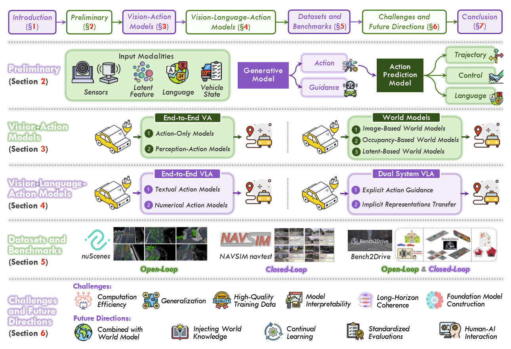
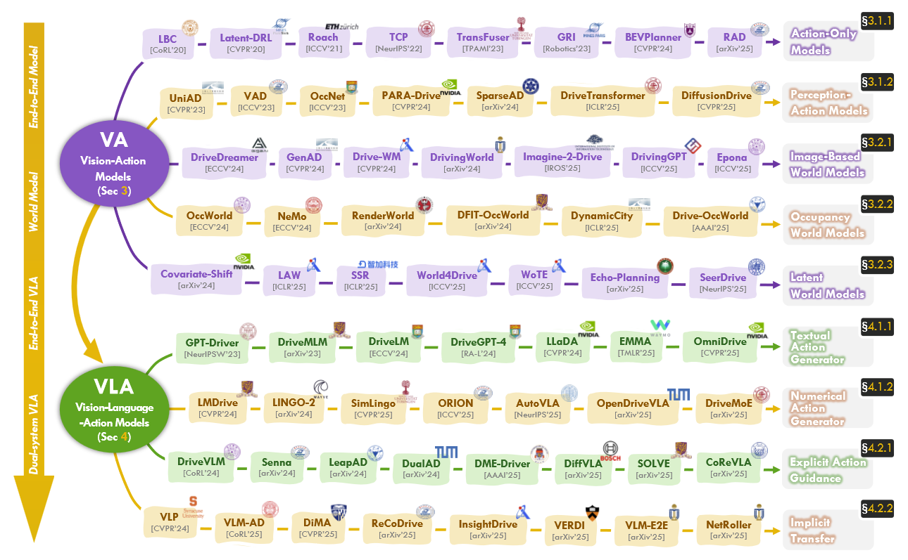
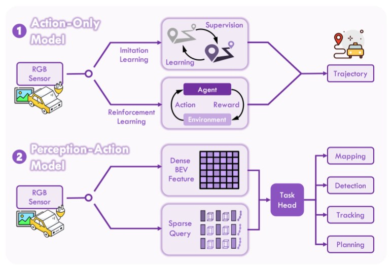
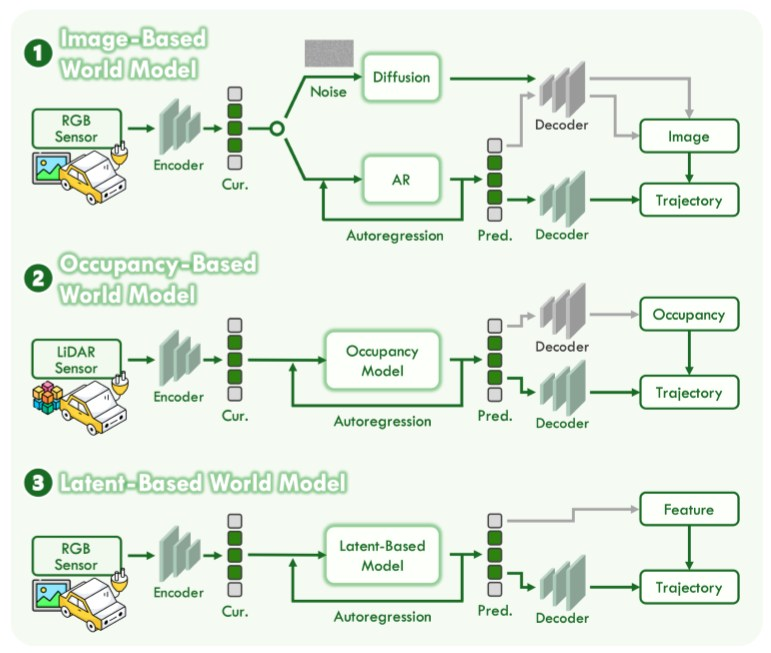
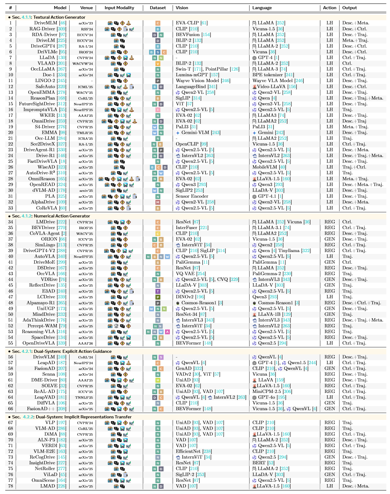
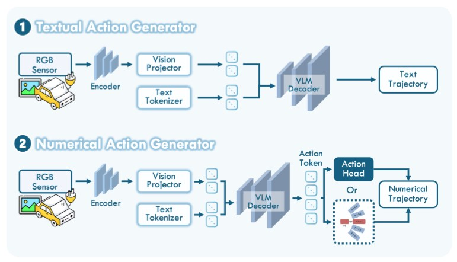
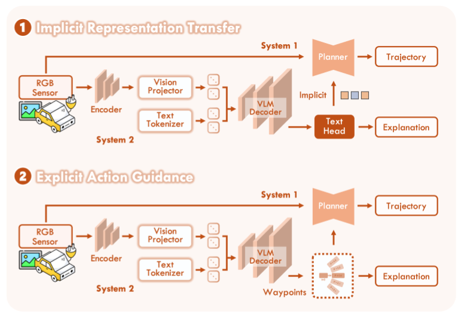
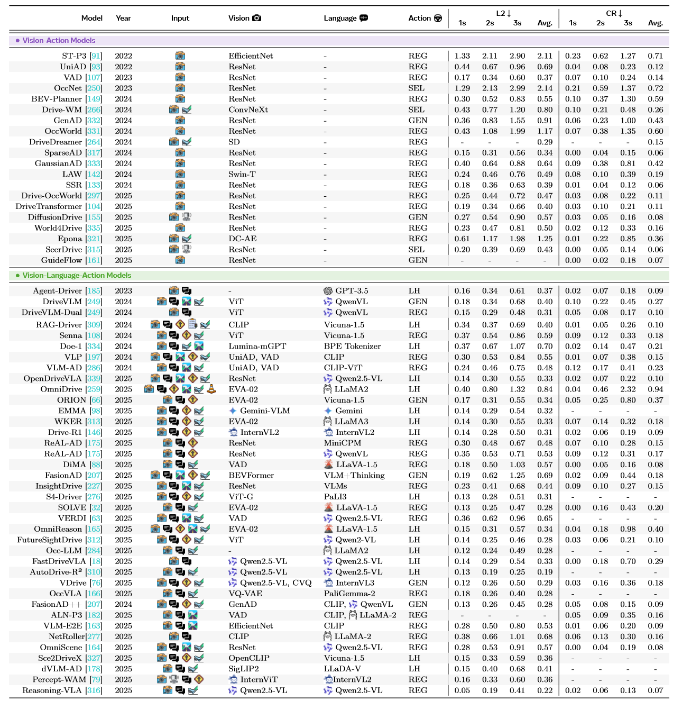
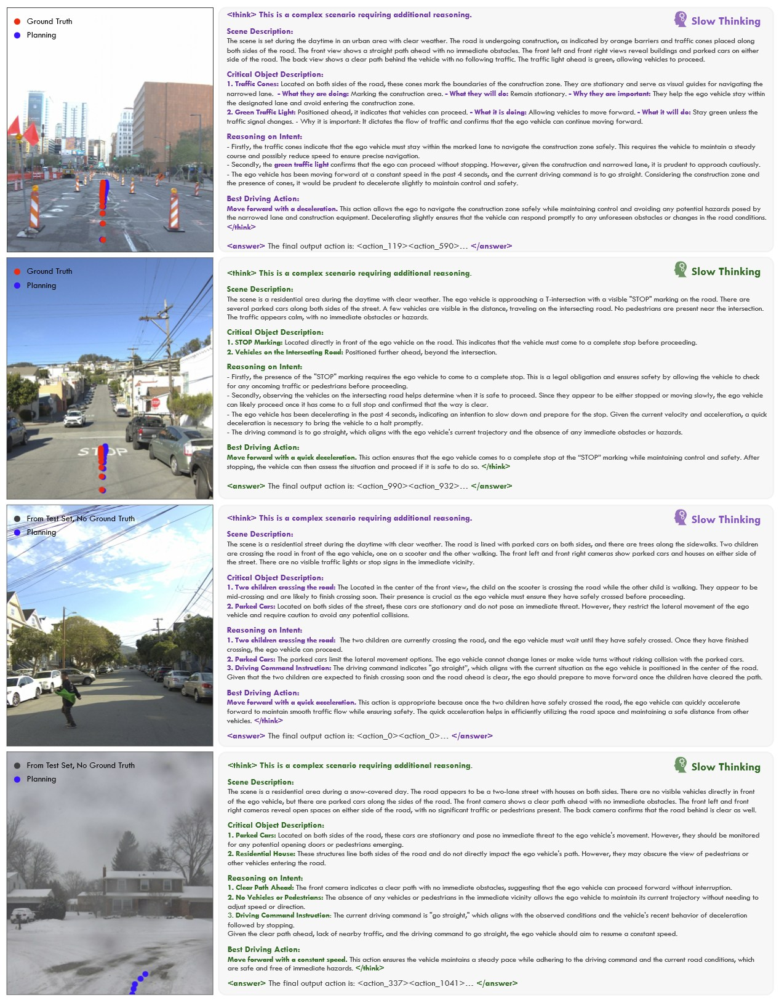

目次
Vision-Language-Action Models for Autonomous Driving: Past, Present, and Future
Tianshuai Hu1,*、Xiaolu Liu2,*、Song Wang2,*、Yiyao Zhu1,*、Ao Liang3,*、Lingdong Kong3,*,†、Guoyang Zhao4、Zeying Gong4、Jun Cen5、Zhiyu Huang6、Xiaoshuai Hao7、Linfeng Li3、Hang Song8、Xiangtai Li9、Jun Ma1,4、Shaojie Shen1、Jianke Zhu2、Dacheng Tao9、Ziwei Liu9,‡、Junwei Liang1,4,‡
1HKUST 2Zhejiang University 3National University of Singapore 4HKUST(GZ) 5DAMO Academy, Alibaba 6University of California, Los Angeles 7Xiaomi EV 8Xi’an Jiaotong University 9Nanyang Technological University, Singapore
WorldBench Team
* 同等の貢献、† プロジェクトリーダー、‡ 責任著者
arXiv:2512.16760v2 [cs.RO]、2026年1月4日
翻訳について：原文 PDF は
64_VLA4AD_Survey_2512.16760.pdf（全 47 ページ）。本文、図の説明、図中ラベル、表、脚注、付録を訳出し、論文タイトルと参考文献は原文のまま掲載。図は原図を掲載し、英語ラベルの日本語訳を併記した。数式・数値・引用番号・コードの識別子は原文を維持。原文の記述に関する補足は「訳注」と明示し、本文と区別している。著者記号は原文ではアイコン（車の絵文字）で示されているため、訳文では *、†、‡ に置き換えた。
要旨
自動運転は長らく、モジュール型の「知覚-判断-行動（Perception-Decision-Action）」パイプラインに依存してきたが、そこでは人手で設計されたインタフェースとルールベースの構成要素が、複雑なシナリオやロングテールのシナリオでしばしば破綻する。さらに、そのカスケード型の設計は知覚の誤差を伝播させ、下流の計画と制御を劣化させる。視覚-行動（Vision-Action, VA）モデルは、視覚入力から行動への直接的な写像を学習することで一部の限界に対処するが、依然として不透明であり、分布シフトに敏感で、構造化された推論や指示追従の能力を欠いている。大規模言語モデル（LLM）とマルチモーダル学習の近年の進歩は、知覚と言語に基づく意思決定を統合する視覚-言語-行動（Vision-Language-Action, VLA）フレームワークの登場を促した。視覚理解、言語的推論、実行可能な出力を統一することで、VLA は運転方策に対して、より解釈可能で、汎化性が高く、人間に整合したパラダイムを提供する。本研究は、自動運転における新興の VLA の全体像を構造的に特徴づける。初期の VA アプローチから現代の VLA フレームワークへの発展をたどり、既存手法を 2 つの主要なパラダイムに整理する。すなわち、知覚・推論・計画を単一モデル内で統合するエンドツーエンド VLA と、（VLM による）低速な熟考を（プランナによる）高速で安全性が重要な実行から分離するデュアルシステム VLA である。これらのパラダイムの中で、さらにテキスト行動生成器 対 数値行動生成器、明示的ガイダンス 対 暗黙的ガイダンスの機構といったサブクラスを区別する。また、VLA ベースの運転システムを評価するための代表的なデータセットとベンチマークをまとめ、頑健性、解釈可能性、指示への忠実性を含む主要な課題と未解決の方向性を示す。全体として、本研究は人間と協調可能な自動運転システムを前進させるための首尾一貫した基盤の確立を目指す。
プロジェクトページ：https://worldbench.github.io/vla4ad
GitHub リポジトリ：https://github.com/worldbench/awesome-vla-for-ad
HuggingFace リーダーボード：https://huggingface.co/spaces/worldbench/vla4ad
1 はじめに
完全な自動運転（AD）の追求は、AI とロボティクスにおいて長らく中心的な目標であった［37, 72, 122］。従来の AD システムは典型的にモジュール型の「知覚-判断-行動」パイプラインを採用しており、そこではマッピング［82, 83］、物体検出［121, 148, 152, 199］、動き予測［55, 116, 307］、軌道計画［150, 308］が別々の構成要素として開発・最適化される。この設計は構造化された環境では高い性能を達成してきたが、人手で設計されたインタフェースとルールへの依存が、複雑な［84, 85, 220］、動的な［120, 274, 275］、そしてロングテールのシナリオ［73, 197, 302］への適応性を制限している。さらに、逐次的なカスケードはステージ間の誤差伝播を起こしやすく、知覚のノイズが下流の推論と制御によって増幅され、安定性と安全性を損なう。

図1：概要。本研究は、自動運転のための VLA パラダイムの構造化されたロードマップを提供することを目指す。まず予備的基礎（第 2 節）から始め、VLA モデルの一般的な定式化を形式化し、その 3 つの中核構成要素、すなわちマルチモーダルな入力モダリティ、VLM バックボーン、行動予測ヘッドを詳述する。次に、知覚を制御へ直接写像する VA モデル（第 3 節）から、言語に基づく推論と解釈可能な意思決定を取り入れた VLA モデル（第 4 節）への発展をたどる。さらに、VLA アーキテクチャを、視覚・言語・行動モジュールの統合の仕方が異なる 2 つの主要なパラダイム、すなわちエンドツーエンド VLA（第 4.1 節）とデュアルシステム VLA（第 4.2 節）に分類する。続いて、運転知能の開ループ評価と閉ループ評価の両方を可能にするデータセットとベンチマーク（第 5 節）を概観する。最後に課題と今後の方向性（第 6 節）を論じ、解釈可能性、推論、人間と AI のインタラクションを、次世代の VLA ベース自動運転研究を推進する中心的テーマとして強調する。
図中ラベル：Introduction＝はじめに、Preliminary＝予備知識、Vision-Action Models＝視覚-行動モデル、Vision-Language-Action Models＝視覚-言語-行動モデル、Datasets and Benchmarks＝データセットとベンチマーク、Challenges and Future Directions＝課題と今後の方向性、Conclusion＝結論、Input Modalities＝入力モダリティ、Sensors＝センサ、Latent Feature＝潜在特徴、Language＝言語、Vehicle State＝車両状態、Generative Model＝生成モデル、Action＝行動、Guidance＝ガイダンス、Action Prediction Model＝行動予測モデル、Trajectory＝軌道、Control＝制御、End-to-End VA＝エンドツーエンド VA、Action-Only Models＝行動のみモデル、Perception-Action Models＝知覚-行動モデル、World Models＝世界モデル、Image-Based World Models＝画像ベース世界モデル、Occupancy-Based World Models＝占有ベース世界モデル、Latent-Based World Models＝潜在ベース世界モデル、End-to-End VLA＝エンドツーエンド VLA、Textual Action Models＝テキスト行動モデル、Numerical Action Models＝数値行動モデル、Dual System VLA＝デュアルシステム VLA、Explicit Action Guidance＝明示的行動ガイダンス、Implicit Representations Transfer＝暗黙的表現転移、Open-Loop＝開ループ、Closed-Loop＝閉ループ、Challenges＝課題、Computation Efficiency＝計算効率、Generalization＝汎化、High-Quality Training Data＝高品質な学習データ、Model Interpretability＝モデルの解釈可能性、Long-Horizon Coherence＝長期的一貫性、Foundation Model Construction＝基盤モデルの構築、Future Directions＝今後の方向性、Combined with World Model＝世界モデルとの統合、Injecting World Knowledge＝世界知識の注入、Continual Learning＝継続学習、Standardized Evaluations＝標準化された評価、Human-AI Interaction＝人間と AI のインタラクション
これらの問題を緩和するため、研究はますますエンドツーエンド自動運転へと移行しており、そこでは視覚-行動（VA）モデルが、模倣学習［42, 198, 204］や強化学習［67, 150, 281］を用いて、生のセンサ入力を制御コマンドや軌道ウェイポイントへ直接写像する。ALVINN［203］や ChauffeurNet［9］のような初期のシステムは、大規模な行動クローニングの実現可能性を示した。その後の進歩により、より表現力の高いアーキテクチャが導入された。TransFuser［39］は Transformer ベースのマルチモーダル融合を活用し、UniAD［93］は知覚と計画を統一し、VAD［107］はベクトル化されたシーン表現を活用し、DriveTransformer［104］はスケーラブルな Transformer バックボーンを探究し、DiffusionDrive［155］はマルチモーダルな軌道予測に生成モデリングを適用した。これらの VA モデルは総じて、複雑な運転方策をデータから直接学習できることを示し、現代のエンドツーエンド AD システムの基礎を築いた。
こうした成功にもかかわらず、VA モデルには根本的な限界がある。それらは大部分が「ブラックボックス」として振る舞い、安全性が重要な場面で限られた解釈可能性しか提供しない［27, 112, 123, 124, 189, 309］。学習データ中で十分に表現されていない稀なシナリオやロングテールのシナリオでは、その汎化は脆いままである［2, 27, 68, 110, 145, 309］。知覚を低レベルの行動へ直接写像するため、思考の連鎖（chain-of-thought, CoT）推論や文脈的な熟考を欠いており［27, 69, 110, 286］、曖昧な、あるいは多段階のインタラクションを解決する能力が制限される。さらに、視覚入力に焦点を当てているため、高レベルの計画や自然言語による人間の指示を取り込むことができず、人間と車両のインタラクションに空白を残している［110, 197, 222, 320］。
大規模言語モデル（LLM）と大規模マルチモーダルモデル（LMM）の登場は、新たなパラダイム、すなわち視覚-言語-行動（VLA）モデル［180, 217, 336］を促進した。VLA モデルは、視覚言語モデル（VLM）バックボーンと行動予測ヘッドを結合し、マルチモーダル入力（視覚＋言語）から実行可能な運転行動への直接的な写像を可能にする。知覚、言語理解、意思決定を同時にモデル化することで、VLA フレームワークは人間のような推論、解釈可能性、指示追従を提供することを目指している［66, 71, 340］。DriveMLM［46］や GPT-Driver［184］のような初期の探究は、高レベルの意思決定の理解のために運転パイプラインへ言語モジュールを導入し、より統合された設計への道を開いた。その後のシステムは、閉ループで推論中心の VLA モデルへと進展した。LMDrive［222］は言語誘導の閉ループ運転を達成し、DriveLM［225］は視覚的質問応答を介した構造化推論を可能にし、DriveGPT4［287］は意思決定に対する自然言語による根拠を提供した。近年の研究は、推論と制御の密結合をさらに探究しており、高速／低速思考と GRPO ベースの最適化［224］を備えた AutoVLA［340］や、言語と行動の整合を明示的に研究する SimLingo［213］などがある。
しかし、エンドツーエンド VLA モデルはリアルタイムで推論と行動を同時に行わなければならず、レイテンシと安全性に課題を生む。これがデュアルシステム VLA の設計につながった。そこでは、高レベルの意思決定が低レベルの軌道実行から分離される。DriveVLM［249］は VLM でテキストによる根拠や判断を生成しつつ、軌道については古典的なプランナに依存する。VLP［197］はウェイポイントと価値マップをトークン化して計画を考慮した潜在行動を生成し、Diff-VLA［106］はルールベースまたは最適化ベースのコントローラで洗練される言語誘導の軌道を合成する。InsightDrive［227］は因果的な言語推論をモデル予測制御（MPC）と統合し、なぜを VLM に、どのようにをプランナに割り当てる。
これらの発展は総じて、知覚駆動のパイプラインから、推論・理解・行動を一体的に行うシステムへのパラダイムシフトを示している。この分野の急速な発展を踏まえると、その概念的基盤を整理し、アーキテクチャの傾向を明確にし、新たな方向性について構造化された分析を提供する必要がある。
貢献。本研究は、自動運転のための VLA モデルを包括的に特徴づける。具体的には以下のとおりである。
- 前身となる VA モデル（第 3 節）から現代の VLA フレームワーク（第 4 節）への発展を描き、歴史的文脈を提供するとともに、このパラダイムシフトの背後にある動機を明らかにする。
- VLA アーキテクチャをエンドツーエンド（第 4.1 節）とデュアルシステム（第 4.2 節）の設計に分類する分類体系を提案し、それらの原理、利点、限界を比較する。
- VLA ベースの運転に関連するデータセットと評価ベンチマークを体系的に整理し（第 5 節）、一貫性のある有意義な比較を促進する。
- 実世界での VLA 展開における主要な課題を特定し、より安全で信頼性の高い自律システムへの進歩を導くための今後の研究方向を概説する（第 6 節）。
範囲。本研究は、ドメイン特化の焦点、歴史的な枠組み、アーキテクチャの深さという点で、VLA モデルに関する先行研究［110, 180, 217, 336］とは異なる。1ドメイン特化の焦点。ロボティクスや身体性 AI にまたがるより広範な分析［179, 223］とは異なり、本研究は自動運転のみに焦点を当てており、運転特有の課題、データセットの特性、安全要件のきめ細かな分析を可能にしている。2歴史的・概念的な連続性。初期の VA モデルから現代の VLA フレームワークへの道筋をたどる「過去・現在・未来」の叙述を採用し、知覚と制御への言語グラウンディングの統合の根底にある動機と技術的系譜を強調する。3きめ細かなアーキテクチャ分類体系。先行する高レベルな概観［44, 110, 301, 338］とは異なり、エンドツーエンド VLA モデルとデュアルシステム VLA モデルを区別し、それらが知覚・推論・制御をどのように編成しているかを分析する階層的な分類体系を提案する。
このようにドメイン特化性、歴史的深さ、構造化されたアーキテクチャ分析を組み合わせることで、自動運転における VLA 研究のための包括的で示唆に富む参考資料を提供することを目指す。

図2：既存文献における代表的な VA モデルと VLA モデルのまとめ。エンドツーエンドモデル、世界モデル、デュアルシステムなどにまたがる。関連手法の完全なリストと、それらの仕様・構成・技術的詳細に関する議論については、それぞれ第 3 節と第 4 節を参照されたい。
図中ラベル：VA Vision-Action Models (Sec 3)＝VA 視覚-行動モデル（第 3 節）、VLA Vision-Language-Action Models (Sec 4)＝VLA 視覚-言語-行動モデル（第 4 節）、End-to-End Model＝エンドツーエンドモデル、World Model＝世界モデル、End-to-End VLA＝エンドツーエンド VLA、Dual-system VLA＝デュアルシステム VLA、Action-Only Models＝行動のみモデル、Perception-Action Models＝知覚-行動モデル、Image-Based World Models＝画像ベース世界モデル、Occupancy World Models＝占有世界モデル、Latent World Models＝潜在世界モデル、Textual Action Generator＝テキスト行動生成器、Numerical Action Generator＝数値行動生成器、Explicit Action Guidance＝明示的行動ガイダンス、Implicit Transfer＝暗黙的転移（各モデル名と会議名・年は原文のまま）
構成。本論文の残りは次のように構成される。第 2 節では VLA フレームワークの予備的基礎を紹介する。第 3 節では VA モデルの発展を概説する。第 4 節では VLA アーキテクチャの分類体系と分析を示す。第 5 節ではデータセットとベンチマークをまとめる。第 6 節では残された課題と今後の方向性を論じる。第 7 節で本研究を締めくくる。
2 予備的基礎
視覚-言語-行動（VLA）フレームワーク［2, 179, 339, 340］は、大規模な視覚言語モデル（VLM）［34, 40, 129, 258］を活用して複雑な運転シーンを解釈し、実行可能な行動を生成する。典型的な定式化は次のように表せる。
\[ \mathbf{a}_t = H(F(\mathbf{x}|\theta)) \ , \tag{1} \]
ここで \(\mathbf{x}\) は時刻 \(t\) におけるマルチモーダル入力、\(F(\cdot)\) は \(\theta\) でパラメータ化された VLM バックボーン、\(H(\cdot)\) は行動生成ヘッドを表す。本節では、これら 3 つの構成要素、すなわち入力モダリティ（\(\mathbf{x}\)）、VLM バックボーン（\(F\)）、行動予測ヘッド（\(H\)）を紹介する。
2.1 入力モダリティ
入力 \(\mathbf{x}\) は、外部環境と自車両の状態を記述する異種の信号を集約したものである［16, 234, 269］。これらの入力は 4 つのカテゴリに分類できる。すなわち、センサ観測、潜在シーン表現、言語指示、自己受容的状態である。
2.1.1 センサ入力
センサ入力には、車載センサから直接得られる生データまたは前処理済みデータが含まれる［23, 24, 140］。
- 視覚画像。密な意味情報を提供するサラウンドビューの RGB 画像：\(\mathbf{x}_{\text{img}} \in \mathbb{R}^{N_c \times H \times W \times 3}\)。ここで \(N_c\) はカメラの台数（例えば 6〜8）、\(H\)、\(W\) は各画像の高さと幅である。
- LiDAR 点群。環境の幾何形状を表す 3D 点の疎または密な集合：\(\mathbf{x}_{\text{lidar}} \in \mathbb{R}^{N_p \times D},\ \ D \geq 4\)。ここで \(N_p\) は点の数であり、\(D\) には \(x, y, z\)、速度、反射強度などの次元が含まれる。
2.1.2 潜在表現
多くの VLA システムは、マルチモーダルなセンサ入力を融合した中間的な空間表現上で動作する。
- 鳥瞰図（BEV）特徴。トップダウン視点の表現であり、多くの場合カメラまたは LiDAR データの融合によって生成される［148, 154, 167］：\(\mathbf{x}_{\text{bev}} \in \mathbb{R}^{C \times H_{\text{bev}} \times W_{\text{bev}}}\)。ここで \(C\) は特徴チャネル数、\(H_{\text{bev}}, W_{\text{bev}}\) は BEV グリッドの空間次元である。
- 占有グリッド。各空間位置の占有と意味を予測する 3D ボリューム表現［166, 260, 267, 284］：\(\mathbf{x}_{\text{occ}} \in \mathbb{R}^{C_{\text{occ}} \times X \times Y \times Z}\)。ここで \(X, Y, Z\) は 3D グリッドの空間解像度であり、\(C_{\text{occ}}\) は占有特徴チャネルの数（例えば、占有、フロー、意味）を表す。
2.1.3 言語入力
VLA の能力を実現するため、モデルは高レベルのテキスト指示やタスク記述も受け取る［65, 76, 287］。これは運転タスクや目標を表すトークン列で構成される（例えば「次の交差点で左折せよ」）：\(\mathbf{x}_{\text{lang}} \in \mathbb{Z}^T\) または \(\mathbf{x}_{\text{lang}} \in \mathbb{R}^{T \times D_{\text{emb}}}\)。ここで \(T\) は系列長、\(D_{\text{emb}}\) は埋め込み次元である（トークン埋め込みを用いる場合）。
2.1.4 車両状態情報
自車両の現在の動的状態を記述する自己受容的情報もある［16, 149］：\(\mathbf{x}_{\text{state}} \in \mathbb{R}^{D_{\text{state}}}\)。ここで \(D_{\text{state}}\) は状態ベクトルの次元であり、速度、加速度、操舵角、ヨーレート、方向指示器の状態などを含む。
2.2 VLM バックボーン（\(F\)）
VLM バックボーン \(F(\cdot)\) はシステムの中核となる推論エンジンである。典型的には大規模な視覚言語モデルである［5, 8, 34, 159, 258, 343］。その主な役割は、多様な入力モダリティを単一の強力な潜在表現に融合することである。これは、視覚入力を処理する視覚エンコーダ（例えば Vision Transformer, ViT）［210］と、視覚特徴を条件として生成を行う LLM デコーダから構成される。視覚特徴を言語埋め込みと整合させるために、ブリッジネットワーク［34, 159］または統一的なマルチモーダルトークンモデリング機構［5, 258］が用いられる。VLM は行動を直接生成することも、より頑健な結果を得るために別の行動エキスパートへガイダンスを提供することもできる。
2.2.1 直接的な行動生成のための VLM（シングルシステム）
このパラダイムでは、VLM は言語ヘッド［46, 98, 184, 225］または付加された小さなヘッド［213, 222, 288］を通じて行動を直接出力する。この完全なエンドツーエンド設計は、VLM の推論能力を活用して、視覚／言語入力を実行可能な制御へ写像する。
2.2.2 ガイダンス生成のための VLM（デュアルシステム）
あるいは、VLM は中間的なガイダンス、すなわちテキストによる根拠［80, 207, 249］や構造化された潜在意図［145, 197］を生成する高レベル推論モジュールとして機能し、それを下流のプランナが低レベルの行動に変換する［257］。この「低速思考＋高速実行」のアーキテクチャは解釈可能性を向上させ、プランナが物理的実現可能性と安全制約を課すことを可能にする。
2.3 行動予測ヘッド（\(H\)）
ヘッド \(H(\cdot)\) は VLM の潜在表現を行動出力に変換する。既存文献で用いられている分類体系と整合するように、出力の定式化と生成機構に基づいて、行動ヘッドを 4 種類に分類する。すなわち、言語ヘッド（LH）、回帰（REG）、軌道選択（SEL）、軌道生成（GEN）である。
- 言語ヘッド（LH）。この設計は、VLM 固有のテキスト生成能力を直接利用して、言語空間で行動を生成する。ヘッドは典型的には VLM の言語モデリングヘッドであり、自由形式のテキストコマンド（例えば「左折」）［287］または離散化された行動トークンの列［340］を出力するよう学習される。モデルはこれらのトークンを自己回帰的に予測し、その後それらは実行可能な信号へと解析される。このアプローチは、DriveMLM［46］や DriveGPT4［287］のようなテキスト行動生成器で広く採用されている。
- 回帰（REG）。この定式化は、デコーダ構造に続いて回帰器（典型的には多層パーセプトロン）を用い、連続値を直接予測する。言語ヘッドとは異なり、Transformer や GRU で集約された潜在特徴を、操舵角、スロットル／ブレーキ値、軌道ウェイポイントなどの特定の数値出力に写像することで、離散化を回避する。この決定論的アプローチを用いる代表的な手法には LMDrive［222］と DriveGPT4-V2［288］がある。
- 軌道選択（SEL）。このヘッドは、単一の経路を直接回帰する代わりに、候補軌道の集合を評価し、学習されたコスト関数またはスコアリング機構に基づいて最適なものを選択する。モデルは典型的には、動的に実現可能な多様な軌道の集合を生成またはサンプリングし、潜在表現を用いて各候補のコストまたは確率を予測する。WoTE［144］や SeerDrive［315］のような手法で用いられるこのアプローチは、事前定義された候補から選択することで、最終出力が運動学的制約に従うことを保証する。
- 軌道生成（GEN）。この生成的な定式化は、確率的モデリング、とりわけ拡散モデルや変分オートエンコーダを用いて行動を合成する［106, 155, 332］。ノイズから始めて、ヘッドは VLM の潜在状態と、場合によっては言語指示を条件として、軌道サンプルを反復的に洗練する。これにより、モデルは将来分布の多峰性と不確実性を捉えることができる。代表例には ORION［66］と DiffVLA［106］がある。
2.4 運転における行動
自動運転の文脈、特に VLA のようなモデルにおいて、行動空間は、モデルが車両を制御するために生成しうる出力の集合を定義する。行動表現の選択は、モデルの推論がどのように物理的な運動へ変換されるかを決定する基本的な設計判断である。以下では、行動空間表現の 3 つの主要なパラダイムを概説する。
2.4.1 離散軌道表現
このパラダイムは、車両の意図する将来の経路を空間ウェイポイントの有限列として表す［167］。各ウェイポイントは、車両が特定の将来時刻ステップで到達すると想定される空間座標である。この表現により、明示的な幾何学的経路計画と軌道最適化が可能になる。現在時刻 \(t\) において定式化される行動 \(\mathbf{a}_t\) は、\(\Phi\) 個の将来ウェイポイントの集合である。
\[ \mathbf{a}_t = \{(x_i, y_i)\}_{i=1}^{\Phi}, \quad \text{where } (x_i, y_i) \in \mathbb{R}^2 \ . \tag{2} \]
ここで \(\Phi\) は予測ホライズン（将来ステップの総数）であり、各 \((x_i, y_i)\) はステップ \(i\) における目標位置を表す 2 次元直交座標平面上の座標である。
2.4.2 連続軌道表現
このアプローチは、離散点の代わりに、車両の運動を将来の時間ホライズンにわたる連続関数としてパラメータ化する［163］。軌道は典型的には、速度や旋回半径など、車両の縦方向・横方向の運動を支配する関数によって定義される。行動 \(a_t\) は、時間区間 \([0, T]\) にわたるこれらの連続関数によって定義される。
\[ \mathbf{a}_t = (v(t), \kappa(t)), \quad \text{for } t \in [0, T] \ . \tag{3} \]
この定式化において、\(v(t)\) は車両の速度プロファイル、\(\kappa(t)\) は将来の時間ホライズン \(T\) にわたる曲率プロファイルを表す。これは車両ダイナミクスの連続的な性質を本質的に捉える。
2.4.3 直接制御表現
このパラダイムは、車両のアクチュエータへ即座に送られる低レベルの車両制御コマンドを直接出力するものである［288］。これらの出力は典型的には、操舵、加速、制動の制御のための連続信号から成る。値はしばしば正規化され、車両の物理的な動作範囲内に収まるよう制約される。行動ベクトル \(a_t\) は、特定の時刻ステップ \(t\) における制御信号を表す。
\[ \mathbf{a}_t = (\delta_t, \tau_t, \beta_t) \ , \tag{4} \]
ここで \(\delta_t\) は時刻ステップ \(t\) における操舵角、\(\tau_t\) はスロットル入力、\(\beta_t\) はブレーキ入力である。各成分は車両のハードウェア限界によって制約される。例えば \(\delta_t \in [\delta_{\min}, \delta_{\max}]\) である。
2.4.4 言語表現
このパラダイムは、VLM の自然言語能力を活用し、テキスト記述によって運転行動を表現する［18］。行動は、事前定義された語彙からの離散トークンの列として表される。
\[ \mathbf{a}_t = \{w_1, w_2, \ldots, w_T\}, \quad \text{where } w_i \in \mathcal{V} \ . \tag{5} \]
ここで \(\mathcal{V}\) はモデルの語彙、\(T\) は系列長を表し、各トークン \(w_i\) は語彙の要素に対応する。言語ベースの行動は、高レベルのコマンド（例えば「交差点で左折せよ」）から、テキストトークンとしてエンコードされた具体的な数値軌道表現まで多岐にわたりうる。
3 視覚-行動モデル
視覚-行動（VA）モデルは、自動運転において最も初期かつ最も影響力のある研究系統の一つである。その中核となる考えは、センサ観測（典型的にはカメラ入力）を運転行動へ直接写像し、知覚・予測・計画への明示的なモジュール分解を回避することである。深層ニューラルネットワークによって実現された VA モデルは、2 つの主要な学習パラダイムを通じて探究されてきた。すなわち、1エキスパートのデモンストレーションから方策を蒸留する模倣学習と、2試行錯誤的なインタラクションを通じて行動を最適化する強化学習である。より最近では、世界モデルがこのパラダイムを拡張し、エージェントがシーンのダイナミクスをシミュレーションし行動の帰結について推論することを可能にして、頑健性とスケーラビリティを向上させている。表 1 は代表的な取り組みの概要を示す。
アーキテクチャの観点から、自動運転のための VA 手法は大きく次のように分類できる。
- エンドツーエンドモデル：センサ入力から制御コマンドや計画軌道を直接予測する。
- 世界モデル：方策学習と意思決定を支援するために、行動を条件とした将来のダイナミクスを明示的にモデル化する。
3.1 自動運転のためのエンドツーエンドモデル
エンドツーエンド（E2E）モデルは、生の、または中間的なセンサ観測を行動や計画軌道へ写像する単一のニューラルネットワークを学習する［15, 27, 37, 144］。知覚・予測・計画を分離するモジュール型スタックとは異なり、E2E アプローチはこれらのタスクを統一された表現の中で暗黙的に結合する［91, 108, 236］。知覚の教師信号を用いるかどうかに応じて、既存手法は 2 つの主要なカテゴリ、すなわち図 3 に示すように行動のみモデルと知覚-行動モデルに分けられる。
3.1.1 行動のみモデル
行動のみモデルは、簡素化された 1 段階の定式化を採用する。すなわち、センサ入力を、低レベルの行動を出力するネットワークへ直接入力する。これらの手法は主に、方策をデモンストレーションから学習するか、探索を通じて学習するかで異なる。
模倣学習（IL）、特に行動クローニング［6］は、図 3 の IL 分岐に示すように、エキスパートの行動に一致させることで方策を学習する。初期の研究［15, 42, 198, 203］は、単眼または多視点の入力から行動を直接予測できることを示し、その後の設計はバックボーンアーキテクチャを洗練させた［23, 39, 206］。NEAT［38］は中間的な注意マップによって行動に関連する画像領域を強調し、TCP［272］は軌道分岐と制御分岐を融合して相補的な教師信号を得る。シーンの幾何形状をよりよく活用するため、BEV-Planner［149］は自車状態で強化された BEV 特徴から軌道を予測する。Urban-Driver［218］は、微分可能なデータ駆動シミュレータ内で方策を学習することで、開ループ評価を超えている。
IL ベースの手法は単純かつ効率的で、報酬設計を必要としない。しかし、分布シフト［56, 205, 215］や因果的混同［49, 190, 200］に対して依然として敏感であり、これがロングテールや稀な事象のシナリオにおける信頼性を損ないうる。
強化学習（RL）はインタラクションを通じて行動を最適化し、模倣ベースのアプローチより高い柔軟性を提供する［118, 237］。いくつかの研究は、RL を教師あり事前学習と組み合わせることで RL のサンプル非効率性に対処している。Latent-DRL［251］と Gri［22］はセマンティックセグメンテーションを用いて視覚エンコーダを事前学習し、LSD［194］は RL によるファインチューニングを行う前に IL で方策を初期化する。特権情報の蒸留も有効であることが示されている。LBC［24］、WoR［25］、Roach［326］は、シミュレータでのみ得られる状態を用いてセンサベースのエージェントを導く。
世界モデルと組み合わせたものとして、Think2Drive［136］は、環境の遷移を学習するコンパクトな潜在世界モデルと組み合わせたモデルベース RL（MBRL）手法でエージェントを学習する。Raw2Drive［300］はデュアルストリームの MBRL アプローチであり、カメラベースの行動予測のために、生センサの世界モデルを特権世界モデルと整合させる。非フォトリアリスティックな CARLA［56］での研究とは対照的に、近年の取り組みはフォトリアリスティックな世界モデリングへと移行している。RAD［67］は、現実的な 3DGS 環境において IL で正則化された、3DGS ベース［115］の閉ループ RL 学習パラダイムを確立している。RL ベースのモデルにおける主要な課題には、サンプル非効率性［150］、報酬関数の設計［119］、シミュレーションから実世界への転移（sim-to-real）［37］が含まれる。
| # | モデル | 発表先 | 入力 | データセット | 視覚エンコーダ | 行動 | 出力 |
|---|---|---|---|---|---|---|---|
| ● 第 3.1.1 節 行動のみモデル | |||||||
| 1 | LBC［24］ | CoRL'20 | Cam | CARLA, NoCrash | ResNet［87］ | RL | Ctrl.+Traj. |
| 2 | Latent-DRL［251］ | CVPR'20 | Cam | CARLA | ResNet［87］ | RL | Ctrl. |
| 3 | NEAT［38］ | ICCV'21 | Cam | CARLA | ResNet［87］ | REG | Traj. |
| 4 | Roach［326］ | ICCV'21 | Cam | CARLA, NoCrash | ResNet［87］ | RL | Ctrl. |
| 5 | WoR［25］ | ICCV'21 | Cam | CARLA, NoCrash, ProcGen | ResNet［87］ | REG | Ctrl. |
| 6 | TCP［272］ | NeurIPS'22 | Cam | CARLA | ResNet［87］ | REG | Ctrl.+Traj. |
| 7 | Urban-Driver［218］ | CoRL'22 | Cam | Lyft | ResNet［87］ | REG | Traj. |
| 8 | LAV［23］ | CVPR'22 | Cam, LiDAR | CARLA | ResNet［87］ | REG | Ctrl.+Traj. |
| 9 | TransFuser［39］ | TPAMI'23 | Cam, LiDAR | CARLA | ResNet［87］ | REG | Traj. |
| 10 | GRI［22］ | Robotics'23 | Cam | CARLA | EfficientNet［238］ | RL | Ctrl. |
| 11 | BEVPlanner［149］ | CVPR'24 | Cam | nuScenes | ResNet［87］ | REG | Traj. |
| 12 | Raw2Drive［300］ | NeurIPS'25 | Cam | CARLA, Bench2Drive | ResNet［87］ | RL | Ctrl. |
| 13 | RAD［67］ | NeurIPS'25 | Cam | Private | ResNet［87］ | RL | Traj. |
| 14 | TrajDiff［75］ | arXiv'25 | Cam, LiDAR, Ego | NAVSIM | ResNet［87］ | GEN | Traj. |
| ● 第 3.1.2 節 知覚-行動モデル | |||||||
| 15 | ST-P3［91］ | ECCV'22 | Cam | nuScenes, CARLA | EfficientNet［238］ | SEL | Traj. |
| 16 | UniAD［93］ | CVPR'23 | Cam | nuScenes | ResNet［87］ | REG | Traj. |
| 17 | VAD［107］ | ICCV'23 | Cam | nuScenes | ResNet［87］ | REG | Traj. |
| 18 | OccNet［250］ | ICCV'23 | Cam | nuScenes, OpenOcc | ResNet［87］ | SEL | Traj. |
| 19 | GenAD［332］ | ECCV'24 | Cam | nuScenes | ResNet［87］ | GEN | Traj. |
| 20 | PARA-Drive［268］ | CVPR'24 | Cam | nuScenes | ResNet［87］ | REG | Traj. |
| 21 | Hydra-MDP［147］ | CVPRW'24 | Cam, LiDAR | NAVSIM | ResNet［87］ | SEL | Traj. |
| 22 | SparseAD［317］ | arXiv'24 | Cam | nuScenes | ResNet［87］ | REG | Traj. |
| 23 | GaussianAD［333］ | arXiv'24 | Cam | nuScenes | ResNet［87］ | REG | Traj. |
| 24 | DiFSD［231］ | arXiv'24 | Cam | nuScenes | ResNet［87］ | GEN | Traj. |
| 25 | DriveTransformer［104］ | ICLR'25 | Cam | nuScenes, Bench2Drive | ResNet［87］ | REG | Traj. |
| 26 | SparseDrive［236］ | ICRA'25 | Cam | nuScenes | ResNet［87］ | REG | Traj. |
| 27 | DiffusionDrive［155］ | CVPR'25 | Cam, LiDAR | nuScenes, NAVSIM | ResNet［87］ | GEN | Traj. |
| 28 | GoalFlow［279］ | CVPR'25 | Cam, LiDAR, Ego | NAVSIM | VoVNet［128］ | GEN | Traj. |
| 29 | GuideFlow［161］ | arXiv'25 | Cam | nuScenes, NAVSIM, Bench2Drive | ResNet［87］ | GEN | Traj. |
| 30 | ETA［78］ | arXiv'25 | Cam | Bench2Drive | CLIP-ViT［210］ | REG | Traj. |
| 31 | Geo［105］ | arXiv'25 | Cam | nuScenes | ResNet［87］ | REG | Traj. |
| 32 | DiffusionDriveV2［345］ | arXiv'25 | Cam, LiDAR | NAVSIM | ResNet［87］ | GEN | Traj. |
| 33 | NaviHydra［271］ | arXiv'25 | Cam, LiDAR | NAVSIM | ResNet［87］ | SEL | Traj. |
| 34 | Mimir［280］ | arXiv'25 | Cam, LiDAR | NAVSIM | ResNet［87］ | GEN | Traj. |
| ● 第 3.2.1 節 画像ベース世界モデル | |||||||
| 35 | DriveDreamer［264］ | ECCV'24 | Cam, Ego | nuScenes | SD［214］ | REG | Traj. |
| 36 | GenAD［296］ | CVPR'24 | Cam | OpenDV | SDXL［202］ | REG | Traj. |
| 37 | Drive-WM［266］ | CVPR'24 | Cam, Ego | nuScenes | ConvNeXt［172］ | SEL | Traj. |
| 38 | DrivingWorld［92］ | arXiv'24 | Cam, Ego | nuPlan | VQ-VAE［254］ | REG | Traj. |
| 39 | Imagine-2-Drive［70］ | IROS'25 | Cam | CARLA | SVD［13］ | SEL | Traj. |
| 40 | DrivingGPT［33］ | ICCV'25 | Cam, Ego | nuPlan, NAVSIM | VQ-VAE［254］ | REG | Traj. |
| 41 | Epona［321］ | ICCV'25 | Cam, Ego | nuScenes, NAVSIM, nuPlan | DC-AE［26］ | REG | Traj. |
| 42 | VaViM［10］ | arXiv'25 | Cam | OpenDV, NAVSIM, nuPlan | LLaMAGen［235］ | GEN | Traj. |
| ● 第 3.2.2 節 占有ベース世界モデル | |||||||
| 43 | OccWorld［331］ | ECCV'24 | Cam, Ego | nuScenes, Occ3D | ResNet［87］ | REG | Traj. |
| 44 | NeMo［96］ | ECCV'24 | Cam | nuScenes | ResNet［87］ | REG | Traj. |
| 45 | OccVAR［111］ | - | Cam, Ego | nuScenes, Occ3D | ResNet［87］ | REG | Traj. |
| 46 | RenderWorld［292］ | arXiv'24 | Cam | nuScenes, Occ3D | Swin-T［171］ | REG | Traj. |
| 47 | DFIT-OccWorld［318］ | arXiv'24 | Cam, Ego | nuScenes, Occ3D | ResNet［87］ | REG | Traj. |
| 48 | Drive-OccWorld［297］ | AAAI'25 | Cam | nuScenes, Cam4DOcc | ResNet［87］ | REG | Traj. |
| 49 | T3Former［282］ | arXiv'25 | Cam, Ego | nuScenes, Occ3D | ResNet［87］ | REG | Traj. |
| 50 | AD-R1［289］ | arXiv'25 | Cam, LiDAR, Ego | nuScenes, NAVSIM | - | RL | Traj. |
| ● 第 3.2.3 節 潜在ベース世界モデル | |||||||
| 51 | Covariate-Shift［204］ | arXiv'24 | Cam, Ego | CARLA | DINOv2［196］ | REG | Traj. |
| 52 | World4Drive［335］ | ICCV'25 | Cam | nuScenes, NAVSIM | ResNet［87］ | REG | Traj. |
| 53 | WoTE［144］ | ICCV'25 | Cam, LiDAR | NAVSIM, Bench2Drive | ResNet［87］ | SEL | Traj. |
| 54 | LAW［142］ | ICLR'25 | Cam | nuScenes, NAVSIM, CARLA | Swin-T［171］ | REG | Traj. |
| 55 | SSR［133］ | ICLR'25 | Cam | nuScenes, CARLA | ResNet［87］ | REG | Traj. |
| 56 | Echo-Planning［233］ | arXiv'25 | Cam | nuScenes | ResNet［87］ | REG | Traj. |
| 57 | SeerDrive［315］ | NeurIPS'25 | Cam, LiDAR | nuScenes, NAVSIM | VoVNet［128］ | SEL | Traj. |
表1：自動運転における視覚-行動モデルのまとめ。
● 入力：カメラ、LiDAR、自車状態（Ego-Status）。
● 行動の種類：RL＝強化学習による方策、REG＝デコーダ＋MLP、SEL＝コストによる軌道選択、GEN＝生成モデルによる軌道生成。
● 出力：Ctrl.＝制御信号、Traj.＝数値軌道。
● データセット：CARLA［56］、NoCrash［43］、ProcGen［41］、Lyft［89］、nuScenes［16］、Bench2Drive［103］、NAVSIM［47］、OpenOcc［250］、OpenDV［296］、nuPlan［17］、Occ3D［248］、Cam4DOcc［177］、Private Data（非公開データ）。
（訳注：原表では入力をアイコン、データセットを色付きの頭文字バッジで示している。訳表では入力を Cam（カメラ）／LiDAR／Ego（自車状態）、データセットを名称で記した。同じ頭文字のバッジ（N：NoCrash／nuScenes／NAVSIM／nuPlan、O：OpenOcc／OpenDV／Occ3D、C：CARLA／Cam4DOcc）は色で判別したため、一部に判読の不確かさが残る。）
3.1.2 知覚-行動モデル
知覚-行動モデルは、知覚タスク（例えば、マッピング、追跡）が軌道予測を教師し制約する 2 段階のパラダイムに従う。これらの手法は一般に、図 3 に示すように、密な BEV ベースの表現か、疎なクエリベースの表現のいずれかを採用する。

図3：モデル構造と出力に基づくエンドツーエンド VA モデルの分類。行動のみモデル（第 3.1.1 節）と知覚-行動モデル（第 3.1.2 節）を含む。
図中ラベル：Action-Only Model＝行動のみモデル、Perception-Action Model＝知覚-行動モデル、RGB Sensor＝RGB センサ、Imitation Learning＝模倣学習、Supervision＝教師、Learning＝学習、Reinforcement Learning＝強化学習、Agent＝エージェント、Action＝行動、Reward＝報酬、Environment＝環境、Trajectory＝軌道、Dense BEV Feature＝密な BEV 特徴、Sparse Query＝疎なクエリ、Task Head＝タスクヘッド、Mapping＝マッピング、Detection＝検出、Tracking＝追跡、Planning＝計画
密な BEV ベースのモデルは、多視点カメラから統一されたトップダウン特徴を構築する。ST-P3［91］は知覚と計画のための時空間特徴を同時に学習する。UniAD［93］は逐次的なタスク依存関係を統合して目標指向の計画を支援する。VAD［107］はベクトル化されたシーン表現を用いて、計画の安全性と効率の両方を向上させる。OccNet［250］は占有埋め込みを取り入れて 3D シーンの幾何形状を捉える。Para-Drive［268］はリアルタイム展開のための完全並列な E2E アーキテクチャを提案する。
近年、生成ベースおよびサンプリングベースのアプローチが登場している。GenAD［332］は計画を学習された分布からのサンプリングとして定式化する。DiffusionDrive［155］はマルチモーダルなアンカーに導かれる打ち切り拡散方策を導入する。GuideFlow［161］は明示的な物理制約を生成過程に組み込む。BEV 表現は 2D 軌道計画と自然に整合する一方、その密な空間構造のために多大な計算を必要とする。
疎なクエリベースのモデルは、潜在クエリを用いて画像特徴を集約することで、明示的な BEV グリッドを回避する。SparseAD［317］と SparseDrive［236］は、疎な知覚クエリと並列プランナを用いてシーン全体を表現し、効率と精度の優れたトレードオフを達成する。DiFSD［231］は自車中心の疎な定式化を導入し、軌道のノイズ除去を通じて不確実性をモデル化する。DriveTransformer［104］は、安定性向上のためにタスク並列性、疎な注意機構、ストリーミング更新を取り入れる。GaussianAD［333］は、きめ細かくかつコンパクトなシーン表現のために 3D セマンティックガウシアンを採用する。
疎なクエリ手法は推論レイテンシを大幅に削減するが、密な将来世界の表現がないことにより、長期的な推論と計画の安全性が制限されうる。
3.2 自動運転のための世界モデル
世界モデルは、異なる自車行動のもとで運転シーンがどのように変化するかを予測することを目的とする［77, 125, 291］。シーンのダイナミクスと自車の運動を同時にモデル化することで、安全で長期的な運転方策を学習するための強力な機構を提供する［53］。その応用は、没入型シミュレーション［12, 90, 174, 212, 290, 342］、エンドツーエンド計画［68, 92, 264, 266］、下流タスクのための特徴学習［28, 29, 137, 169, 188, 298, 319］に及ぶ。ここでは軌道計画のために設計された世界モデルに焦点を当て、予測モダリティと表現の粒度によって、画像ベース、占有ベース、潜在ベースのモデルの 3 つのグループに分類する（図 4）。
3.2.1 画像ベース世界モデル
画像ベース世界モデルは、自車行動を条件として将来フレームを生成し、エージェントがシーンの変化を「夢見て」、異なる軌道の帰結を評価することを可能にする。これらの手法は現代の生成モデルを活用して、現実的で時間的に一貫した動画を合成し、典型的には拡散ベースと自己回帰型のアーキテクチャに分類される。
拡散ベース世界モデルは、潜在動画拡散［14, 214］を用いてマルチステップのロールアウトを生成する。前方視点の予測について、GenAD［296］と Vista［68］は複雑な動きのパターンを扱うために時間的推論モジュールを取り入れている。Imagine-2-Drive［70］は拡散生成を強化学習フレームワークに統合し、世界モデルの内部で方策アクターを学習する。多視点予測を支援するため、DriveDreamer［264］は動画合成と方策学習のための 2 段階パイプラインを採用する。Drive-WM［266］は時空間モデル内で視点を分解し、複数のもっともらしい未来を生成して、画像ベースの報酬を用いて軌道を選択する。
自己回帰（AR）モデルは、VQ-VAE［254］を用いて画像をトークン化し、次トークン予測によってシーンの変化をモデル化する［58, 127, 305］。DrivingWorld［92］は高忠実度で長期的な動画生成のための GPT スタイルのアーキテクチャを構築する。DrivingGPT［33］は画像トークンと行動トークンを交互に配置し、シミュレーションと軌道計画を統一する。Epona［321］は AR モデリングと拡散を組み合わせ、高解像度で長時間のロールアウトを生成する。
画像ベース世界モデルは、学習と評価に不可欠なフォトリアリスティックなシミュレーションを提供する。しかし、2D の見た目への依存が明示的な 3D 推論を制限し、安全性が重要な長期計画を妨げうる。

図4：予測モダリティに基づく世界モデルの分類。画像ベースモデル（第 3.2.1 節）、占有ベースモデル（第 3.2.2 節）、潜在ベースモデル（第 3.2.3 節）を含む。
図中ラベル：Image-Based World Model＝画像ベース世界モデル、Occupancy-Based World Model＝占有ベース世界モデル、Latent-Based World Model＝潜在ベース世界モデル、RGB Sensor＝RGB センサ、LiDAR Sensor＝LiDAR センサ、Encoder＝エンコーダ、Decoder＝デコーダ、Cur.＝現在、Pred.＝予測、Noise＝ノイズ、Diffusion＝拡散、AR＝自己回帰、Autoregression＝自己回帰、Occupancy Model＝占有モデル、Latent-Based Model＝潜在ベースモデル、Image＝画像、Occupancy＝占有、Feature＝特徴、Trajectory＝軌道
3.2.2 占有ベース世界モデル
占有ベース世界モデルは、運転シーンを時空間的な占有グリッドとして表現し、異なる行動のもとでのその変化を予測する。生のピクセルを合成する代わりに、これらのモデルは自由空間、障害物、エージェントの幾何形状と意味に焦点を当てる［153, 170, 342］。図 4 の中段に示すように、占有世界モデルでは AR 予測が一般的に用いられる。
OccWorld［331］は計画のための占有予測を初めて導入し、シーントークナイザを用いて 3D 占有を離散化したうえで、GPT スタイルの Transformer を適用して将来のシーンと自車軌道を合成する。RenderWorld［292］は自己教師ありのガウシアンモジュールによって 3D 占有を生成し、OccVAR［111］は粗から細への 4D 占有予測を行う。T3Former［282］はコンパクトなトライプレーンを用いて占有をエンコードし、マルチスケールの履歴から将来のトライプレーン更新を予測する。
別の系統では、単一段階のフィードフォワード予測を採用する。Drive-OccWorld［297］は、予測された将来の BEV 特徴を行動条件付きの 3D 予測に用いる。DFIT-OccWorld［318］は、効率的な非自己回帰予測を支援するために、分離された動的フロー戦略を導入する。NeMo［96］は、自己教師ありの画像再構成信号と組み合わせることで、視覚ベースの占有予測を改善する。
占有ベースのモデルは高い幾何学的忠実度と明示的な自由空間推論を提供するが、高コストな 3D アノテーションに依存しており、多様な環境にわたるスケーラビリティが制限されうる。
3.2.3 潜在ベース世界モデル
潜在ベース世界モデルは、明示的な画像や占有の予測を迂回し、代わりに圧縮された潜在空間で将来のダイナミクスを直接予測する。高レベルの特徴上で動作することで、これらのモデルはピクセルレベル生成の計算オーバーヘッドを回避しつつ、行動パターンと長期的な依存関係を捉える。予測戦略に関しては、潜在世界モデルは図 4 の下段に示す単一フレーム予測または AR 予測を利用する。
| プロンプトの種類 | 説明 |
|---|---|
| システムプロンプト（System Prompt） | LLM と対話するために設計されたテキストテンプレートやクエリの定式化であり、運転に関連する特定の推論や軌道予測タスクを実行するようモデルを導く。システムプロンプトは多くの場合、タスク構造を定義し、役割を定め、モデルの推論の振る舞いを形作る。 |
| 指示（Instructions） | 人間またはシステムから与えられるコマンドや指示であり、典型的には運転の目標や必要な操作を記述する（例えば「次の交差点で左折せよ」）。 |
| シーン記述（Scene Description） | 知覚された物体、道路のレイアウト、文脈的要因を含む周囲環境のテキストによる記述（例えば「右側で歩行者が横断している」や「左前方 5 メートルに車両がいる」）。 |
| 交通ルール（Traffic Rules） | 交通法規、信号の状態、優先通行権のルール、安全ガイドラインなど、規制上の制約やドメイン知識をエンコードしたプロンプト。 |
| 自車状態（Ego Status） | 速度、位置、方位、ナビゲーション上の意図を含む、自車両の内部状態に関する情報。 |
| 文脈情報（Context Information） | 運転シナリオとそれに対応する行動の対の例として提示されるデモンストレーションであり、文脈内学習（in-context learning）を通じてモデルを導くために用いられる。 |
表2：自動運転における視覚-言語-行動（VLA）モデルのための自然言語プロンプトのカテゴリ。
初期の潜在モデル［7, 337］は、視覚フレームを生成することなく、計画のための特徴レベルのダイナミクスを学習する。LAW［142］は自己教師あり学習を活用して、現在の特徴と計画された自車軌道から将来のシーン特徴を予測し、知覚ラベルなしでのエンドツーエンド運転を可能にする。World4Drive［335］は視覚基盤モデルを用いて潜在表現を作り、そこから多様な計画軌道を生成・評価できるようにする。Echo-Planning［233］は双方向の 現在→未来→現在（CFC）サイクルを導入し、潜在 BEV 特徴の時間的一貫性を強制する。模倣学習における頑健性のために、Covariate-Shift［204］は潜在ロールアウトを用いて分布の不一致に対処する。予測された BEV 特徴を注入することで、SeerDrive［315］は潜在予測と軌道生成の両方を閉ループ的に洗練する。
潜在世界モデルは効率的で意味情報に富んだ予測を提供する。しかし、高品質な計画を達成するには、バウンディングボックスや HD マップのような 2D／3D アノテーションによる補助的な教師が依然として必要である。
3.3 VLA と比較した VA の限界
VA モデルは依然として広く展開されているが、複雑な、曖昧な、あるいはロングテールのシナリオでの性能を妨げる構造的な限界に直面している。これらはまさに VLA モデルが優れている領域である。
- 限られた解釈可能性。VA モデルは、その意思決定過程についてほとんど洞察を提供しない。対照的に、VLA モデルは推論の手順や説明を言語によって明示できる。
- 弱い汎化。VA の方策は幅広い世界知識を欠き、多くの場合、環境固有の再学習を必要とする。VLA モデルは大規模な事前学習を活用し、分布シフトやロングテールの事象のもとでより良く汎化する。
- 思考の連鎖による推論がない。VA モデルはピクセルを行動へ直接写像するため、明示的な推論や文脈分析を行うことが難しい。VLA は段階的な推論をネイティブにサポートする。
- 言語理解がない。VA システムは、テキストで表現された人間の指示や高レベルの目標を取り込むことができない。VLA モデルはそのような入力を自然に統合し、計画と意思決定を導く。
4 視覚-言語-行動モデル
VLA モデルは、視覚知覚を大規模視覚言語モデルのマルチモーダル推論能力と結合することで、視覚-行動パラダイムを拡張する。思考の連鎖スタイルの推論と幅広い世界知識を備えたこれらのモデルは、稀な、曖昧な、ロングテールの運転シナリオにおいて特に有望である。表 2 は典型的なプロンプト戦略をまとめ、表 3 は代表的な VLA ベースのアプローチを概観する。

表3：自動運転における視覚-言語-行動モデルのまとめ。
● 入力：カメラ、システムプロンプト、指示、シーン記述、状態、交通ルール、文脈情報（原表ではアイコンで表示）。
● 行動：LH＝言語ヘッド、REG＝デコーダ＋MLP、GEN＝生成モデルによる軌道生成。
● 出力：Desc.＝言語による記述、Traj.＝数値軌道、Ctrl.＝制御信号、Meta.＝メタ行動。
● データセット（原表では色付きの頭文字バッジで表示）：N＝nuScenes［16］、B＝BDD-X［117］、D＝DriveLM［225］、S＝SDN［183］、V＝VLAAD［201］、B＝Bench2Drive［103］、W＝Waymo［59］、M＝MetaAD［109］、C＝Carla［56］、I＝ImpromptuVLA［35］、N＝NAVSIM［47］、O＝OpenDV［296］、N＝nuPlan［17］、T＝Talk2Car［50］、C＝CoVLA［2］、P＝PhysicalAI-AV［193］、P＝Private Data（非公開データ）。
（訳注：原表を画像で掲載。入力モダリティがアイコン、データセットが色分けされた頭文字バッジで示されており、テキストの表に正確に起こすことが難しいため。列見出し：Model＝モデル、Venue＝発表先、Input Modality＝入力モダリティ、Dataset＝データセット、Vision＝視覚エンコーダ、Language＝言語モデル、Action＝行動、Output＝出力。区分：Sec. 4.1.1: Textural Action Generator＝第 4.1.1 節：テキスト行動生成器、Sec. 4.1.2: Numerical Action Generator＝第 4.1.2 節：数値行動生成器、Sec. 4.2.1: Dual-System: Explicit Action Guidance＝第 4.2.1 節：デュアルシステム：明示的行動ガイダンス、Sec. 4.2.2: Dual-System: Implicit Representations Transfer＝第 4.2.2 節：デュアルシステム：暗黙的表現転移。なお原表の行番号は 59 の次が 61 で 60 が欠番であり、区分名の「Textural」は「Textual」の誤植と思われる。また行 53 の「A」バッジと行 61 の「H」バッジは凡例に記載がない。）
アーキテクチャの観点から、自動運転のための現在の VLA 手法は次のように分類できる。
- エンドツーエンド VLA：単一のモデルが、マルチモーダルなセンサ入力と言語を行動へ直接写像する。
- デュアルシステム VLA：VLM が高レベルの推論やガイダンスを提供し、専用の運転モジュールが高速で低レベルの行動を実行する。
4.1 自動運転のためのエンドツーエンド VLA
エンドツーエンド VLA フレームワークは、知覚・推論・計画を単一のアーキテクチャ内で統一することを目指す。マルチモーダル大規模言語モデル（MLLM）の汎化能力を活用して、マルチモーダルな観測を行動へ直接変換し、人手で設計されたモジュールやタスク固有のヒューリスティクスへの依存を減らす。出力の形式に応じて、既存のアプローチは図 5 に示すように大きく 2 つの系統に分けられる。主に言語空間で動作するテキスト行動生成器と、連続または離散化された数値空間で軌道や制御を予測する数値行動生成器である。
4.1.1 テキスト行動生成器
テキスト行動生成器は、運転を言語空間における推論問題として定式化する。モデルは人間が読める記号的な判断を生成し、言葉で「考え」、出力を正当化することができる。これらの出力の抽象度に応じて、既存手法はメタ行動と軌道ウェイポイントに分類できる。

図5：モデル出力の形式に基づくエンドツーエンド VLA モデルの分類。テキスト行動モデル（第 4.1.1 節）と数値行動モデル（第 4.1.2 節）を含む。
図中ラベル：Textual Action Generator＝テキスト行動生成器、Numerical Action Generator＝数値行動生成器、RGB Sensor＝RGB センサ、Encoder＝エンコーダ、Vision Projector＝視覚プロジェクタ、Text Tokenizer＝テキストトークナイザ、VLM Decoder＝VLM デコーダ、Text Trajectory＝テキスト軌道、Action Token＝行動トークン、Action Head＝行動ヘッド、Or＝または、Numerical Trajectory＝数値軌道
メタ行動は、「加速」「停止」「車線変更」のような離散的で意味的な運転判断である。これらは VLM における高レベルの推論と下流のコントローラとの間の解釈可能なインタフェースを形成する。初期の研究は主に言語モデルを用いて自由形式のテキストや概念的な記述を出力していたが、それらは直接実行可能ではなかった。DriveMLM［46］は、モジュール型スタックにおいて LLM の出力を行動計画の状態と整合させることでこのギャップを狭め、記号的な判断を制御コマンドに変換できる中間プランナとして言語モデルが機能することを可能にした。
その後の手法は、強化学習と思考の連鎖による教師によって、頑健性および推論と計画の整合を強化している［109, 146, 224］。AlphaDrive［109］は、軌道の品質、判断の正しさ、形式の一貫性を総合的に考慮した報酬を用いてメタ行動を洗練するために、Group Relative Policy Optimization（GRPO）［224］を導入する。DriveAgent-R1［330］は、まず段階的な視覚推論を促すために厳選された CoT データセットでファインチューニングし、次に軌道ベースおよびメタ行動ベースの報酬による RL を適用して、推論経路を運転に実際に役立つ判断へと偏らせる。単一フレームの前方視点入力では時間的・空間的理解が制限されることを踏まえ、Sce2DriveX［327］はさらに多視点の動画ストリームと BEV 表現を取り入れ、道路トポロジーと時空間ダイナミクスに整合する文脈を考慮したメタ判断を可能にする。
軌道ウェイポイントベースのテキスト生成器は、動作計画を自然言語で表現された将来座標の予測として定式化し、それによって推論と軌道予測を単一の言語系列の中で統一する。DriveLM［225］はこのパラダイムの初期の代表例であり、自動運転をグラフ構造の視覚的質問応答としてモデル化し、多段階の知覚・予測・計画を条件としてテキスト化された軌道ウェイポイントを生成する。この考えに基づき、その後の研究はエンドツーエンドのマルチモーダル定式化を採用している。EMMA［98］は、カメラ観測とナビゲーションコマンドを、知覚・道路グラフ理解・軌道予測を同時に行う統一的な言語駆動パイプラインに統合する。困難なシナリオでの頑健性を高めるため、ImpromptuVLA［35］は 80K クリップのコーナーケースデータセットを導入し、多様なエッジケースでの事前学習が軌道精度と閉ループの安定性を大幅に向上させることを示している。LightEMMA［209］はさらに 12 種類の視覚言語モデルをベンチマークし、解釈可能性と数値精度の間の明確なトレードオフを明らかにしている。
補完的な研究方向は、推論と意思決定のより良い整合に焦点を当てる。RDA-Driver［97］は、専用の制約によって思考の連鎖による説明と軌道出力の間の一貫性を強制し、Drive-R1［146］は強化学習を活用してテキスト推論とウェイポイント予測の間の整合を改善する。整合を超えて、効率と知識統合も探究されており、FastDriveVLA［18］はトークン枝刈りにより、WiseAD［323］は明示的な運転事前知識により、OmniDrive［259］は反実仮想推論を用いて取り組んでいる。WKER［313］はさらに、指示に導かれたトークン選択と外部知識源を組み合わせることで、遮蔽下での頑健性を高める。
全体として、テキスト行動生成器は高い解釈可能性と豊かな推論を提供するが、離散的な言語トークンと連続的な制御空間の間の根本的なギャップを埋めなければならない。この不一致は精度の限界をもたらし、極端な場合には不安定な、あるいは破綻した軌道を招きうる。
4.1.2 数値行動生成器
数値行動生成器は、直接利用可能な数値出力を生成する機構で VLM バックボーンを拡張する。モデルは内部では依然として言語駆動の推論を活用するが、最終的な予測は、古典的なプランナや低レベルのコントローラが利用できる軌道、ウェイポイント、または制御値として表現される。主に 2 つの実現方法がある。バックボーンに付加される追加の行動ヘッドと、連続的な行動をトークン空間に離散化する追加の行動トークンである。
追加の行動ヘッド。一般的な戦略は、視覚言語モデルに専用の予測ヘッドを付加することである。BEVDriver［270］は、マルチモーダルエンコーダを BEV 特徴上の GRU ベースのヘッドと結合し、言語に基づく推論と空間的なウェイポイント予測を結びつける。CoVLA-Agent［2］は CoVLA データセットで学習した軽量な MLP ヘッドを用い、軌道とキャプションからの共同教師が解釈可能性と数値精度を同時に向上させうることを示す。DriveGPT4-V2［288］は、マルチモーダル埋め込みを連続軌道へ写像する MLP でトークンベースの計画を拡張し、GPT スタイルの推論を保持しつつサンプル効率を高める。
挙動を専門化するため、DriveMoE［299］は Mixture-of-Experts 設計を採用し、その行動ヘッドが車線追従や追い越しのようなスキルに応じてエキスパートを動的に活性化する。DSDrive［167］はデュアルヘッドの協調モジュールを提案し、一方のヘッドがウェイポイントを予測し、もう一方が推論出力を生成する。より大きな VLM からの蒸留により、モデルはコンパクトでありながら解釈可能に保たれる。LMDrive［222］はマルチモーダルエンコーダを、閉ループで制御信号を直接出力する MLP と統合しており、指示追従型の言語誘導エンドツーエンドシステムの最初期の一つである。
単純な MLP を超えて、ORION［66］は決定論的なヘッドを拡散ベースの予測器に置き換え、不確実性のもとでの多峰的な軌道分布をモデル化する。SimLingo［213］は、分離された MLP ヘッドによって時間的な速度ウェイポイントを幾何学的な経路ウェイポイントから切り離し、よりきめ細かな制御を可能にする。
追加の行動トークン。明示的なヘッドの代わりに、言語トークン空間を再利用して行動を表現する研究もある。AutoVLA［340］は連続軌道を行動トークンのコードブックに離散化し、それを推論トークンとともに自己回帰的に生成することで、意味的推論と計画を単一の系列の中で統一する。強化学習によるファインチューニングは冗長な推論にペナルティを課し、トークン効率を向上させる。OpenDriveVLA［339］は同様のトークンベースのパラダイムに従うが、トークン生成を 2D／3D 知覚と言語モデルの間の階層的な整合に基づかせている。構造化された特徴が統一された意味空間に埋め込まれ、自車両・環境・他のエージェントのためのインタラクショントークンが自己回帰的に運転行動へとデコードされる。
数値行動生成器は、その出力がプランナやアクチュエータとネイティブに互換性があるため、下流の制御に適している。しかし、典型的にはある程度の解釈可能性を犠牲にし、安定した学習のためにしばしば大量の教師データを必要とする。離散化された行動トークンを用いる場合、量子化に起因するアーティファクトがきめ細かな制御精度をさらに制限しうる。
4.2 デュアルシステム VLA
デュアルシステム VLA フレームワークは、Thinking, Fast and Slow［113］によって広く知られるようになった二重過程理論から着想を得ている。このパラダイムでは、VLM が高レベルの推論、状況評価、言語的推論を行う低速で熟考的なシステムとして機能し、専用の自動運転モジュールがリアルタイムで低レイテンシの軌道生成と制御を担う高速システムとして機能する。これらの相補的な強みを組み合わせることで、デュアルシステムフレームワークは解釈可能性と、安全性が重要な場面での反応性の両方の達成を目指す。
VLM の出力が専用プランナとどのように相互作用するかに応じて、既存手法は図 6 に示すように 2 つの系統に分類できる。明示的行動ガイダンスと暗黙的表現転移である。

図6：VLM が E2E モジュールとどのように相互作用するかに基づくデュアルシステム VLA モデルの分類。明示的行動ガイダンス（第 4.2.1 節）と暗黙的表現転移モデル（第 4.2.2 節）を含む。
図中ラベル：Implicit Representation Transfer＝暗黙的表現転移、Explicit Action Guidance＝明示的行動ガイダンス、System 1＝システム 1、System 2＝システム 2、RGB Sensor＝RGB センサ、Encoder＝エンコーダ、Vision Projector＝視覚プロジェクタ、Text Tokenizer＝テキストトークナイザ、VLM Decoder＝VLM デコーダ、Planner＝プランナ、Trajectory＝軌道、Implicit＝暗黙的、Text Head＝テキストヘッド、Explanation＝説明、Waypoints＝ウェイポイント
4.2.1 明示的行動ガイダンス
明示的行動ガイダンスのフレームワークは、VLM を構造化された行動生成器として用い、その高レベルの出力をその後に高速な運転モジュールが変換または洗練する。これらのアプローチは抽象度において異なり、主にメタ行動ガイダンスとウェイポイント教師に分類される。
メタ行動ガイダンスは、VLM に「減速」「車線変更」「左折」のような記号的な運転意図を出力させ、それを下流のプランナに対する意味的な事前情報として働かせるものである。この設計は、連続軌道を直接生成する際の精度の課題を回避しつつ、言語的な行動の解釈可能性を活用する。FasionAD［207］のような初期の研究は、高速でデータ駆動のプランナと、メタ行動を発行する低速な VLM を組み合わせることで二重過程の設計を具現化しており、学習された切り替え機構が信頼度とシーンの文脈に基づいて適切な経路を選択する。LeapVAD［181］は、記憶バンクを構築する分析的分岐と、慣れた状況に対して過去のメタ行動を検索するヒューリスティック分岐を組み合わせることで、この構造を洗練している。
より最近のシステムは、高レベルの推論を計画とより密に統合している。Senna［108］は常識的な VLM をエンドツーエンドのプランナと結合する。Senna-VLM が自然言語による判断を生成し、Senna-E2E がそれを実行可能な軌道に変換する。DiffVLA［106］は、VLM が生成した横方向・縦方向の判断をワンホットの事前情報として拡散ベースのプランナに注入し、マルチモーダルな軌道のノイズ除去を導く。
DME-Driver［80］のような階層的フレームワークは、判断と実行をさらに分離する。VLM ベースの Decision-Maker（意思決定器）がメタ判断や視覚的注意の事前情報を提供し、専用の Executor（実行器）がそれらをきめ細かな制御に変換する。ReAL-AD［175］はこれを、戦略・判断・操作の完全な 3 層階層に拡張し、VLM から得られた状況的洞察が段階的に洗練される計画コマンドを形作る。
ウェイポイント教師は、VLM を用いて粗い軌道ウェイポイントを生成し、それを高速な計画モジュールが密で実行可能な軌道へと洗練する明示的ガイダンスである。DriveVLM［249］は、推論から計画への階層的パイプラインを採用する。VLM が思考の連鎖による推論を通じてメタ行動と粗いウェイポイントを生成し、従来のプランナがそれらを詳細な軌道に変換する。
SOLVE［32］は、共有の視覚エンコーダと、E2E プランナによる最終選択の前に候補ウェイポイントを反復的に洗練する Trajectory Chain-of-Thought モジュールによって、VLM とプランナの協調を強化する。これらの設計は推論と制御の間により緊密な数値的インタフェースを提供し、古典的な洗練によって安定性を保ちつつ、VLM が計画に影響を与えることを可能にする。
全体として、明示的ガイダンスのアプローチは高い解釈可能性を維持し、VLM に意思決定における直接的な役割を与える。しかし、VLM の出力の正確さと一貫性に対して依然として敏感であり、整合していない、あるいは曖昧なコマンドが下流に伝播し、計画の安全性を劣化させうる。
4.2.2 暗黙的表現転移
暗黙的特徴制約とは、VLM が学習中に教師または補助モジュールとして機能し、推論能力や認知的事前情報を潜在特徴としてコンパクトな E2E ネットワークに転移する手法を指す。これらのアプローチは主に 2 つのグループ、すなわち知識蒸留とマルチモーダル特徴融合に分けられる。
知識蒸留ベースのアプローチは、VLM が生成した説明、推論の過程、または構造化された行動の意味を E2E 運転モデルの潜在空間へ転移する。VLP［197］は、対照学習と教師ありの目的関数を用いて BEV 特徴と計画クエリを事前学習済みの言語埋め込みと整合させ、プランナが常識的なシーン理解を継承できるようにする。VLM-AD［286］は、VLM を用いて自由形式のテキストによる正当化と構造化された行動ラベルを生成し、整合ヘッドと行動分類ヘッドを通じてそれらをプランナに蒸留する。この二重の教師設計は、展開時には計算的に軽量なまま、E2E モジュールがより豊かな意味表現を獲得するのを助ける。
より包括的な整合は VERDI［63］に見られる。VERDI は知覚・予測・計画の出力を VLM が生成した思考の連鎖による説明と整合させ、パイプラインの全ステージにわたって構造化された推論を注入する。ALN-P3［182］はこの原理をフルスタックの共蒸留に拡張する。知覚トークン、予測された動き、計画された軌道を VLM の推論と共同で整合させ、認知と実行を統一する。
マルチモーダル特徴融合ベースのアプローチは、VLM から得られた特徴を高速プランナに直接統合する。InsightDrive［227］は言語誘導のシーン表現を導入し、VLM が生成した記述が重要な領域を強調し、クロスアテンションを介して BEV 特徴を変調する。VLM-E2E［163］は、学習可能なゲーティング機構を通じてテキストによる注意の手がかりを BEV 特徴と融合することで、運転者の注意を明示的にモデル化する。注意の手がかりを超えて、NetRoller［277］は VLM から潜在的な推論変数を抽出し、それをリアルタイムプランナに適したコンパクトな特徴に適応させる。ReCogDrive［145］は言語的な事前情報を拡散ベースのプランナと整合させ、強化学習によって軌道を洗練して安全性と人間らしい挙動を促進する。ETA［78］は効率に焦点を当てる。VLM の推論は以前のフレームで非同期に計算され、行動マスク機構を用いて現在の特徴に融合されるため、高いリアルタイムコストを招くことなくガイダンスが確保される。
暗黙的転移手法は推論コストを削減し、実行時の大規模 VLM への依存を回避するが、解釈可能性を犠牲にする可能性があり、過度な蒸留は推論信号を過度に単純化しうる。その有効性はまた、蒸留または融合された特徴が高速運転モジュールの容量とどれだけ整合しているかに強く依存する。
5 データセットとベンチマーク
標準化されたデータセットとベンチマークは VLA 研究の実証的な基盤を形成し、モデルの開発、学習、評価を支える。VLA 運転システムは知覚・言語・行動を統合するため、VLA データセットはモダリティの構成、アノテーションの粒度、タスク定義において大きな多様性を示す。それに応じて評価プロトコルも大きく異なり、従来の軌道ベースの指標、言語中心の評価、インタラクティブな閉ループ評価を包含する。
5.1 自動運転における VLA のためのデータセット
従来、VA データセットは制御行動と対になった豊富なセンサ観測（カメラ、LiDAR、RADAR）を提供し、画像から軌道へのエンドツーエンドな写像を可能にしてきた［16, 17, 304］。これらのデータセットは、初期の IL／RL ベースの VA モデルの開発を支えている。
言語が推論、指示追従、説明可能性のためにますます重要なモダリティとなるにつれて、VLA データセットが登場してきた［46, 225, 249, 262］。これらのデータセットは、従来の運転ログを、視覚観測とエキスパートの行動に整合したテキスト指示、質問応答ペア、または根拠で拡張する［2, 35］。一般に、視覚観測を行動や軌道と結びつける、時間的または意味的に整合した言語アノテーションを提供し、3 モーダル学習を可能にするデータセットは VLA 互換とみなされる。まとめたデータセット群を表 4 に示す。
| データセット | 年 | 視覚 | 言語 | 行動 | その他のタスク | |||||
|---|---|---|---|---|---|---|---|---|---|---|
| センサ | 種類 | 規模 | カテゴリ | ラベル | 規模 | 種類 | 指標 | |||
| ● 視覚-行動データセット | ||||||||||
| BDD100K［304］ | 2020 | Cam | Real | 120M | - | - | - | Traj. | - | Percept. |
| nuScenes［16］ | 2020 | Cam, LiDAR, RADAR | Real | 1.4M | - | - | - | Traj. | Open | Percept. |
| Waymo［234］ | 2020 | Cam, LiDAR, RADAR | Real | 200M | - | - | - | Traj. | Open | Percept., Forecast. |
| nuPlan［17］ | 2021 | Cam, LiDAR, Map | Real | 4.6M | - | - | - | Ctrl, Traj. | CL | Forecast. |
| Argoverse 2［269］ | 2021 | Cam, LiDAR, Map | Real | 300K | - | - | - | Traj. | Open | Percept., Forecast. |
| Bench2Drive［103］ | 2024 | Cam, LiDAR, Map | Sim | 2M | - | - | - | Traj. | CL | - |
| RoboBEV［275］ | 2025 | Cam, LiDAR, RADAR | Real | 866K | - | - | - | Traj. | Open | Percept. |
| WOD-E2E［283］ | 2025 | Cam | Real | 800K | - | - | - | Traj. | Open | - |
| ● 視覚-言語-行動データセット | ||||||||||
| BDD-X［117］ | 2018 | Cam | Real | 8.4M | Caption | M | 26K | Ctrl | Open | Reason. |
| Talk2Car［51］ | 2022 | Cam, LiDAR, RADAR | Real | 400K | Caption | M | 12K | Ctrl, Traj. | Open | Ground. |
| SDN［183］ | 2022 | Cam | Sim | - | Instruction, QA | A+M | 8.4K | Ctrl, Traj. | CL | QA |
| DriveMLM［46］ | 2023 | Cam, LiDAR | Sim | - | Reason., Deci. | A+M | - | Ctrl, Traj. | CL, Lang. | Reason., QA |
| LMDrive［222］ | 2024 | Cam, LiDAR | Sim | 3M | Instruction | A+M | 64K | Traj. | CL | - |
| DriveLM-N［225］ | 2024 | Cam, LiDAR, RADAR | Real | 4.8K | QA | M | 445K | Ctrl, Traj. | Open | Reason., QA |
| DriveLM-C［225］ | 2024 | Cam, LiDAR, RADAR | Sim | 64K | QA | A | 3.76M | Ctrl, Traj. | Open | Reason., QA |
| HBD［80］ | 2024 | Cam | Real,Sim | - | Deci., Descrip., QA | A+M | - | Traj. | Open | Descrip., QA |
| VLAAD［201］ | 2024 | Cam | Real | - | Reason., QA | A+M | 64K | Ctrl. | Lang. | Caption, QA |
| SUP-AD［249］ | 2024 | Cam | Real | - | Action, Reason., QA | A+M | - | Ctrl, Traj. | Open, Lang. | Reason, QA |
| NuInstruct［54］ | 2024 | Cam, LiDAR, RADAR | Real | 11.8K | Instruction | A | 91K | Ctrl | Lang. | Reason. |
| WOMD-Reason［141］ | 2024 | Cam | Real | 63K | QA | A | 2940K | Plan. | Lang. | Reason., QA |
| DriveCoT［262］ | 2024 | Cam, LiDAR | Sim | - | CoT, Deci. | A | 36K | Ctrl | Open | Reason. |
| Reason2Drive［192］ | 2024 | Cam, LiDAR, RADAR | Real | - | Reason., QA | A | 632K | Ctrl, Traj. | Open | Reason., QA |
| DriveBench［274］ | 2025 | Cam, LiDAR, RADAR | Real | 19.2K | QA | A+M | 20.5K | Ctrl | Lang. | QA |
| MetaAD［109］ | 2025 | Cam | Real | 120K | Reason., Plan, QA | - | 30K | Ctrl | Lang. | Reason. |
| OmniDrive［259］ | 2025 | Cam, LiDAR, RADAR | Real | - | Reason., QA | A | - | Ctrl, Traj. | Open | Reason. |
| NuInteract［328］ | 2025 | Cam, LiDAR, RADAR | Real | 34K | Caption, QA | A | 1.5M | Ctrl | Lang. | Percept., Ground. |
| DriveAction［86］ | 2025 | Cam | Real | 2.6K | QA | A | 16.18K | Ctrl | Lang. | - |
| ImpromptuVLA［35］ | 2025 | Cam | Real,Sim | 2M | Instruction, QA | A+M | 80K | Ctrl, Traj. | Open, CL | QA |
| CoVLA［2］ | 2025 | Cam | Real | 6M | Caption | A | 6M | Traj. | Open | - |
| OmniReason-N［165］ | 2025 | Cam, LiDAR, RADAR | Real | - | QA | A | - | Ctrl, Traj. | Open | Reason., QA |
| OmniReason-B2D［165］ | 2025 | Cam | Sim | - | QA | A | - | Ctrl, Traj. | Open | Reason., QA |
表4：VA モデルと VLA モデルの学習・評価のための既存のデータセットとベンチマークのまとめ。
● 視覚センサ入力：Cam＝カメラ、LiDAR＝LiDAR 点群、RADAR＝RADAR 点群、Map＝地図（原表ではアイコンで表示）。
● 視覚の種類：Real＝実際の運転シーンから収集したデータ、Sim＝シミュレータから収集したデータ。
● 言語アノテーションの種類：A＝自動ラベリング処理、M＝手動ラベリング処理。
● 行動の種類：Traj.＝数値軌道の出力、Ctrl＝制御信号の出力。
● 行動の指標：Open＝開ループ評価、CL＝閉ループ評価、Lang.＝言語ベースの評価。
（訳注：表中の略語はおおむね次のとおり。Percept.＝知覚、Forecast.＝予測、Reason.＝推論、Ground.＝グラウンディング、Deci.＝判断、Descrip.＝記述、Plan.＝計画、Caption＝キャプション、Instruction＝指示、QA＝質問応答、CoT＝思考の連鎖。なお Talk2Car の引用番号は表 3 では［50］、表 4 では［51］となっており一致しない。）
5.1.1 視覚-行動データセット
まず、BDD100K［304］は米国各地から収集された 100K 本の多様な運転動画を提供し、幅広い天候、照明、交通条件を網羅しており、行動クローニングとエンドツーエンド運転のための基礎的なデータセットとなっている。その後、nuScenes［16］は、同期した 6 台のカメラによるサラウンドビュー、LiDAR スイープ、レーダー、3D ボックス、運動軌道を備えた 1,000 のマルチセンサ運転シーンを提供し、知覚タスクとマルチエージェントの動き予測の両方を支える。Waymo Open Dataset［59］や Argoverse 2［269］のようなより大規模なデータセットは、より高解像度のセンサ、より長い軌道、詳細な HD マップによってこのパラダイムをさらに拡張し、多様な都市環境における知覚から予測へのパイプラインの頑健な学習を可能にする。これらの取り組みを補完するものとして、nuPlan［17］は長期の自車軌道、密な地図の文脈、閉ループテストのためのシミュレーションインタフェースを取り入れ、複雑な実世界条件下での意思決定と計画を評価するための包括的な教師を提供する。明示的な言語の教師は欠いているものの、これらの VA データセットは、視覚知覚、時間的ダイナミクス、エキスパートの意思決定を結びつける構造化された教師を提供することで、VLA 開発のための視覚-行動の基盤を確立している。
5.1.2 視覚-言語-行動データセット
VA データセットが確立した視覚-行動の基盤の上に、VLA データセットは構造化された、あるいは自由形式の自然言語で運転ログを充実させ、知覚・言語・行動の共同学習を支援する。

表5：nuScenes［16］ベンチマークにおける開ループ計画の最先端モデルの比較。
● 入力：カメラ、LiDAR、プロンプト、指示、シーン記述、状態、ルール、文脈（原表ではアイコンで表示）。
● 行動：LH＝言語ヘッド、RL＝強化学習による方策、REG＝デコーダ＋MLP、SEL＝コストによる軌道選択、GEN＝生成モデルによる軌道生成。
● 評価指標：L2（↓）＝メートル単位の L2 誤差、CR（↓）＝衝突率。
（訳注：原表を画像で掲載。入力モダリティがアイコンで示されており、テキストの表に正確に起こすことが難しいため。列見出し：Model＝モデル、Year＝年、Input＝入力、Vision＝視覚エンコーダ、Language＝言語モデル、Action＝行動。区分：Vision-Action Models＝視覚-行動モデル、Vision-Language-Action Models＝視覚-言語-行動モデル。）
代表例には BDD-X［117］がある。これは BDD100K を時間的に整合した人間の根拠で拡張したもので、アノテータが運転者が特定の行動をとった理由を記述する。このデータセットは言語ベースの説明のための初期のグラウンディングを提供する。DriveLM［225］は nuScenes と CARLA のシナリオに基づいてグラフ構造の質問応答ペアを構築する。これらの QA ペアは条件付き推論を対象としており、モデルが高レベルの意図、空間的関係、運転判断を推論できるようにする。Impromptu VLA［35］は 8 つの公開運転データセットからデータを集約し、エキスパートの軌道と整合したキャプション、指示、QA ペアでそれらを補完する。その焦点はコーナーケースとロングテールの事象にある。LingoQA［186］や CoVLA［2］のような他のデータセットは、自然言語の QA や行動記述と対になった実世界の運転動画を収集し、時空間推論と人間が理解できる運転の動機を重視している。
特筆すべきことに、QA 形式のアノテーションは運転データセットを拡張するための支配的なパラダイムとして台頭しており、推論能力と計画能力の学習・評価のための共通の基盤となっている［86, 225］。しかし、そのようなアノテーションに組み込まれた範囲と前提は当然ながらモデルの振る舞いに影響するため、実世界での展開に向けて、より多様な視点、計画ホライズン、評価プロトコルのさらなる探究が求められている。
5.2 評価指標
評価指標はモデルの出力モダリティによって異なる。連続的な行動予測には軌道ベースの指標が、言語によるコマンドや根拠を生成するモデルにはテキストベースの指標が用いられる。
5.2.1 軌道ベースの行動評価
軌道ベースの出力は、典型的には開ループと閉ループの設定で評価される。
開ループ評価。予測された軌道を、シミュレータで実行することなく、エキスパートの軌道と直接比較する。L2 誤差や衝突率［91］のような指標に加え、平均変位誤差（ADE）、最終変位誤差（FDE）、ミス率（MR）［93］を含む軌道ベースの指標が広く用いられている。これらの指標は人間の運転デモンストレーションを正解とみなし、計画を本質的に模倣学習タスクとして定式化する。予測軌道とエキスパート軌道の間の偏差を測定することで、動き予測の精度を評価する簡潔な方法を提供する。
閉ループ評価。これに対し、閉ループ評価はシミュレーション環境（例えば CARLA［56］）と相互作用する際のモデルの性能を測定する。代表的な指標には、ルート完了率（RC）、運転スコア（DS）、違反距離（ID）がある。Bench2Drive［103］はさらに成功率、効率、快適性を考慮する。nuPlan［17］上に構築された NAVSIM［47］は Predictive Driver Model Score（PDMS）を導入しており、これは自車の進行度（EP）、衝突までの時間（TTC）、快適性（C）のサブスコアを集約しつつ、衝突（NC）と走行許容性（DAC）に対してペナルティを課す。これらの指標は、計画行動の安全性、実現可能性、展開可能性についての全体的な見方を提供する。
5.2.2 テキストベースの行動評価
自然言語で表現された低レベルの車両制御については、評価は言語的な品質と制御の有効性の両方を対象とする。BLEU、ROUGE、CIDEr のような標準的なテキスト指標が、生成された言語の品質を評価するために一般的に用いられ［225, 328］、人間がアノテーションした参照コマンドとの n-gram の重なりを測定する。コマンドの正確さを超えて、推論の品質は、特に BDD-X［117］形式に従うデータセットにおいて、根拠の一貫性［192］や言語による説明に対する人間の選好評価を通じて評価される。運転への応用を評価するため、挙動評価のための実行ベースの指標が導入されている。SimLingo［213］は行動夢見（action-dreaming）ベンチマークを導入している。入力指示から対応する行動が写像され、それが成功率を用いて開ループで評価される。
出力モダリティにかかわらず、これらのベンチマークは、正確さ、実行可能性、安全性、意図との整合を含む行動品質の主要な側面を重視している。
5.3 定量的実験と分析
本節では、行動予測、計画精度、閉ループ運転性能にわたって VLA モデルを評価するための定量的ベンチマークを概観する。その中でも nuScenes［16］、NAVSIM［47］、Bench2Drive［103］が最も広く用いられている。より最近では、WOD-E2E［283］が人間の選好アノテーションを伴うロングテールで安全性が重要なシーンを導入し、現代の E2E システムと VLA システムのより頑健な評価を可能にしている。
| モデル | 年 | 入力 | 視覚エンコーダ | 言語モデル | 行動 | RFS(Overall)(↑) | RFS(Spotlight)(↑) | ADE 5s(↓) | ADE 3s(↓) |
|---|---|---|---|---|---|---|---|---|---|
| ● 視覚-行動モデル | |||||||||
| Waymo Baseline | 2025 | Cam | - | - | - | 7.53 | 6.60 | 3.02 | 1.32 |
| Swin-Trajectory［283］ | 2025 | Cam | SwinT | - | REG | 7.54 | 6.68 | 2.81 | 1.21 |
| DiffusionDrive［155］ | 2025 | Cam | ResNet | - | GEN | 7.69 | 6.65 | 2.99 | 1.31 |
| RAP-DINO［64］ | 2025 | Cam | DINO | - | REG | 8.04 | 7.20 | 2.65 | 1.17 |
| ● 視覚-言語-行動モデル | |||||||||
| OpenEMMA［278］ | 2025 | Cam, Prompt, Status | Qwen2-VL | Qwen2-VL | LH | 5.16 | 4.71 | 12.74 | 6.68 |
| HMVLM［256］ | 2025 | Cam, Prompt, Instruct, Status | ViT | Qwen2.5-VL | LH | 7.74 | 6.73 | 3.07 | 1.33 |
| AutoVLA［340］ | 2025 | Cam, Prompt, Instruct, Status | Qwen2.5-VL | Qwen2.5-VL | LH | 7.56 | 6.94 | 2.96 | 1.35 |
| Poutine［216］ | 2025 | Cam, Prompt, Status, Instruct | ViT | Qwen2.5-VL | LH | 7.99 | 6.89 | 2.74 | 1.21 |
| LightEMMA［209］ | 2025 | Cam, Prompt | Qwen2.5-VL | Qwen2.5-VL | LH | 6.52 | 5.71 | 3.73 | 1.71 |
| dVLM-AD［178］ | 2025 | Cam, Prompt, Status | SigLIP2 | LLaDA-V | LH | 7.63 | - | 3.02 | 1.29 |
表6：WOD-E2E［283］テストスプリットにおける最先端モデルの比較。
● 入力：Cam＝カメラ、Prompt＝システムプロンプト、Instruct＝指示、シーン記述、Status＝状態、交通ルール、文脈情報（原表ではアイコンで表示）。
● 行動：LH＝言語ヘッド、RL＝強化学習による方策、REG＝デコーダ＋MLP、GEN＝生成モデルによる軌道生成。
● 評価指標：RFS（Overall／Spotlight）（↓）＝評価者フィードバックスコア（Rater Feedback Score）、ADE 5s／3s（↓）＝平均変位誤差。
（訳注：キャプションでは RFS に（↓）が付されているが、表の列見出しは（↑）であり、本文の記述からも RFS は高いほど良い指標と考えられる。）
5.3.1 nuScenes ベンチマーク
nuScenes の開ループベンチマークは、表 5 にまとめたように、L2 変位誤差と衝突率を含む軌道ベースの指標を用いて計画品質を評価する。基本的に、UniAD［93］のような視覚-行動モデルは 0.69m の L2 と 0.12 の衝突率を報告している。言語を取り入れることは、より安全な計画のための意味的手がかりを提供することで、一般に性能を向上させる。例えば Drive-R1［146］は、教師ありの CoT 整合と RL によるファインチューニングを組み合わせて、0.31m の L2 と 0.09 の衝突率に到達している。
精度を超えて、近年の研究は複雑でロングテールの運転シナリオを扱う上での言語の役割を探究している。改善は一般的なケースで最も顕著である一方、稀で非常に複雑な状況は依然として活発な研究領域であり、より豊かな推論信号とデータソースの統合を促している。
システムの観点からは、計算効率が実用的な展開における重要な考慮事項である。InsightDrive［227］（16.3 FPS）のような軽量で効率志向の設計や、FastDriveVLA［18］のようなトークン枝刈りを行うアーキテクチャは、モデル容量とリアルタイムの実現可能性のバランスをとるための継続的な取り組みを示している。ドメイン横断評価については、nuScenes は未知の都市への汎化と分布シフトを主要なベンチマークの観点として強調している。VLP［197］や DiMA［88］のような研究はこの設定を検証し、ドメイン適応、蒸留、データ拡張を含む補完的な戦略を動機づけている。
5.3.2 WOD-E2E ベンチマーク
Waymo Open Dataset for End-to-End Driving（WOD-E2E）［283］は、従来のデータセットにはめったに現れないロングテールで安全性が重要なシナリオのもとでエンドツーエンド運転システムを評価するために設計された大規模ベンチマークである。高レベルのルーティングコマンド、自車状態信号、マルチカメラの視点を伴う 4K のセグメントを含み、知覚と計画の結合を厳密に評価できる。WOD-E2E の重要な貢献は評価者フィードバックスコア（RFS）であり、これは記録されたエキスパート軌道ではなく、人間の選好アノテーションとの整合に基づいて軌道の品質を測定する。表 6 に示すように、RFS（Overall と Spotlight）は、運転挙動について人間により整合した評価を提供することで、従来の ADE 指標を補完する。
全体の結果は、視覚-行動モデルが安定した変位精度を達成する一方で、VLA モデルはより多様な性能を示すことを示している。Poutine［216］や dVLM-AD［178］のようなアプローチは RFS と ADE のバランスのとれた性能を達成しており、言語推論と軌道生成を効果的に整合させることの重要性を浮き彫りにしている。図 7 は、WOD-E2E データセットにおける AutoVLA［340］の性能を可視化したものである。
| モデル | 年 | 入力 | 視覚エンコーダ | 言語モデル | 行動 | NC(↑) | DAC(↑) | TTC(↑) | Comf(↑) | EP(↑) | PDMS(↑) |
|---|---|---|---|---|---|---|---|---|---|---|---|
| ● 視覚-行動モデル | |||||||||||
| TransFuser［39］ | 2022 | Cam, LiDAR | ResNet | - | REG | 97.7 | 92.8 | 92.8 | 100 | 79.2 | 84.0 |
| UniAD［93］ | 2023 | Cam | ResNet | - | REG | 97.8 | 91.9 | 92.9 | 100 | 78.8 | 83.4 |
| VADv2［30］ | 2024 | Cam | ResNet | - | REG | 97.2 | 89.1 | 91.6 | 100 | 76.0 | 80.9 |
| PARA-Drive［268］ | 2024 | Cam | ResNet | - | REG | 97.9 | 92.4 | 93.0 | 99.8 | 79.3 | 84.0 |
| LAW［142］ | 2024 | Cam | Swin-T | - | REG | 96.4 | 95.4 | 88.7 | 99.9 | 81.7 | 84.6 |
| DRAMA［308］ | 2024 | Cam, LiDAR | ResNet | - | REG | 98.0 | 93.1 | 94.8 | 100 | 80.1 | 85.5 |
| DiffusionDrive［155］ | 2024 | Cam, LiDAR | ResNet | - | GEN | 98.2 | 96.2 | 94.7 | 100 | 82.2 | 88.1 |
| WoTE［144］ | 2025 | Cam, LiDAR | ResNet | - | SEL | 98.5 | 96.8 | 94.9 | 99.9 | 81.9 | 88.3 |
| World4Drive［335］ | 2025 | Cam | ResNet | - | REG | 97.4 | 94.3 | 92.8 | 100 | 79.9 | 85.1 |
| DrivingGPT［33］ | 2025 | Cam | VQ-VAE | - | REG | 98.9 | 90.7 | 94.9 | 95.6 | 79.7 | 82.4 |
| AD-R1［289］ | 2025 | Cam, LiDAR, Status | - | - | RL | 98.7 | 97.8 | 94.8 | 100 | 87.5 | 91.9 |
| SeerDrive［315］ | 2025 | Cam, LiDAR | VoVNet | - | SEL | 98.8 | 98.6 | 95.8 | 100 | 84.2 | 90.7 |
| Epona［321］ | 2025 | Cam, Status | DC-AE | - | REG | 97.9 | 95.1 | 93.8 | 99.9 | 80.4 | 86.2 |
| GoalFlow［279］ | 2025 | Cam, LiDAR, Status | VoVNet | - | GEN | 98.4 | 98.3 | 94.6 | 100 | 85.0 | 90.3 |
| TrajDiff［75］ | 2025 | Cam, LiDAR, Status | ResNet | - | GEN | 98.1 | 97.0 | 94.3 | 100.0 | 82.7 | 88.5 |
| DiffusionDriveV2［345］ | 2025 | Cam, LiDAR | ResNet | - | GEN | 98.3 | 97.9 | 94.8 | 99.9 | 87.5 | 91.2 |
| NaviHydra［271］ | 2025 | Cam, LiDAR | ResNet | - | SEL | 98.7 | 98.6 | 88.7 | 96.2 | 100.0 | 92.7 |
| Mimir［280］ | 2025 | Cam, LiDAR | ResNet | - | GEN | 98.2 | 97.5 | 94.6 | 100 | 83.6 | 89.3 |
| ● 視覚-言語-行動モデル | |||||||||||
| ReCogDrive［145］ | 2025 | Cam, Prompt, Instruct | InternViT | Qwen2.5-VL | GEN | 98.2 | 97.8 | 95.2 | 99.8 | 83.5 | 89.6 |
| AutoVLA［340］ | 2025 | Cam, Prompt, Instruct, Status | Qwen2.5-VL | Qwen2.5-VL | LH | 99.1 | 97.1 | 97.1 | 99.9 | 87.6 | 92.1 |
| ReflectDrive［135］ | 2025 | Cam, Prompt, Scene, Status | LLaDA-V | LLaDA-V | GEN | 99.7 | 99.5 | 99.1 | 99.9 | 88.9 | 94.7 |
| AdaThinkDrive［176］ | 2025 | Cam, Prompt, Instruct, Status | InternVL3 | InternVL3 | REG | 99.1 | 98.8 | 97.2 | 100.0 | 87.9 | 93.0 |
| Percept-WAM［79］ | 2025 | Cam, LiDAR, Prompt, Instruct | InternViT | InternVL2 | REG | 98.8 | 98.6 | 94.4 | 99.5 | 84.8 | 90.2 |
| Reasoning-VLA［316］ | 2025 | Cam, Prompt, Status | Qwen2.5-VL | Qwen2.5-VL | REG | 97.8 | 93.2 | 98.1 | 99.8 | 80.7 | 91.7 |
表7：NAVSIM［47］navtest ベンチマークにおける開ループ計画の最先端モデルの比較。
● 入力：Cam＝カメラ、LiDAR、Prompt＝プロンプト、Instruct＝指示、Scene＝シーン記述、Status＝状態、ルール、文脈（原表ではアイコンで表示）。
● 行動：LH＝言語ヘッド、RL＝強化学習による方策、REG＝デコーダ＋MLP、SEL＝コストによる軌道選択、GEN＝生成モデルによる軌道生成。
● 評価指標：NC＝ナビゲーション完了（Navigation Completion）、DAC（↑）＝運転精度（Driving Accuracy）、TTC（↑）＝衝突までの時間、Comf.（↑）＝快適性、EP（↑）＝自車の進行度、PDMS（↑）＝Perception Driving Metric Score。
（訳注：本文第 5.2.1 節・第 5.3.3 節では NC を No-Collision（衝突なし）、DAC を Driving Admissibility（走行許容性）、PDMS を Predictive Driver Model Score と説明しており、本キャプションの指標名とは一致しない。NAVSIM の定義としては本文側の名称が正しいと考えられる。）
5.3.3 NAVSIM ベンチマーク
NAVSIM［47］は OpenScene（nuPlan［17］の再配布版）上に構築されており、現実的な都市運転条件下で計画品質を評価するために設計された閉ループシミュレーション環境を提供する。複数の運転の側面を集約する PDMS 指標を採用しており、それには衝突なし（NC）、走行許容性（DAC）、衝突までの時間（TTC）、自車の進行度（EP）、快適性（C）が含まれ、安全性・効率・運転の滑らかさの全体的な評価を提供する。表 7 に示すように、ほとんどの手法は NC や DAC のような安全性に関わる指標で高い性能を達成する一方、TTC と EP は計画の先見性と長期的な判断の質をより識別的に示す指標となっている。これらの指標は、動的な環境と相互作用する際にモデルが安全性と進行をどのようにバランスさせるかの違いを浮き彫りにする。
WoTE［144］のような代表的な視覚-行動アプローチは、BEV ベースの世界モデルと報酬に導かれた軌道選択を統合することで 88.3 の PDMS を達成しており、閉ループ計画における構造化された世界モデリングの有効性を示している。この基盤の上に、言語条件付きの手法は意思決定をさらに強化する。例えば AutoVLA［340］は、言語駆動の判断事前情報と Best-of-N のオラクルスコアリング戦略を活用することで、性能を 99.1 の NC と 87.6 の EP に向上させており、言語による教師が軌道選択を導き、長期的な計画挙動を改善しうることを示している。
5.3.4 Bench2Drive ベンチマーク
Bench2Drive［103］は CARLA V2 上に構築された閉ループ評価プロトコルを提供し、インタラクティブな設定のもとでの目標指向の運転挙動を評価するために、成功率と総合的な運転スコアに焦点を当てている。開ループのベンチマークとは異なり、Bench2Drive は長期的なタスクを実行し、動的な環境からのフィードバックに応答するエージェントの能力を明示的に評価する。
近年の VLA アプローチは、このベンチマークにおいて言語グラウンディングによる明確な利点を示している。例えば SimLingo［213］は、自然言語の指示を制御系列と整合させる行動夢見（action dreaming）機構を導入し、表 8 に報告されているように 85.94 という最高水準の運転スコアを達成している。これらの結果は、言語に導かれた推論が閉ループの意思決定に効果的に影響を与え、インタラクティブな運転シナリオにおける計画性能を向上させうることを示している。
| 手法 | 年 | 入力 | 視覚エンコーダ | 言語モデル | 行動 | 閉ループ | 開ループ | |||
|---|---|---|---|---|---|---|---|---|---|---|
| DS↑ | SR(%)↑ | Efficiency↑ | Comfort↑ | Avg. L2 ↓ | ||||||
| ● 視覚-行動モデル | ||||||||||
| TCP［272］ | 2022 | Cam | ResNet | - | REG | 40.70 | 15.00 | 54.26 | 47.80 | 1.70 |
| ThinkTwice［102］ | 2023 | Cam | ResNet | - | REG | 62.44 | 31.23 | 69.33 | 16.22 | 0.95 |
| DriveAdapter［101］ | 2023 | Cam, LiDAR | ResNet | - | REG | 64.22 | 33.08 | 70.22 | 16.01 | 1.01 |
| UniAD-Base［93］ | 2023 | Cam | ResNet | - | REG | 45.81 | 16.36 | 129.21 | 43.58 | 0.73 |
| VAD［107］ | 2023 | Cam | ResNet | - | REG | 42.35 | 15.00 | 157.94 | 46.01 | 0.91 |
| GenAD［332］ | 2024 | Cam | ResNet | - | GEN | 44.81 | 15.90 | - | - | - |
| DriveTransformer［104］ | 2025 | Cam | ResNet | - | REG | 63.46 | 35.01 | 100.64 | 20.78 | 0.62 |
| ETA［78］ | 2025 | Cam | CLIP | - | REG | 69.53 | 38.64 | 184.51 | 28.43 | - |
| WoTE［144］ | 2025 | Cam, LiDAR | ResNet | - | SEL | 61.71 | 31.36 | - | - | - |
| GuideFlow［161］ | 2025 | Cam | ResNet | - | GEN | 75.21 | 51.36 | - | - | - |
| Raw2Drive［300］ | 2025 | Cam | ResNet | - | RL | 71.36 | 50.24 | 214.17 | 22.42 | - |
| ● 視覚-言語-行動モデル | ||||||||||
| ORION［66］ | 2025 | Cam, Prompt, Instruct | EVA-02 | Vicuna-1.5 | GEN | 77.74 | 54.62 | 151.48 | 17.38 | 0.68 |
| AutoVLA［340］ | 2025 | Cam, Prompt, Instruct, Status | SigLIP | Qwen2.5-VL | LH | 78.84 | 57.73 | 146.93 | 39.33 | - |
| SimLingo-Base［213］ | 2025 | Cam, Prompt, Instruct | InternViT | Qwen2 | REG | 85.94 | 66.82 | 244.18 | 25.49 | - |
| SimLingo［213］ | 2025 | Cam, Prompt, Instruct | InternViT | Qwen2 | REG | 85.07 | 67.27 | 259.23 | 33.67 | - |
| ReAL-AD［175］ | 2025 | Cam, Prompt, Instruct | ResNet | QwenVL | REG | 40.76 | 10.93 | - | - | 0.87 |
| ReasonPlan［168］ | 2025 | Cam, Prompt, Instruct, Status, Context | SigLIP | Qwen | LH | 64.01 | 34.55 | 180.64 | 25.63 | 0.61 |
| DriveMoE［299］ | 2025 | Cam, Prompt, Status | BEV Encoder | LLaMA | REG | 74.22 | 48.64 | 175.96 | 15.31 | 0.31 |
| VDRive［76］ | 2025 | Cam, Prompt, Instruct, Status | Qwen2.5-VL, CVQ | InternVL3 | GEN | 66.15 | 50.51 | 110.23 | 22.90 | 0.55 |
| CoReVLA［60］ | 2025 | Cam, Prompt, Instruct, Context | Qwen2.5-VL | Qwen2.5-VL | LH | 72.18 | 50.00 | 145.41 | 34.35 | - |
表8：Bench2Drive ベンチマークにおける E2E-AD 手法の閉ループおよび開ループ性能の比較。
● 入力：Cam＝カメラ、LiDAR、Prompt＝プロンプト、Instruct＝指示、シーン記述、Status＝状態、ルール、Context＝文脈（原表ではアイコンで表示）。
● 行動：LH＝言語ヘッド、RL＝強化学習による方策、REG＝デコーダ＋MLP、SEL＝コストによる軌道選択、GEN＝生成モデルによる軌道生成。
● 評価指標：DS（↑）＝運転スコア、SR（↑）＝成功率、Avg. L2（↓）＝軌道の平均 L2 距離。
（訳注：本文では SimLingo の運転スコアを 85.94 としているが、表ではこの値は SimLingo-Base の行に記載されており、SimLingo の行は 85.07 である。）
開ループのベンチマークと併せて考えると、Bench2Drive は VLA システムにおける言語と行動の整合の重要性の高まりを浮き彫りにしている。特に、高レベルの目標の解釈、長期的な挙動の誘導、複雑で人間中心の指示のもとでの行動の適応においてである。
6 課題と今後の方向性
VLA モデルは、モジュール型スタックから、全体的で推論駆動の運転エージェントへの移行を示している。大規模なマルチモーダルバックボーンを活用することで、より豊かな環境理解、より強い汎化、より解釈可能な意思決定を約束する。しかし、安全性が重要な自動運転においてその潜在能力を完全に実現するには、いくつかの根本的な課題に対処する必要がある。並行して、新たな研究方向は、より効率的で信頼でき、長期的な推論が可能な次世代システムを指し示している。
6.1 現在の課題
6.1.1 モデルアーキテクチャとシステム効率
リアルタイム処理とレイテンシ。VLA モデルは、現代の視覚言語バックボーンの大きな計算負荷を受け継いでいる。高解像度・高フレームレートのカメラ入力は長い視覚トークン列を生成し、多視点融合はメモリとレイテンシのコストを増幅させる。そのため、自動運転車の厳しいリアルタイム制約を満たすことは依然として困難である［268, 273］。ストリーミングによるトークン圧縮や適応的な視覚エンコーダにおける最近の進歩［18, 138］は有望な方向性を示しているが、50ms 未満の推論の達成は、安全性が重要な展開に向けて依然として満たされていない要件である。
ドメイン特化の基盤モデルの欠如。汎用の VLM［5, 34, 343］は強力な事前知識を提供するが、運転特有の知覚、物理、マルチセンサ融合に最適化されていない。自動運転には、正確な空間推論、交通ルールの遵守、そして稀でリスクの高いエッジケースの理解が必要であり、これらは汎用モデルでは完全には捉えられない能力である。第 3 節で強調したように、専用の運転基盤モデル［151］は、スケーラブルで信頼できる VLA システムにとって依然として欠けている礎石である。

図7：WOD-E2E［283］データセットにおける AutoVLA［340］の推論／計画結果の可視化例。
図中ラベル：Ground Truth＝正解、Planning＝計画、From Test Set, No Ground Truth＝テストセットより（正解なし）、Slow Thinking＝低速思考、Scene Description＝シーン記述、Critical Object Description＝重要物体の記述、Reasoning on Intent＝意図に関する推論、Best Driving Action＝最適な運転行動。各パネルの出力テキストの訳は以下のとおり（<think>／<answer> などのタグと行動トークンは原文のまま）。
（1 段目）<think> これは追加の推論を要する複雑なシナリオである。
シーン記述：シーンは晴天の日中の都市部である。オレンジ色のバリアと道路の両側に置かれたトラフィックコーンが示すように、道路は工事中である。前方視点では、直進路が続き、差し迫った障害物はない。左前方と右前方の視点では、道路の両側に建物と駐車車両が見える。後方視点では、車両の後ろの経路は空いており、後続車はいない。前方の信号は青で、車両は進行できる。
重要物体の記述：1. トラフィックコーン：道路の両側に位置し、工事区域の境界を示している。静止しており、狭くなった車線を通行するための視覚的な目印として機能する。- 何をしているか：工事区域を示している。- 何をするか：静止したままである。- なぜ重要か：自車が指定された車線内にとどまり、工事区域に進入しないよう助ける。2. 青信号：前方に位置し、車両が進行できることを示している。- 何をしているか：車両の前進を許可している。- 何をするか：信号が変わらない限り青のままである。- なぜ重要か：交通の流れを決定し、自車が前進を続けられることを確認させる。
意図に関する推論：- まず、トラフィックコーンは、工事区域を安全に通過するために自車が区画された車線内にとどまらなければならないことを示している。これには、車両が安定した進路を維持し、正確な走行を確保するために速度を落とす可能性があることが求められる。- 次に、青信号は自車が停止せずに進行できることを確認させる。しかし、工事と狭くなった車線を考えると、慎重に接近するのが賢明である。- 自車は過去 4 秒間一定速度で前進しており、現在の運転コマンドは直進である。工事区域とコーンの存在を考慮すると、制御と安全を維持するためにわずかに減速するのが賢明であろう。
最適な運転行動：減速しながら前進する。この行動により、自車は制御を維持し、狭い車線と工事機材がもたらしうる危険を回避しながら、工事区域を安全に通過できる。わずかに減速することで、予期しない障害物や道路状況の変化に車両が迅速に対応できるようになる。</think>
<answer> 最終的な出力行動は：<action_119><action_590>… </answer>（2 段目）<think> これは追加の推論を要する複雑なシナリオである。
シーン記述：シーンは晴天の日中の住宅地である。自車は、路面に「STOP」の表示がはっきり見える T 字路に近づいている。通りの両側に数台の駐車車両がある。遠くに、交差する道路を走行する数台の車両が見える。交差点付近に歩行者はいない。交通は落ち着いているようで、差し迫った障害物や危険はない。
重要物体の記述：1. STOP 表示：自車の直前の路面に位置する。これは、車両が進行する前に完全に停止しなければならないことを示している。2. 交差道路上の車両：交差点の向こう側、さらに前方に位置する。
意図に関する推論：- まず、「STOP」表示の存在により、自車は完全に停止する必要がある。これは法的義務であり、進行する前に接近する車両や歩行者を確認できるようにすることで安全を確保する。- 次に、交差道路上の車両を観察することは、いつ進行するのが安全かを判断する助けとなる。それらは停止しているかゆっくり動いているように見えるため、自車は完全に停止して安全を確認した後に進行できる可能性が高い。- 自車は過去 4 秒間減速しており、減速して停止に備える意図を示している。現在の速度と加速度を考えると、車両を速やかに停止させるには素早い減速が必要である。- 運転コマンドは直進であり、自車の現在の軌道および差し迫った障害物や危険がないことと整合している。
最適な運転行動：素早く減速しながら前進する。この行動により、自車は制御と安全を維持しながら「STOP」表示で完全に停止する。停止後、車両は状況を評価し、安全であれば進行できる。</think>
<answer> 最終的な出力行動は：<action_990><action_932>… </answer>（3 段目）<think> これは追加の推論を要する複雑なシナリオである。
シーン記述：シーンは晴天の日中の住宅街の通りである。道路の両側には駐車車両が並び、歩道沿いには木々がある。2 人の子どもが自車の前で道路を横断しており、1 人はスクーターに乗り、もう 1 人は歩いている。左前方と右前方のカメラには、通りの両側に駐車車両と住宅が映っている。すぐ近くに目に見える信号や一時停止標識はない。
重要物体の記述：1. 道路を横断する 2 人の子ども：前方視点の中央に位置し、スクーターに乗った子どもが道路を横断しており、もう 1 人の子どもは歩いている。横断の途中にあるようで、まもなく横断を終えると考えられる。自車は進行する前に彼らが安全に横断し終えたことを確認しなければならないため、彼らの存在は極めて重要である。2. 駐車車両：通りの両側に位置し、これらの車両は静止しており、差し迫った脅威とはならない。しかし、自車の横方向の動きを制限し、潜在的な衝突を避けるために注意を要する。
意図に関する推論：1. 道路を横断する 2 人の子ども：2 人の子どもは現在道路を横断中であり、自車は彼らが安全に横断し終えるまで待たなければならない。横断を終えたら、自車は進行できる。2. 駐車車両：駐車車両は横方向の動きの選択肢を制限する。自車は駐車車両との衝突の危険を冒さずに車線変更や大きな旋回を行うことはできない。3. 運転コマンドの指示：運転コマンドは「直進」を示しており、自車が道路の中央に位置している現在の状況と整合している。2 人の子どもがまもなく横断を終えると予想され、前方の道路が空いていることから、自車は子どもたちが経路から離れたら前進する準備をすべきである。
最適な運転行動：素早く加速しながら前進する。この行動が適切なのは、2 人の子どもが安全に道路を横断し終えれば、自車は素早く加速して安全を確保しつつ円滑な交通の流れを維持できるからである。素早い加速は、道路空間を効率的に利用し、他の車両との安全な距離を保つのに役立つ。</think>
<answer> 最終的な出力行動は：<action_0><action_0>… </answer>（4 段目）<think> これは追加の推論を要する複雑なシナリオである。
シーン記述：シーンは雪に覆われた日の住宅地である。道路は両側に住宅がある片側 1 車線の対面通行の通りのようである。自車の直前に目に見える車両はないが、道路脇に沿って駐車車両がある。前方カメラには、差し迫った障害物のない空いた経路が映っている。左前方と右前方のカメラには、道路の両側に空いた空間が映っており、目立った交通や歩行者はいない。後方カメラも、後方の道路が空いていることを確認している。
重要物体の記述：1. 駐車車両：道路の両側に位置し、これらの車両は静止しており、自車の動きに対する差し迫った脅威とはならない。しかし、ドアが開いたり歩行者が現れたりする可能性に備えて監視すべきである。2. 住宅：これらの建物は道路の両側に並んでおり、自車の経路に直接影響しない。しかし、道路に進入する歩行者や他の車両の視界を遮る可能性がある。
意図に関する推論：1. 前方の経路が空いている：前方カメラは差し迫った障害物のない空いた経路を示しており、自車が中断なく前進できることを示唆している。2. 車両や歩行者がいない：すぐ近くに車両や歩行者がいないため、自車は速度や方向を調整する必要なく現在の軌道を維持できる。3. 運転コマンドの指示：現在の運転コマンドは「直進」であり、観測された状況、および車両が最近減速してから停止したという挙動と整合している。前方の経路が空いていること、近くに交通がないこと、直進という運転コマンドを踏まえ、自車は一定速度での走行を再開することを目指すべきである。
最適な運転行動：一定速度で前進する。この行動により、車両は運転コマンドと、安全で差し迫った危険のない現在の道路状況に従いながら、安定したペースを維持する。</think>
<answer> 最終的な出力行動は：<action_337><action_1041>… </answer>
6.1.2 データと汎化
稀で新規なシナリオへの汎化。VLA の動機の一つは、強力な視覚-言語の事前知識を活用して複雑なシーンを解釈できることである。しかし、VLM の構成要素は知覚的にはよく汎化しうるものの、この理解を行動空間に整合させることは新たな不確実性をもたらす。第 4 節で述べたように、推論に富んだ表現が自動的に頑健な行動生成につながるわけではない。ロングテールのシナリオ、すなわち不適切に振る舞う交通エージェント、通常とは異なる道路レイアウト、予測不能な天候は、依然として失敗の要因となっている［48, 73, 247, 302, 311］。
高品質なデータのコスト。VLA は多様で高品質なマルチモーダルデータセットに依存するが［131, 162］、視覚-行動-言語の 3 つ組を大規模に収集するのは高コストである。合成環境［21, 191, 228］は助けになるが、ノイズ特性、照明、他のエージェントの挙動における食い違いなど、シミュレーションと実世界の間の大きなギャップに直面している［121, 275］。データ効率の向上と分布シフトの緩和は、長年の課題であり続けている。
6.1.3 中核的能力と信頼性
解釈可能性とハルシネーション。VLA モデルは思考の連鎖プロンプティングによって自然言語の根拠を生成するが［66, 261, 340］、これらの説明は生成された産物であり、根底にある因果的推論を忠実に反映したものではない。言語のハルシネーション［94, 158, 211］は新たなリスクをもたらす。モデルは誤った判断を、自信に満ちてはいるが根拠のない説明で正当化する可能性がある。知覚、行動、説明の間の一貫したグラウンディングを確保することは未解決の課題である。
長期的な時間的一貫性。運転は、多段階のインタラクションを予測し、長い時間ホライズンにわたって状況認識を維持することに依存している［199, 229, 285］。現在の Transformer ベースの VLA アーキテクチャは、標準的な VLM 設計から受け継いだ限られたコンテキストウィンドウと短期的な条件付けに依然として制約されている。時間的な断片化は、特にマルチエージェントの、あるいは非常に動的な交通シーンにおいて、一貫しない判断を招く。
6.2 今後の方向性
6.2.1 次世代のモデルパラダイム
統一された視覚-言語-世界モデル。有望な発展の一つは、第 3.2 節の VA ベースのモデルを拡張し、VLA を予測的な世界モデルと統合することである［8, 20, 142, 143］。フレームごとに反応するのではなく、そのようなシステムは候補行動を条件として将来のシーンの変化をシミュレーションし、先を見越した計画と、不確実性のもとでのより信頼性の高い挙動を可能にする。知覚、言語、ダイナミクスについて一体的に推論する、統一されたエンドツーエンドの世界モデルを構築することが、次世代の自律エージェントの基盤となる可能性がある。
より豊かなマルチモーダル融合。センサ構成が多様化するにつれて、将来のアーキテクチャは LiDAR、レーダー、イベントカメラ、高精度地図の早期かつ密な融合を取り入れるだろう［121, 222, 275］。言語は意味的なグラウンディングを強化するが、安全な意思決定には頑健な 3D 幾何が不可欠である［166, 248］。全体的なマルチモーダル融合は、VLM の解釈可能性と幾何センサの空間的精度を組み合わせることができる。
6.2.2 知能と適応の高度化
社会性を考慮した、知識に基づく運転。VLA モデルは、より深い常識的推論、すなわち明示的なアノテーションを超えて意図、慣習、因果関係を理解する能力を獲得しなければならない［139, 313］。今後の取り組みは、大規模な動画-言語コーパスを活用し、外部知識ベースと構造化された推論モジュールを活用して、社会規範に沿った予見的な運転を支援するだろう。
継続学習とオンボード学習。静的でオフライン学習されたモデルは、変化していく道路インフラや地域ごとの運転慣習を捉えることができない［19, 255, 344］。破滅的忘却を回避し安全性の保証を確保しつつ、日常の運転から安全に漸進的な学習を行えるようにすることが、長期的な展開には不可欠である。これはロングテールにおける汎化のギャップへの対処と密接に関連している。
| 略称 | – | 正式名称 | 説明 | 文献 |
|---|---|---|---|---|
| 行動計画のオープンループ評価（Action-Planning Open-Loop Evaluation） | ||||
| L2 | ↓ | L2 Error（L2 誤差） | 計画された軌道と人間の運転軌道との 3 秒間における L2 距離誤差。 | ［91］ |
| CR | ↓ | Collision Rate（衝突率） | 自動運転車両が道路上の他のエージェントとどの程度の頻度で衝突するか。 | ［91］ |
| ADE | ↓ | Average Displacement Error（平均変位誤差） | 予測軌道とエキスパートのウェイポイントとの、予測ホライズン全体にわたる平均変位誤差であり、軌道全体の精度を反映する。 | ［93］ |
| FDE | ↓ | Final Displacement Error（最終変位誤差） | エキスパート軌道と比較した、最終予測ウェイポイントにおける変位誤差であり、長期的な精度を重視する。 | ［93］ |
| MR | ↓ | Miss Rate（ミス率） | 変位誤差がホライズンごとの閾値を超えた予測時間ステップの割合であり、軌道のカバレッジにおける失敗を反映する。 | ［93］ |
| AHE | ↓ | Average Heading Error（平均方位誤差） | 軌道ホライズン全体にわたる、予測方位とエキスパート方位との平均絶対角度偏差であり、向きの精度を測る。 | ［114］ |
| FHE | ↓ | Final Heading Error（最終方位誤差） | 最終時刻における、予測方位のエキスパートからの絶対角度偏差であり、終端での向きの精度を反映する。 | ［114］ |
| SLE | ↓ | Speed L1 Error（速度 L1 誤差） | 予測された速度制御信号の平均絶対誤差。 | ［100］ |
| SALE | ↓ | Steer Angle L1 Error（操舵角 L1 誤差） | 予測された操舵角制御信号の平均絶対誤差。 | ［100］ |
| RFS | ↑ | Rater Feedback Score（評価者フィードバックスコア） | 予測軌道が信頼領域内に収まるかを確認することで、予測軌道が人間の運転の好みにどの程度合致しているかを測る。 | ［283］ |
| 軌道ベースのクローズドループ評価（Trajectory-Based Closed-Loop Evaluation） | ||||
| RC | ↑ | Route Completion（ルート完走率） | 完走したルート距離の割合。 | ［206］ |
| DS | ↑ | Driving Score（運転スコア） | 歩行者や車両などとの衝突を考慮したペナルティ係数で重み付けした RC。 | ［206］ |
| NC | ↑ | No Collision（無衝突） | 自車過失の衝突が発生しなかったシナリオの割合であり、責任を考慮した衝突評価のみに焦点を当てる。 | ［47］ |
| DAC | ↑ | Driving Admissibility Check（走行可能領域チェック） | ロールアウト全体を通じて自車が走行可能なポリゴン内にとどまっているかを確認する二値評価。 | ［47］ |
| TTC | ↑ | Time To Collision（衝突余裕時間） | 衝突余裕時間の値が安全閾値を上回っているかを確認する二値検証であり、差し迫った衝突を防ぐ。 | ［47］ |
| C | ↑ | Driving Comfort（運転の快適性） | 運転の快適性。 | ［47］ |
| EP | ↑ | Ego Progress（自車の進行度） | 過度なジャーク、加速度、ヨーレートに対するペナルティであり、乗り心地と乗員の快適性を反映する。 | ［47］ |
| PDMS | ↑ | Predictive Driver Model Score（予測ドライバーモデルスコア） | 安全性、進行度、快適性に関する複数のサブスコアを単一の指標に集約する、自動運転における柔軟な重み付き評価スコア。 | ［47］ |
| SR | ↑ | Success Rate（成功率） | 一定の時間予算内でゴールに到達したナビゲーションエピソードの割合であり、タスク全体の完了度を示す。 | ［56］ |
| ID | ↑ | Infraction Distance（違反間距離） | 2 回の違反の間の平均走行距離であり、距離が長いほど、より安全で信頼性の高い方策の挙動を反映する。 | ［56］ |
| テキストベースの行動評価（Text-Based Action Evaluation） | ||||
| CIDEr | ↑ | Consensus-based Image Description Evaluation（コンセンサスに基づく画像説明評価） | TF-IDF で重み付けした n-gram を用いて、生成されたキャプションと複数の人間による参照との類似度を測る。 | ［182］ |
| BLEU | ↑ | Bilingual Evaluation Understudy | 生成テキストの n-gram を参照テキストと比較する、適合率ベースの指標。 | ［182］ |
| METEOR | ↑ | Metric for Evaluation of Translation with Explicit Ordering | 語幹処理、同義語マッチング、断片化ペナルティを伴うユニグラムの適合率と再現率を考慮する。 | ［182］ |
| Rouge | ↑ | Recall-Oriented Understudy for Gisting Evaluation | 生成テキストと参照テキストとの間で重複する n-gram、単語列、または単語対を用いる、再現率重視の指標。 | ［182］ |
| Top-1 Acc | ↑ | Visual Question Answering Top-1 Accuracy（視覚的質問応答の Top-1 正解率） | 最も確信度の高い出力が正解ラベルと一致する予測の割合。 | ［182］ |
表9：軌道ベースおよびテキストベースの行動出力の評価に用いられる評価指標のまとめ。
6.2.3 安全な実運用のためのエコシステム
標準化された評価と安全性の保証。現在のベンチマーク、たとえば NAVSIM［47］や Bench2Drive［103］の評価指標は、安全性と快適性を評価するが、推論の失敗、指示追従の誤り、モダリティ間の不整合といった VLA 特有の主要なリスクは捉えていない［158, 211］。将来のベンチマークは、多段階の指示の実行、曖昧な言語に対する頑健性、およびハルシネーションへの耐性を評価すべきである。経験的なテストにとどまらず、安全性が重要な挙動について理論的な保証を与えるための形式検証ツールが必要である。
人間中心のインタラクションとパーソナライゼーション。VLA システムは、より豊かな車内インタラクションへの扉を開く［219, 295］。自然言語により、ドライバーは目標、制約、好み（「慎重に運転して」、「保護されていない左折は避けて」）を指定できる。パーソナライゼーションモジュール［81］は運転スタイルを利用者ごとに適応させ、快適性と信頼を高めることができる。課題は、パーソナライゼーションと厳格な安全要件および規制要件とのバランスをとることにある。
7 結論
Vision-Language-Action モデルは、知覚を高次の推論および自然言語理解と結び付けることで、自動運転を再形成しつつある。本研究は、VLA の問題設定を定式化し、従来の VA パイプラインからの発展を概説し、既存手法を、その開発を支えるデータセットおよびベンチマークとともに、首尾一貫したアーキテクチャのファミリーへと整理した。VLA システムは、解釈可能性、汎化、人間とのインタラクションにおいて明確な利点をもたらすが、中核的な課題は残っている。すなわち、記号的推論と連続的な制御との整合、ロングテールのシナリオにおける頑健性の確保、そして指示追従と安全性を忠実に測定する評価プロトコルの確立である。今後の進展は、効率的なアーキテクチャ、より深いマルチモーダル融合、世界モデル駆動の計画、そしてより厳密な人間中心のテストにおける進歩にかかっている。総じて、VLA は、有能なドライバーであるだけでなく、意思疎通ができ、透明性があり、人間の意図に応答する自律エージェントを構築するための有望な方向性である。
参考文献
参考文献は原文のまま掲載した。
- Josh Achiam, Steven Adler, Sandhini Agarwal, Lama Ahmad, Ilge Akkaya, Florencia Leoni Aleman, Diogo Almeida, Janko Altenschmidt, Sam Altman, Shyamal Anadkat, Red Avila, Igor Babuschkin, Suchir Balaji, Valerie Balcom, Paul Baltescu, Haiming Bao, Mohammad Bavarian, Jeff Belgum, Irwan Bello, Jake Berdine, Gabriel Bernadett-Shapiro, Christopher Berner, Lenny Bogdonoff, Oleg Boiko, Madelaine Boyd, Anna-Luisa Brakman, Greg Brockman, Tim Brooks, Miles Brundage, Kevin Button, Trevor Cai, Rosie Campbell, Andrew Cann, Brittany Carey, Chelsea Carlson, Rory Carmichael, Brooke Chan, Che Chang, Fotis Chantzis, Derek Chen, Sully Chen, Ruby Chen, Jason Chen, Mark Chen, Ben Chess, Chester Cho, Casey Chu, Hyung Won Chung, Dave Cummings, Jeremiah Currier, Yunxing Dai, Cory Decareaux, Thomas Degry, Noah Deutsch, Damien Deville, Arka Dhar, David Dohan, Steve Dowling, Sheila Dunning, Adrien Ecoffet, Atty Eleti, Tyna Eloundou, David Farhi, Liam Fedus, Niko Felix, Simón Posada Fishman, Juston Forte, Isabella Fulford, Leo Gao, Elie Georges, Christian Gibson, Vik Goel, Tarun Gogineni, Gabriel Goh, Rapha Gontijo-Lopes, Jonathan Gordon, Morgan Grafstein, Scott Gray, Ryan Greene, Joshua Gross, Shixiang Shane Gu, Yufei Guo, Chris Hallacy, Jesse Han, Jeff Harris, Yuchen He, Mike Heaton, Johannes Heidecke, Chris Hesse, Alan Hickey, Wade Hickey, Peter Hoeschele, Brandon Houghton, Kenny Hsu, Shengli Hu, Xin Hu, Joost Huizinga, Shantanu Jain, Shawn Jain, et al. GPT-4 technical report. arXiv preprint arXiv:2303.08774, 2023.
- Hidehisa Arai, Keita Miwa, Kento Sasaki, Kohei Watanabe, Yu Yamaguchi, Shunsuke Aoki, and Issei Yamamoto. CoVLA: Comprehensive vision-language-action dataset for autonomous driving. In IEEE/CVF Winter Conf. Appl. Comput. Vis., pages 1933–1943, 2025.
- Alisson Azzolini, Junjie Bai, Hannah Brandon, Jiaxin Cao, Prithvijit Chattopadhyay, Huayu Chen, Jinju Chu, Yin Cui, Jenna Diamond, Yifan Ding, Liang Feng, Francesco Ferroni, Rama Govindaraju, Jinwei Gu, Siddharth Gururani, Imad El Hanafi, Zekun Hao, Jacob Huffman, Jingyi Jin, Brendan Johnson, Rizwan Khan, George Kurian, Elena Lantz, Nayeon Lee, Zhaoshuo Li, Xuan Li, Maosheng Liao, Tsung-Yi Lin, Yen-Chen Lin, Ming-Yu Liu, Xiangyu Lu, Alice Luo, Andrew Mathau, Yun Ni, Lindsey Pavao, Wei Ping, David W. Romero, Misha Smelyanskiy, Shuran Song, Lyne Tchapmi, Andrew Z. Wang, Boxin Wang, Haoxiang Wang, Fangyin Wei, Jiashu Xu, Yao Xu, Dinghao Yang, Xiaodong Yang, Zhuolin Yang, Jingxu Zhang, Xiaohui Zeng, and Zhe Zhang. Cosmos-Reason1: From physical common sense to embodied reasoning. arXiv preprint arXiv:2503.15558, 2025.
- Jinze Bai, Shuai Bai, Yunfei Chu, Zeyu Cui, Kai Dang, Xiaodong Deng, Yang Fan, Wenbin Ge, Yu Han, Fei Huang, Binyuan Hui, Luo Ji, Mei Li, Junyang Lin, Runji Lin, Dayiheng Liu, Gao Liu, Chengqiang Lu, Keming Lu, Jianxin Ma, Rui Men, Xingzhang Ren, Xuancheng Ren, Chuanqi Tan, Sinan Tan, Jianhong Tu, Peng Wang, Shijie Wang, Wei Wang, Shengguang Wu, Benfeng Xu, Jin Xu, An Yang, Hao Yang, Jian Yang, Shusheng Yang, Yang Yao, Bowen Yu, Hongyi Yuan, Zheng Yuan, Jianwei Zhang, Xingxuan Zhang, Yichang Zhang, Zhenru Zhang, Chang Zhou, Jingren Zhou, Xiaohuan Zhou, and Tianhang Zhu. Qwen technical report. arXiv preprint arXiv:2309.16609, 2023.
- Shuai Bai, Keqin Chen, Xuejing Liu, Jialin Wang, Wenbin Ge, Sibo Song, Kai Dang, Peng Wang, Shijie Wang, Jun Tang, Humen Zhong, Yuanzhi Zhu, Mingkun Yang, Zhaohai Li, Jianqiang Wan, Pengfei Wang, Wei Ding, Zheren Fu, Yiheng Xu, Jiabo Ye, Xi Zhang, Tianbao Xie, Zesen Cheng, Hang Zhang, Zhibo Yang, Haiyang Xu, Junyang Lin, et al. Qwen2.5-VL technical report. arXiv preprint arXiv:2502.13923, 2025.
- Michael Bain and Claude Sammut. A framework for behavioural cloning. In Mach. intell., volume 15, pages 103–129, 1995.
- Federico Baldassarre, Marc Szafraniec, Basile Terver, Vasil Khalidov, Francisco Massa, Yann LeCun, Patrick Labatut, Maximilian Seitzer, and Piotr Bojanowski. Back to the features: DINO as a foundation for video world models. arXiv preprint arXiv:2507.19468, 2025.
- Philip J. Ball, Jakob Bauer, Frank Belletti, Bethanie Brownfield, Ariel Ephrat, Shlomi Fruchter, Agrim Gupta, Kristian Holsheimer, Aleksander Holynski, Jiri Hron, Christos Kaplanis, Marjorie Limont, Matt McGill, Yanko Oliveira, Jack Parker-Holder, Frank Perbet, Guy Scully, Jeremy Shar, Stephen Spencer, Omer Tov, Ruben Villegas, Emma Wang, Jessica Yung, Cip Baetu, Jordi Berbel, David Bridson, Jake Bruce, Gavin Buttimore, Sarah Chakera, Bilva Chandra, Paul Collins, Alex Cullum, Bogdan Damoc, Vibha Dasagi, Maxime Gazeau, Charles Gbadamosi, Woohyun Han, Ed Hirst, Ashyana Kachra, Lucie Kerley, Kristian Kjems, Eva Knoepfel, Vika Koriakin, Jessica Lo, Cong Lu, Zeb Mehring, Alex Moufarek, Henna Nandwani, Valeria Oliveira, Fabio Pardo, Jane Park, Andrew Pierson, Ben Poole, Helen Ran, Tim Salimans, Manuel Sanchez, Igor Saprykin, Amy Shen, Sailesh Sidhwani, Duncan Smith, Joe Stanton, Hamish Tomlinson, Dimple Vijaykumar, Luyu Wang, Piers Wingfield, Nat Wong, Keyang Xu, Christopher Yew, Nick Young, Vadim Zubov, Douglas Eck, Dumitru Erhan, Koray Kavukcuoglu, Demis Hassabis, Zoubin Gharamani, Raia Hadsell, Aäron van den Oord, Inbar Mosseri, Adrian Bolton, Satinder Singh, and Tim Rocktäschel. Genie 3: A new frontier for world models, 2025. URL https://deepmind.google/discover/blog/genie-3-a-new-frontier-for-world-models/.
- Mayank Bansal, Alex Krizhevsky, and Abhijit Ogale. ChauffeurNet: Learning to drive by imitating the best and synthesizing the worst. arXiv preprint arXiv:1812.03079, 2018.
- Florent Bartoccioni, Elias Ramzi, Victor Besnier, Shashanka Venkataramanan, Tuan-Hung Vu, Yihong Xu, Loick Chambon, Spyros Gidaris, Serkan Odabas, David Hurych, Renaud Marlet, Alexandre Boulch, Mickael Chen, Éloi Zablocki, Andrei Bursuc, Eduardo Valle, and Matthieu Cord. VaViM and VaVAM: Autonomous driving through video generative modeling. arXiv preprint arXiv:2502.15672, 2025.
- Lucas Beyer, Andreas Steiner, André Susano Pinto, Alexander Kolesnikov, Xiao Wang, Daniel Salz, Maxim Neumann, Ibrahim Alabdulmohsin, Michael Tschannen, Emanuele Bugliarello, Thomas Unterthiner, Daniel Keysers, Skanda Koppula, Fangyu Liu, Adam Grycner, Alexey Gritsenko, Neil Houlsby, Manoj Kumar, Keran Rong, Julian Eisenschlos, Rishabh Kabra, Matthias Bauer, Matko Bošnjak, Xi Chen, Matthias Minderer, Paul Voigtlaender, Ioana Bica, Ivana Balazevic, Joan Puigcerver, Pinelopi Papalampidi, Olivier Henaff, Xi Xiong, Radu Soricut, Jeremiah Harmsen, and Xiaohua Zhai. PaliGemma: A versatile 3B VLM for transfer. arXiv preprint arXiv:2407.07726, 2024.
- Hengwei Bian, Lingdong Kong, Haozhe Xie, Liang Pan, Yu Qiao, and Ziwei Liu. DynamicCity: Large-scale 4D occupancy generation from dynamic scenes. In Int. Conf. Learn. Represent., 2025.
- Andreas Blattmann, Tim Dockhorn, Sumith Kulal, Daniel Mendelevitch, Maciej Kilian, Dominik Lorenz, Yam Levi, Zion English, Vikram Voleti, Adam Letts, Varun Jampani, and Robin Rombach. Stable video diffusion: Scaling latent video diffusion models to large datasets. arXiv preprint arXiv:2311.15127, 2023.
- Andreas Blattmann, Robin Rombach, Huan Ling, Tim Dockhorn, Seung Wook Kim, Sanja Fidler, and Karsten Kreis. Align your latents: High-resolution video synthesis with latent diffusion models. In IEEE/CVF Conf. Comput. Vis. Pattern Recog., pages 22563–22575, 2023.
- Mariusz Bojarski, Davide Del Testa, Daniel Dworakowski, Bernhard Firner, Beat Flepp, Prasoon Goyal, Lawrence D. Jackel, Mathew Monfort, Urs Muller, Jiakai Zhang, Xin Zhang, Jake Zhao, and Karol Zieba. End-to-end learning for self-driving cars. arXiv preprint arXiv:1604.07316, 2016.
- Holger Caesar, Varun Bankiti, Alex H. Lang, Sourabh Vora, Venice Erin Liong, Qiang Xu, Anush Krishnan, Yu Pan, Giancarlo Baldan, and Oscar Beijbom. nuScenes: A multimodal dataset for autonomous driving. In IEEE/CVF Conf. Comput. Vis. Pattern Recog., pages 11621–11631, 2020.
- Holger Caesar, Juraj Kabzan, Kok Seang Tan, Whye Kit Fong, Eric Wolff, Alex Lang, Luke Fletcher, Oscar Beijbom, and Sammy Omari. nuPlan: A closed-loop ML-based planning benchmark for autonomous vehicles. arXiv preprint arXiv:2106.11810, 2021.
- Jiajun Cao, Qizhe Zhang, Peidong Jia, Xuhui Zhao, Bo Lan, Xiaoan Zhang, Zhuo Li, Xiaobao Wei, Sixiang Chen, Liyun Li, Xianming Liu, Ming Lu, Yang Wang, and Shanghang Zhang. FastDriveVLA: Efficient end-to-end driving via plug-and-play reconstruction-based token pruning. arXiv preprint arXiv:2507.23318, 2025.
- Zhong Cao, Xiang Li, Kun Jiang, Weitao Zhou, Xiaoyu Liu, Nanshan Deng, and Diange Yang. Autonomous driving policy continual learning with one-shot disengagement case. IEEE Trans. Intell. Veh., 8(2):1380–1391, 2022.
- Jun Cen, Chaohui Yu, Hangjie Yuan, Yuming Jiang, Siteng Huang, Jiayan Guo, Xin Li, Yibing Song, Hao Luo, Fan Wang, Deli Zhao, and Hao Chen. WorldVLA: Towards autoregressive action world model. arXiv preprint arXiv:2506.21539, 2025.
- Qianwen Chao, Huikun Bi, Weizi Li, Tianlu Mao, Zhaoqi Wang, Ming C. Lin, and Zhigang Deng. A survey on visual traffic simulation: Models, evaluations, and applications in autonomous driving. In Computer Graphics Forum, volume 39, pages 287–308. Wiley Online Library, 2020.
- Raphael Chekroun, Marin Toromanoff, Sascha Hornauer, and Fabien Moutarde. GRI: General reinforced imitation and its application to vision-based autonomous driving. Robotics, 12(5):127, 2023.
- Dian Chen and Philipp Krähenbühl. Learning from all vehicles. In IEEE/CVF Conf. Comput. Vis. Pattern Recog., pages 17222–17231, 2022.
- Dian Chen, Brady Zhou, Vladlen Koltun, and Philipp Krähenbühl. Learning by cheating. In Conf. Robot Learn., pages 66–75. PMLR, 2020.
- Dian Chen, Vladlen Koltun, and Philipp Krähenbühl. Learning to drive from a world on rails. In IEEE/CVF Int. Conf. Comput. Vis., pages 15590–15599, 2021.
- Junyu Chen, Dongyun Zou, Wenkun He, Junsong Chen, Enze Xie, Song Han, and Han Cai. DC-AE 1.5: Accelerating diffusion model convergence with structured latent space. In IEEE/CVF Int. Conf. Comput. Vis., pages 19628–19637, 2025.
- Li Chen, Penghao Wu, Kashyap Chitta, Bernhard Jaeger, Andreas Geiger, and Hongyang Li. End-to-end autonomous driving: Challenges and frontiers. IEEE Trans. Pattern Anal. Mach. Intell., 46(12):10164–10183, 2024.
- Runnan Chen, Youquan Liu, Lingdong Kong, Nenglun Chen, Xinge Zhu, Yuexin Ma, Tongliang Liu, and Wenping Wang. Towards label-free scene understanding by vision foundation models. In Adv. Neural Inf. Process. Syst., volume 36, pages 75896–75910, 2023.
- Runnan Chen, Youquan Liu, Lingdong Kong, Xinge Zhu, Yuexin Ma, Yikang Li, Yuenan Hou, Yu Qiao, and Wenping Wang. CLIP2Scene: Towards label-efficient 3D scene understanding by CLIP. In IEEE/CVF Conf. Comput. Vis. Pattern Recog., pages 7020–7030, 2023.
- Shaoyu Chen, Bo Jiang, Hao Gao, Bencheng Liao, Qing Xu, Qian Zhang, Chang Huang, Wenyu Liu, and Xinggang Wang. VADv2: End-to-end vectorized autonomous driving via probabilistic planning. arXiv preprint arXiv:2402.13243, 2024.
- Xi Chen, Xiao Wang, Lucas Beyer, Alexander Kolesnikov, Jialin Wu, Paul Voigtlaender, Basil Mustafa, Sebastian Goodman, Ibrahim Alabdulmohsin, Piotr Padlewski, Daniel Salz, Xi Xiong, Daniel Vlasic, Filip Pavetic, Keran Rong, Tianli Yu, Daniel Keysers, Xiaohua Zhai, and Radu Soricut. PaLI-3 vision language models: Smaller, faster, stronger. arXiv preprint arXiv:2310.09199, 2023.
- Xuesong Chen, Linjiang Huang, Tao Ma, Rongyao Fang, Shaoshuai Shi, and Hongsheng Li. SOLVE: Synergy of language-vision and end-to-end networks for autonomous driving. In IEEE/CVF Conf. Comput. Vis. Pattern Recog., pages 12068–12077, 2025.
- Yuntao Chen, Yuqi Wang, and Zhaoxiang Zhang. DrivingGPT: Unifying driving world modeling and planning with multi-modal autoregressive transformers. arXiv preprint arXiv:2412.18607, 2024.
- Zhe Chen, Jiannan Wu, Wenhai Wang, Weijie Su, Guo Chen, Sen Xing, Muyan Zhong, Qinglong Zhang, Xizhou Zhu, Lewei Lu, Bin Li, Ping Luo, Tong Lu, Yu Qiao, and Jifeng Dai. InternVL: Scaling up vision foundation models and aligning for generic visual-linguistic tasks. In IEEE/CVF Conf. Comput. Vis. Pattern Recog., pages 24185–24198, 2024.
- Haohan Chi, Huan ang Gao, Ziming Liu, Jianing Liu, Chenyu Liu, Jinwei Li, Kaisen Yang, Yangcheng Yu, Zeda Wang, Wenyi Li, Leichen Wang, Xingtao Hu, Hao Sun, Hang Zhao, and Hao Zhao. Impromptu VLA: Open weights and open data for driving vision-language-action models. arXiv preprint arXiv:2505.23757, 2025.
- Wei-Lin Chiang et al. Vicuna: An open-source chatbot impressing GPT-4 with 90%* ChatGPT quality, 2023. URL https://vicuna.lmsys.org.
- Pranav Singh Chib and Pravendra Singh. Recent advancements in end-to-end autonomous driving using deep learning: A survey. IEEE Trans. Intell. Veh., 9(1):103–118, 2023.
- Kashyap Chitta, Aditya Prakash, and Andreas Geiger. NEAT: Neural attention fields for end-to-end autonomous driving. In IEEE/CVF Int. Conf. Comput. Vis., pages 15793–15803, 2021.
- Kashyap Chitta, Aditya Prakash, Bernhard Jaeger, Zehao Yu, Katrin Renz, and Andreas Geiger. TransFuser: Imitation with transformer-based sensor fusion for autonomous driving. IEEE Trans. Pattern Anal. Mach. Intell., 45(11):12878–12895, 2022.
- Xiangxiang Chu, Limeng Qiao, Xinyu Zhang, Shuang Xu, Fei Wei, Yang Yang, Xiaofei Sun, Yiming Hu, Xinyang Lin, Bo Zhang, and Chunhua Shen. MobileVLM v2: Faster and stronger baseline for vision language model. arXiv preprint arXiv:2402.03766, 2024.
- Karl Cobbe, Chris Hesse, Jacob Hilton, and John Schulman. Leveraging procedural generation to benchmark reinforcement learning. In Int. Conf. Mach. Learn., pages 2048–2056. PMLR, 2020.
- Felipe Codevilla, Matthias Müller, Antonio López, Vladlen Koltun, and Alexey Dosovitskiy. End-to-end driving via conditional imitation learning. In IEEE Int. Conf. Robot. Autom., pages 4693–4700, 2018.
- Felipe Codevilla, Eder Santana, Antonio M. Lopez, and Adrien Gaidon. Exploring the limitations of behavior cloning for autonomous driving. In IEEE/CVF Conf. Comput. Vis. Pattern Recog., pages 9329–9338, 2019.
- Can Cui, Yunsheng Ma, Xu Cao, Wenqian Ye, Yang Zhou, Kaizhao Liang, Jintai Chen, Juanwu Lu, Zichong Yang, Kuei-Da Liao, Tianren Gao, Erlong Li, Kun Tang, Zhipeng Cao, Tong Zhou, Ao Liu, Xinrui Yan, Shuqi Mei, Jianguo Cao, Ziran Wang, and Chao Zheng. A survey on multimodal large language models for autonomous driving. In IEEE/CVF Winter Conf. Appl. Comput. Vis., pages 958–979, 2024.
- Can Cui, Yupeng Zhou, Juntong Peng, Sung-Yeon Park, Zichong Yang, Prashanth Sankaranarayanan, Jiaru Zhang, Ruqi Zhang, and Ziran Wang. ViLaD: A large vision language diffusion framework for end-to-end autonomous driving. arXiv preprint arXiv:2508.12603, 2025.
- Erfei Cui, Wenhai Wang, Zhiqi Li, Jiangwei Xie, Haoming Zou, Hanming Deng, Gen Luo, Lewei Lu, Xizhou Zhu, and Jifeng Dai. DriveMLM: Aligning multi-modal large language models with behavioral planning states for autonomous driving. arXiv preprint arXiv:2312.09245, 2023.
- Daniel Dauner, Marcel Hallgarten, Tianyu Li, Xinshuo Weng, Zhiyu Huang, Zetong Yang, Hongyang Li, Igor Gilitschenski, Boris Ivanovic, Marco Pavone, Andreas Geiger, and Kashyap Chitta. NAVSIM: Data-driven non-reactive autonomous vehicle simulation and benchmarking. In Adv. Neural Inf. Process. Syst., volume 37, pages 28706–28719, 2024.
- Cainan Davidson, Deva Ramanan, and Neehar Peri. RefAV: Towards planning-centric scenario mining. arXiv preprint arXiv:2505.20981, 2025.
- Pim De Haan, Dinesh Jayaraman, and Sergey Levine. Causal confusion in imitation learning. In Adv. Neural Inf. Process. Syst., volume 32, pages 11698–11709, 2019.
- Thierry Deruyttere, Simon Vandenhende, Dusan Grujicic, Luc Van Gool, and Marie-Francine Moens. Talk2Car: Taking control of your self-driving car. In Conf. Empirical Methods Natural Lang. Process., pages 2088–2098, 2019.
- Thierry Deruyttere, Dusan Grujicic, Matthew B. Blaschko, and Marie-Francine Moens. Talk2Car: Predicting physical trajectories for natural language commands. IEEE Access, 10:123809–123834, 2022.
- Jacob Devlin, Ming-Wei Chang, Kenton Lee, and Kristina Toutanova. BERT: Pre-training of deep bidirectional transformers for language understanding. arXiv preprint arXiv:1810.04805, 2018.
- Jingtao Ding, Yunke Zhang, Yu Shang, Jie Feng, Yuheng Zhang, Zefang Zong, Yuan Yuan, Hongyuan Su, Nian Li, Jinghua Piao, Yucheng Deng, Nicholas Sukiennik, Chen Gao, Fengli Xu, and Yong Li. Understanding world or predicting future? a comprehensive survey of world models. ACM Comput. Surveys, 2024.
- Xinpeng Ding, Jianhua Han, Hang Xu, Xiaodan Liang, Wei Zhang, and Xiaomeng Li. Holistic autonomous driving understanding by bird's-eye-view injected multi-modal large models. In IEEE/CVF Conf. Comput. Vis. Pattern Recog., pages 13668–13677, 2024.
- Nemanja Djuric, Vladan Radosavljevic, Henggang Cui, Thi Nguyen, Fang-Chieh Chou, Tsung-Han Lin, NITIN SINGH, and Jeff Schneider. Uncertainty-aware short-term motion prediction of traffic actors for autonomous driving. In IEEE/CVF Winter Conf. Appl. Comput. Vis., pages 2095–2104, 2020.
- Alexey Dosovitskiy, German Ros, Felipe Codevilla, Antonio Lopez, and Vladlen Koltun. CARLA: An open urban driving simulator. In Conf. Robot Learn., pages 1–16. PMLR, 2017.
- Alexey Dosovitskiy, Lucas Beyer, Alexander Kolesnikov, Dirk Weissenborn, Xiaohua Zhai, Thomas Unterthiner, Mostafa Dehghani, Matthias Minderer, Georg Heigold, Sylvain Gelly, Jakob Uszkoreit, and Neil Houlsby. An image is worth 16x16 words: Transformers for image recognition at scale. In Int. Conf. Learn. Represent., 2021.
- Patrick Esser, Robin Rombach, and Bjorn Ommer. Taming transformers for high-resolution image synthesis. In IEEE/CVF Conf. Comput. Vis. Pattern Recog., pages 12873–12883, 2021.
- Scott Ettinger, Shuyang Cheng, Benjamin Caine, Chenxi Liu, Hang Zhao, Sabeek Pradhan, Yuning Chai, Ben Sapp, Charles R. Qi, Yin Zhou, Zoey Yang, Aurélien Chouard, Pei Sun, Jiquan Ngiam, Vijay Vasudevan, Alexander McCauley, Jonathon Shlens, and Dragomir Anguelov. Large scale interactive motion forecasting for autonomous driving: The Waymo Open Motion dataset. In IEEE/CVF Int. Conf. Comput. Vis., pages 9710–9719, 2021.
- Shiyu Fang, Yiming Cui, Haoyang Liang, Chen Lv, Peng Hang, and Jian Sun. CoReVLA: A dual-stage end-to-end autonomous driving framework for long-tail scenarios via collect-and-refine. arXiv preprint arXiv:2509.15968, 2025.
- Yuxin Fang, Wen Wang, Binhui Xie, Quan Sun, Ledell Wu, Xinggang Wang, Tiejun Huang, Xinlong Wang, and Yue Cao. EVA: Exploring the limits of masked visual representation learning at scale. In IEEE/CVF Conf. Comput. Vis. Pattern Recog., pages 19358–19369, 2023.
- Yuxin Fang, Quan Sun, Xinggang Wang, Tiejun Huang, Xinlong Wang, and Yue Cao. EVA-02: A visual representation for neon genesis. Image and Vision Computing, 149:105171, 2024.
- Bowen Feng, Zhiting Mei, Baiang Li, Julian Ost, Filippo Ghilotti, Roger Girgis, Anirudha Majumdar, and Felix Heide. VERDI: VLM-embedded reasoning for autonomous driving. arXiv preprint arXiv:2505.15925, 2025.
- Lan Feng, Yang Gao, Eloi Zablocki, Quanyi Li, Wuyang Li, Sichao Liu, Matthieu Cord, and Alexandre Alahi. RAP: 3D rasterization augmented end-to-end planning. arXiv preprint arXiv:2510.04333, 2025.
- Daocheng Fu, Xin Li, Licheng Wen, Min Dou, Pinlong Cai, Botian Shi, and Yu Qiao. Drive like a human: Rethinking autonomous driving with large language models. In IEEE/CVF Winter Conf. Appl. Comput. Vis. Worksh., pages 910–919, 2024.
- Haoyu Fu, Diankun Zhang, Zongchuang Zhao, Jianfeng Cui, Dingkang Liang, Chong Zhang, Dingyuan Zhang, Hongwei Xie, Bing Wang, and Xiang Bai. ORION: A holistic end-to-end autonomous driving framework by vision-language instructed action generation. arXiv preprint arXiv:2503.19755, 2025.
- Hao Gao, Shaoyu Chen, Bo Jiang, Bencheng Liao, Yiang Shi, Xiaoyang Guo, Yuechuan Pu, Haoran Yin, Xiangyu Li, Xinbang Zhang, Ying Zhang, Wenyu Liu, Qian Zhang, and Xinggang Wang. RAD: Training an end-to-end driving policy via large-scale 3DGS-based reinforcement learning. arXiv preprint arXiv:2502.13144, 2025.
- Shenyuan Gao, Jiazhi Yang, Li Chen, Kashyap Chitta, Yihang Qiu, Andreas Geiger, Jun Zhang, and Hongyang Li. Vista: A generalizable driving world model with high fidelity and versatile controllability. Adv. Neural Inf. Process. Syst., 37:91560–91596, 2024.
- Xiangbo Gao, Yuheng Wu, Rujia Wang, Chenxi Liu, Yang Zhou, and Zhengzhong Tu. LangCoop: Collaborative driving with language. In IEEE/CVF Conf. Comput. Vis. Pattern Recog., pages 4226–4237, 2025.
- Anant Garg and K Madhava Krishna. Imagine-2-Drive: Leveraging high-fidelity world models via multi-modal diffusion policies. arXiv preprint arXiv:2411.10171, 2024.
- Maoning Ge, Kento Ohtani, Yingjie Niu, Yuxiao Zhang, and Kazuya Takeda. VLA-MP: A vision-language-action framework for multimodal perception and physics-constrained action generation in autonomous driving. Sensors, 25(19):6163, 2025.
- Andreas Geiger, Philip Lenz, and Raquel Urtasun. Are we ready for autonomous driving? the KITTI vision benchmark suite. In IEEE/CVF Conf. Comput. Vis. Pattern Recog., pages 3354–3361, 2012.
- Anurag Ghosh, Shen Zheng, Robert Tamburo, Khiem Vuong, Juan Alvarez-Padilla, Hailiang Zhu, Michael Cardei, Nicholas Dunn, Christoph Mertz, and Srinivasa G. Narasimhan. ROADWork dataset: Learning to recognize, observe, analyze and drive through work zones. arXiv preprint arXiv:2406.07661, 2024.
- Aaron Grattafiori, Abhimanyu Dubey, Abhinav Jauhri, Abhinav Pandey, Abhishek Kadian, Ahmad Al-Dahle, Aiesha Letman, Akhil Mathur, Alan Schelten, Alex Vaughan, Amy Yang, Angela Fan, Anirudh Goyal, Anthony Hartshorn, Aobo Yang, Archi Mitra, Archie Sravankumar, Artem Korenev, Arthur Hinsvark, Arun Rao, Aston Zhang, Aurelien Rodriguez, Austen Gregerson, Ava Spataru, Baptiste Roziere, Bethany Biron, Binh Tang, Bobbie Chern, Charlotte Caucheteux, Chaya Nayak, Chloe Bi, Chris Marra, Chris McConnell, Christian Keller, Christophe Touret, Chunyang Wu, Corinne Wong, Cristian Canton Ferrer, Cyrus Nikolaidis, Damien Allonsius, Daniel Song, Danielle Pintz, Danny Livshits, Danny Wyatt, David Esiobu, Dhruv Choudhary, Dhruv Mahajan, Diego Garcia-Olano, Diego Perino, Dieuwke Hupkes, Egor Lakomkin, Ehab AlBadawy, Elina Lobanova, Emily Dinan, Eric Michael Smith, Filip Radenovic, Francisco Guzmán, Frank Zhang, Gabriel Synnaeve, Gabrielle Lee, Georgia Lewis Anderson, Govind Thattai, Graeme Nail, Gregoire Mialon, Guan Pang, Guillem Cucurell, Hailey Nguyen, Hannah Korevaar, Hu Xu, Hugo Touvron, Iliyan Zarov, Imanol Arrieta Ibarra, Isabel Kloumann, Ishan Misra, Ivan Evtimov, Jack Zhang, Jade Copet, Jaewon Lee, Jan Geffert, Jana Vranes, Jason Park, Jay Mahadeokar, Jeet Shah, Jelmer van der Linde, Jennifer Billock, Jenny Hong, Jenya Lee, Jeremy Fu, Jianfeng Chi, Jianyu Huang, Jiawen Liu, Jie Wang, Jiecao Yu, Joanna Bitton, Joe Spisak, Jongsoo Park, Joseph Rocca, et al. The LLaMA 3 herd of models. arXiv preprint arXiv:2407.21783, 2024.
- Xingtai Gui, Jianbo Zhao, Wencheng Han, Jikai Wang, Jiahao Gong, Feiyang Tan, Cheng zhong Xu, and Jianbing Shen. TrajDiff: End-to-end autonomous driving without perception annotation. arXiv preprint arXiv:2512.00723, 2025.
- Ziang Guo and Zufeng Zhang. VDRive: Leveraging reinforced VLA and diffusion policy for end-to-end autonomous driving. arXiv preprint arXiv:2510.15446, 2025.
- David Ha and Jürgen Schmidhuber. World models. arXiv preprint arXiv:1803.10122, 2018.
- Shadi Hamdan, Chonghao Sima, Zetong Yang, Hongyang Li, and Fatma Guney. ETA: Efficiency through thinking ahead, a dual approach to self-driving with large models. In IEEE/CVF Int. Conf. Comput. Vis., pages 26529–26538, 2025.
- Jianhua Han, Meng Tian, Jiangtong Zhu, Fan He, Huixin Zhang, Sitong Guo, Dechang Zhu, Hao Tang, Pei Xu, Yuze Guo, Minzhe Niu, Haojie Zhu, Qichao Dong, Xuechao Yan, Siyuan Dong, Lu Hou, Qingqiu Huang, Xiaosong Jia, and Hang Xu. Percept-WAM: Perception-enhanced world-awareness-action model for robust end-to-end autonomous driving. arXiv preprint arXiv:2511.19221, 2025.
- Wencheng Han, Dongqian Guo, Cheng-Zhong Xu, and Jianbing Shen. DME-Driver: Integrating human decision logic and 3D scene perception in autonomous driving. In AAAI Conf. Artifi. Intell., volume 39, pages 3347–3355, 2025.
- Ruiyang Hao, Bowen Jing, Haibao Yu, and Zaiqing Nie. StyleDrive: Towards driving-style aware benchmarking of end-to-end autonomous driving. arXiv preprint arXiv:2506.23982, 2025.
- Xiaoshuai Hao, Mengchuan Wei, Yifan Yang, Haimei Zhao, Hui Zhang, Yi Zhou, Qiang Wang, Weiming Li, Lingdong Kong, and Jing Zhang. Is your HD map constructor reliable under sensor corruptions? Adv. Neural Inf. Process. Syst., 37:22441–22482, 2024.
- Xiaoshuai Hao, Yunfeng Diao, Mengchuan Wei, Yifan Yang, Peng Hao, Rong Yin, Hui Zhang, Weiming Li, Shu Zhao, and Yu Liu. MapFusion: A novel BEV feature fusion network for multi-modal map construction. Information Fusion, 119:103018, 2025.
- Xiaoshuai Hao, Lingdong Kong, Rong Yin, Pengwei Wang, Jing Zhang, Yunfeng Diao, and Shu Zhao. SafeMap: Robust HD map construction from incomplete observations. In Int. Conf. Mach. Learn., pages 22091–22102. PMLR, 2025.
- Xiaoshuai Hao, Guanqun Liu, Yuting Zhao, Yuheng Ji, Mengchuan Wei, Haimei Zhao, Lingdong Kong, Rong Yin, and Yu Liu. MSC-Bench: Benchmarking and analyzing multi-sensor corruption for driving perception. arXiv preprint arXiv:2501.01037, 2025.
- Yuhan Hao, Zhengning Li, Lei Sun, Weilong Wang, Naixin Yi, Sheng Song, Caihong Qin, Mofan Zhou, Yifei Zhan, and Xianpeng Lang. DriveAction: A benchmark for exploring human-like driving decisions in VLA models. arXiv preprint arXiv:2506.05667, 2025.
- Kaiming He, Xiangyu Zhang, Shaoqing Ren, and Jian Sun. Deep residual learning for image recognition. In IEEE/CVF Conf. Comput. Vis. Pattern Recog., pages 770–778, 2016.
- Deepti Hegde, Rajeev Yasarla, Hong Cai, Shizhong Han, Apratim Bhattacharyya, Shweta Mahajan, Litian Liu, Risheek Garrepalli, Vishal M. Patel, and Fatih Porikli. Distilling multi-modal large language models for autonomous driving. In IEEE/CVF Conf. Comput. Vis. Pattern Recog., pages 27575–27585, 2025.
- John Houston, Guido Zuidhof, Luca Bergamini, Yawei Ye, Long Chen, Ashesh Jain, Sammy Omari, Vladimir Iglovikov, and Peter Ondruska. One thousand and one hours: Self-driving motion prediction dataset. In Conf. Robot Learn., pages 409–418. PMLR, 2021.
- Anthony Hu, Lloyd Russell, Hudson Yeo, Zak Murez, George Fedoseev, Alex Kendall, Jamie Shotton, and Gianluca Corrado. GAIA-1: A generative world model for autonomous driving. arXiv preprint arXiv:2309.17080, 2023.
- Shengchao Hu, Li Chen, Penghao Wu, Hongyang Li, Junchi Yan, and Dacheng Tao. ST-P3: End-to-end vision-based autonomous driving via spatial-temporal feature learning. In Eur. Conf. Comput. Vis., pages 533–549. Springer, 2022.
- Xiaotao Hu, Wei Yin, Mingkai Jia, Junyuan Deng, Xiaoyang Guo, Qian Zhang, Xiaoxiao Long, and Ping Tan. DrivingWorld: Constructing world model for autonomous driving via video GPT. arXiv preprint arXiv:2412.19505, 2024.
- Yihan Hu, Jiazhi Yang, Li Chen, Keyu Li, Chonghao Sima, Xizhou Zhu, Siqi Chai, Senyao Du, Tianwei Lin, Wenhai Wang, Lewei Lu, Xiaosong Jia, Qiang Liu, Jifeng Dai, Yu Qiao, and Hongyang Li. Planning-oriented autonomous driving. In IEEE/CVF Conf. Comput. Vis. Pattern Recog., pages 17853–17862, 2023.
- Lei Huang, Weijiang Yu, Weitao Ma, Weihong Zhong, Zhangyin Feng, Haotian Wang, Qianglong Chen, Weihua Peng, Xiaocheng Feng, Bing Qin, and Ting Liu. A survey on hallucination in large language models: Principles, taxonomy, challenges, and open questions. ACM Trans. Info. Syst., 43(2):1–55, 2025.
- Yidong Huang, Jacob Sansom, Ziqiao Ma, Felix Gervits, and Joyce Chai. DriVLMe: Enhancing llm-based autonomous driving agents with embodied and social experiences. In IEEE/RSJ Int. Conf. Intell. Robots Syst., pages 3153–3160, 2024.
- Zanming Huang, Jimuyang Zhang, and Eshed Ohn-Bar. Neural volumetric world models for autonomous driving. In Eur. Conf. Comput. Vis., pages 195–213. Springer, 2024.
- Zhijian Huang, Tao Tang, Shaoxiang Chen, Sihao Lin, Zequn Jie, Lin Ma, Guangrun Wang, , and Xiaodan Liang. Making large language models better planners with reasoning-decision alignment. In Eur. Conf. Comput. Vis., pages 73–90. Springer, 2024.
- Jyh-Jing Hwang, Runsheng Xu, Hubert Lin, Wei-Chih Hung, Jingwei Ji, Kristy Choi, Di Huang, Tong He, Paul Covington, Benjamin Sapp, Yin Zhou, James Guo, Dragomir Anguelov, and Mingxing Tan. EMMA: End-to-end multimodal model for autonomous driving. arXiv preprint arXiv:2410.23262, 2024.
- Gabriel Ilharco, Mitchell Wortsman, Nicholas Carlini, Rohan Taori, Achal Dave, Vaishaal Shankar, Hongseok Namkoong, et al. OpenCLIP. Zenodo, 2021.
- Fan Jia, Weixin Mao, Yingfei Liu, Yucheng Zhao, Yuqing Wen, Chi Zhang, Xiangyu Zhang, and Tiancai Wang. ADriver-I: A general world model for autonomous driving. arXiv preprint arXiv:2311.13549, 2023.
- Xiaosong Jia, Yulu Gao, Li Chen, Junchi Yan, Patrick Langechuan Liu, and Hongyang Li. DriveAdapter: Breaking the coupling barrier of perception and planning in end-to-end autonomous driving. In IEEE/CVF Int. Conf. Comput. Vis., pages 7953–7963, 2023.
- Xiaosong Jia, Penghao Wu, Li Chen, Jiangwei Xie, Conghui He, Junchi Yan, and Hongyang Li. Think twice before driving: Towards scalable decoders for end-to-end autonomous driving. In IEEE/CVF Conf. Comput. Vis. Pattern Recog., 2023.
- Xiaosong Jia, Zhenjie Yang, Qifeng Li, Zhiyuan Zhang, and Junchi Yan. Bench2Drive: Towards multi-ability benchmarking of closed-loop end-to-end autonomous driving. In Adv. Neural Inf. Process. Syst., volume 37, pages 819–844, 2024.
- Xiaosong Jia, Junqi You, Zhiyuan Zhang, and Junchi Yan. DriveTransformer: Unified transformer for scalable end-to-end autonomous driving. In Int. Conf. Learn. Represent., 2025.
- Xiaosong Jia, Chenhe Zhang, Yule Jiang, Songbur Wong, Zhiyuan Zhang, Chen Chen, Shaofeng Zhang, Xuanhe Zhou, Xue Yang, Junchi Yan, and Yu-Gang Jiang. Spatial retrieval augmented autonomous driving. arXiv preprint arXiv:2512.06865, 2025.
- Anqing Jiang, Yu Gao, Zhigang Sun, Yiru Wang, Jijun Wang, Jinghao Chai, Qian Cao, Yuweng Heng, Hao Jiang, Yunda Dong, Zongzheng Zhang, Xianda Guo, Hao Sun, and Hao Zhao. DiffVLA: Vision-language guided diffusion planning for autonomous driving. arXiv preprint arXiv:2505.19381, 2025.
- Bo Jiang, Shaoyu Chen, Qing Xu, Bencheng Liao, Jiajie Chen, Helong Zhou, Qian Zhang, Wenyu Liu, Chang Huang, and Xinggang Wang. VAD: Vectorized scene representation for efficient autonomous driving. In IEEE/CVF Conf. Comput. Vis. Pattern Recog., pages 8340–8350, 2023.
- Bo Jiang, Shaoyu Chen, Bencheng Liao, Xingyu Zhang, Wei Yin, Qian Zhang, Chang Huang, Wenyu Liu, and Xinggang Wang. Senna: Bridging large vision-language models and end-to-end autonomous driving. arXiv preprint arXiv:2410.22313, 2024.
- Bo Jiang, Shaoyu Chen, Qian Zhang, Wenyu Liu, and Xinggang Wang. AlphaDrive: Unleashing the power of VLMs in autonomous driving via reinforcement learning and reasoning. arXiv preprint arXiv:2503.07608, 2025.
- Sicong Jiang, Zilin Huang, Kangan Qian, Ziang Luo, Tianze Zhu, Yang Zhong, Yihong Tang, Menglin Kong, Yunlong Wang, Siwen Jiao, Hao Ye, Zihao Sheng, Xin Zhao, Tuopu Wen, Zheng Fu, Sikai Chen, Kun Jiang, Diange Yang, Seongjin Choi, and Lijun Sun. A survey on vision-language-action models for autonomous driving. arXiv preprint arXiv:2506.24044, 2025.
- Bu Jin, Xiaotao Hu, Songen Gu, Yupeng Zheng, Xiaoyang Guo, et al. OccVAR: Scalable 4D occupancy prediction via next-scale prediction. https://openreview.net/forum?id=X2HnTFsFm8, 2025.
- Taotao Jing, Haifeng Xia, Renran Tian, Haoran Ding, Xiao Luo, Joshua Domeyer, Rini Sherony, and Zhengming Ding. Inaction: Interpretable action decision making for autonomous driving. In European Conference on Computer Vision, pages 370–387. Springer, 2022.
- Daniel Kahneman. Thinking, fast and slow. Farrar, Straus and Giroux, 2011.
- Napat Karnchanachari, Dimitris Geromichalos, Kok Seang Tan, Nanxiang Li, Christopher Eriksen, Shakiba Yaghoubi, Noushin Mehdipour, Gianmarco Bernasconi, Whye Kit Fong, Yiluan Guo, and Holger Caesar. Towards learning-based planning: The nuPlan benchmark for real-world autonomous driving. In IEEE Int. Conf. Robot. Autom., pages 629–636, 2024.
- Bernhard Kerbl, Georgios Kopanas, Thomas Leimkühler, and George Drettakis. 3D gaussian splatting for real-time radiance field rendering. ACM Trans. Graph., 42(4):139–1, 2023.
- Siddhesh Khandelwal, William Qi, Jagjeet Singh, Andrew Hartnett, and Deva Ramanan. What-if motion prediction for autonomous driving. arXiv preprint arXiv:2008.10587, 2020.
- Jinkyu Kim, Anna Rohrbach, Trevor Darrell, John Canny, and Zeynep Akata. Textual explanations for self-driving vehicles. In Eur. Conf. Comput. Vis., pages 563–578. Springer, 2018.
- B Ravi Kiran, Ibrahim Sobh, Victor Talpaert, Patrick Mannion, Ahmad A. Al Sallab, Senthil Yogamani, and Patrick Pérez. Deep reinforcement learning for autonomous driving: A survey. IEEE Int. Conf. Intell. Transport. Syst., 23(6):4909–4926, 2021.
- W Bradley Knox, Alessandro Allievi, Holger Banzhaf, Felix Schmitt, and Peter Stone. Reward (mis)design for autonomous driving. Artifi. Intell., 316:103829, 2023.
- Lingdong Kong, Youquan Liu, Runnan Chen, Yuexin Ma, Xinge Zhu, Yikang Li, Yuenan Hou, Yu Qiao, and Ziwei Liu. Rethinking range view representation for LiDAR segmentation. In IEEE/CVF Int. Conf. Comput. Vis., pages 228–240, 2023.
- Lingdong Kong, Youquan Liu, Xin Li, Runnan Chen, Wenwei Zhang, Jiawei Ren, Liang Pan, Kai Chen, and Ziwei Liu. Robo3D: Towards robust and reliable 3D perception against corruptions. In IEEE/CVF Int. Conf. Comput. Vis., pages 19994–20006, 2023.
- Lingdong Kong, Shaoyuan Xie, Hanjiang Hu, Yaru Niu, Wei Tsang Ooi, Benoit R. Cottereau, Lai Xing Ng, Yuexin Ma, Wenwei Zhang, Liang Pan, Kai Chen, Ziwei Liu, Weichao Qiu, Wei Zhang, Xu Cao, Hao Lu, Ying-Cong Chen, Caixin Kang, Xinning Zhou, Chengyang Ying, Wentao Shang, Xingxing Wei, Yinpeng Dong, Bo Yang, Shengyin Jiang, Zeliang Ma, Dengyi Ji, Haiwen Li, Xingliang Huang, Yu Tian, Genghua Kou, Fan Jia, Yingfei Liu, Tiancai Wang, Ying Li, Xiaoshuai Hao, Yifan Yang, Hui Zhang, Mengchuan Wei, Yi Zhou, Haimei Zhao, Jing Zhang, Jinke Li, Xiao He, Xiaoqiang Cheng, Bingyang Zhang, Lirong Zhao, Dianlei Ding, Fangsheng Liu, Yixiang Yan, Hongming Wang, Nanfei Ye, Lun Luo, Yubo Tian, Yiwei Zuo, Zhe Cao, Yi Ren, Yunfan Li, Wenjie Liu, Xun Wu, Yifan Mao, Ming Li, Jian Liu, Jiayang Liu, Zihan Qin, Cunxi Chu, Jialei Xu, Wenbo Zhao, Junjun Jiang, Xianming Liu, Ziyan Wang, Chiwei Li, Shilong Li, Chendong Yuan, Songyue Yang, Wentao Liu, Peng Chen, Bin Zhou, Yubo Wang, Chi Zhang, Jianhang Sun, Hai Chen, Xiao Yang, Lizhong Wang, Dongyi Fu, Yongchun Lin, Huitong Yang, Haoang Li, Yadan Luo, Xianjing Cheng, and Yong Xu. The RoboDrive challenge: Drive anytime anywhere in any condition. arXiv preprint arXiv:2405.08816, 2024.
- Lingdong Kong, Xiang Xu, Youquan Liu, Jun Cen, Runnan Chen, Wenwei Zhang, Liang Pan, Kai Chen, and Ziwei Liu. LargeAD: Large-scale cross-sensor data pretraining for autonomous driving. IEEE Trans. Pattern Anal. Mach. Intell., 2025.
- Lingdong Kong, Xiang Xu, Jiawei Ren, Wenwei Zhang, Liang Pan, Kai Chen, Wei Tsang Ooi, and Ziwei Liu. Multi-modal data-efficient 3D scene understanding for autonomous driving. IEEE Trans. Pattern Anal. Mach. Intell., 47(5):3748–3765, 2025.
- Lingdong Kong, Wesley Yang, Jianbiao Mei, Youquan Liu, Ao Liang, Dekai Zhu, Dongyue Lu, Wei Yin, Xiaotao Hu, Mingkai Jia, Junyuan Deng, Kaiwen Zhang, Yang Wu, Tianyi Yan, Shenyuan Gao, Song Wang, Linfeng Li, Liang Pan, Yong Liu, Jianke Zhu, Wei Tsang Ooi, Steven C. H. Hoi, and Ziwei Liu. 3D and 4D world modeling: A survey. arXiv preprint arXiv:2509.07996, 2025.
- Alex H. Lang, Sourabh Vora, Holger Caesar, Lubing Zhou, Jiong Yang, and Oscar Beijbom. PointPillars: Fast encoders for object detection from point clouds. In IEEE/CVF Conf. Comput. Vis. Pattern Recog., pages 12697–12705, 2019.
- Doyup Lee, Chiheon Kim, Saehoon Kim, Minsu Cho, and Wook-Shin Han. Autoregressive image generation using residual quantization. In IEEE/CVF Conf. Comput. Vis. Pattern Recog., pages 11523–11532, 2022.
- Youngwan Lee, Joong-won Hwang, Sangrok Lee, Yuseok Bae, and Jongyoul Park. An energy and GPU-computation efficient backbone network for real-time object detection. In IEEE/CVF Conf. Comput. Vis. Pattern Recog. Worksh., pages 1–9, 2019.
- Bo Li, Yuanhan Zhang, Dong Guo, Renrui Zhang, Feng Li, Hao Zhang, Kaichen Zhang, Peiyuan Zhang, Yanwei Li, Ziwei Liu, and Chunyuan Li. LlaVA-OneVision: Easy visual task transfer. arXiv preprint arXiv:2408.03326, 2024.
- Boyi Li, Yue Wang, Jiageng Mao, Boris Ivanovic, Sushant Veer, Karen Leung, and Marco Pavone. Driving everywhere with large language model policy adaptation. In IEEE/CVF Conf. Comput. Vis. Pattern Recog., pages 14948–14957, 2024.
- Hongyang Li, Yang Li, Huijie Wang, Jia Zeng, Huilin Xu, Pinlong Cai, Li Chen, Junchi Yan, Feng Xu, Lu Xiong, Jingdong Wang, Futang Zhu, Chunjing Xu, Tiancai Wang, Fei Xia, Beipeng Mu, Zhihui Peng, Dahua Lin, and Yu Qiao. Open-sourced data ecosystem in autonomous driving: The present and future. arXiv preprint arXiv:2312.03408, 2023.
- Junnan Li, Dongxu Li, Silvio Savarese, and Steven Hoi. BLIP-2: Bootstrapping language-image pre-training with frozen image encoders and large language models. In Int. Conf. Mach. Learn., pages 19730–19742. PMLR, 2023.
- Peidong Li and Dixiao Cui. Navigation-guided sparse scene representation for end-to-end autonomous driving. arXiv preprint arXiv:2409.18341, 2024.
- Peizheng Li, Zhenghao Zhang, David Holtz, Hang Yu, Yutong Yang, Yuzhi Lai, Rui Song, Andreas Geiger, and Andreas Zell. SpaceDrive: Infusing spatial awareness into VLM-based autonomous driving. arXiv preprint arXiv:2512.10719, 2025.
- Pengxiang Li, Yinan Zheng, Yue Wang, Huimin Wang, Hang Zhao, Jingjing Liu, Xianyuan Zhan, Kun Zhan, and Xianpeng Lang. Discrete diffusion for reflective vision-language-action models in autonomous driving. arXiv preprint arXiv:2509.20109, 2025.
- Qifeng Li, Xiaosong Jia, Shaobo Wang, and Junchi Yan. Think2Drive: Efficient reinforcement learning by thinking with latent world model for autonomous driving (in CARLA-V2). In Eur. Conf. Comput. Vis., pages 142–158. Springer, 2024.
- Rong Li, Yuhao Dong, Tianshuai Hu, Ao Liang, Youquan Liu, Dongyue Lu, Liang Pan, Lingdong Kong, Junwei Liang, and Ziwei Liu. 3EED: Ground everything everywhere in 3D. In Adv. Neural Inf. Process. Syst., volume 38, 2025.
- Wentong Li, Yuqian Yuan, Jian Liu, Dongqi Tang, Song Wang, Jie Qin, Jianke Zhu, and Lei Zhang. TokenPacker: Efficient visual projector for multimodal LLM. Int. J. Comput. Vis., 133:6794–6812, 2025.
- Xin Li, Yeqi Bai, Pinlong Cai, Licheng Wen, Daocheng Fu, Bo Zhang, Xuemeng Yang, Xinyu Cai, Tao Ma, Jianfei Guo, Xing Gao, Min Dou, Yikang Li, Botian Shi, Yong Liu, Liang He, and Yu Qiao. Towards knowledge-driven autonomous driving. arXiv preprint arXiv:2312.04316, 2023.
- Ye Li, Lingdong Kong, Hanjiang Hu, Xiaohao Xu, and Xiaonan Huang. Is your LiDAR placement optimized for 3D scene understanding? In Adv. Neural Inf. Process. Syst., volume 37, pages 34980–35017, 2024.
- Yiheng Li, Cunxin Fan, Chongjian Ge, Zhihao Zhao, Chenran Li, Chenfeng Xu, Huaxiu Yao, Masayoshi Tomizuka, Bolei Zhou, Chen Tang, Mingyu Ding, and Wei Zhan. WOMD-Reasoning: A large-scale dataset for interaction reasoning in driving. arXiv preprint arXiv:2407.04281, 2024.
- Yingyan Li, Lue Fan, Jiawei He, Yuqi Wang, Yuntao Chen, Zhaoxiang Zhang, and Tieniu Tan. Enhancing end-to-end autonomous driving with latent world model. arXiv preprint arXiv:2406.08481, 2024.
- Yingyan Li, Shuyao Shang, Weisong Liu, Bing Zhan, Haochen Wang, Yuqi Wang, Yuntao Chen, Xiaoman Wang, Yasong An, Chufeng Tang, Lu Hou, Lue Fan, and Zhaoxiang Zhang. DriveVLA-W0: World models amplify data scaling law in autonomous driving. arXiv preprint arXiv:2510.12796, 2025.
- Yingyan Li, Yuqi Wang, Yang Liu, Jiawei He, Lue Fan, and Zhaoxiang Zhang. End-to-end driving with online trajectory evaluation via bev world model. arXiv preprint arXiv:2504.01941, 2025.
- Yongkang Li, Kaixin Xiong, Xiangyu Guo, Fang Li, Sixu Yan, Gangwei Xu, Lijun Zhou, Long Chen, Haiyang Sun, Bing Wang, Kun Ma, Guang Chen, Hangjun Ye, Wenyu Liu, and Xinggang Wang. ReCogDrive: A reinforced cognitive framework for end-to-end autonomous driving. arXiv preprint arXiv:2506.08052, 2025.
- Yue Li, Meng Tian, Dechang Zhu, Jiangtong Zhu, Zhenyu Lin, Zhiwei Xiong, and Xinhai Zhao. Drive-R1: Bridging reasoning and planning in VLMs for autonomous driving with reinforcement learning. arXiv preprint arXiv:2506.18234, 2025.
- Zhenxin Li, Kailin Li, Shihao Wang, Shiyi Lan, Zhiding Yu, Yishen Ji, Zhiqi Li, Ziyue Zhu, Jan Kautz, Zuxuan Wu, Yu-Gang Jiang, and Jose M. Alvarez. Hydra-MDP: End-to-end multimodal planning with multi-target hydra-distillation. arXiv preprint arXiv:2406.06978, 2024.
- Zhiqi Li, Wenhai Wang, Hongyang Li, Enze Xie, Chonghao Sima, Tong Lu, Qiao Yu, and Jifeng Dai. BEVFormer: learning bird's-eye-view representation from LiDAR-camera via spatiotemporal transformers. IEEE Trans. Pattern Anal. Mach. Intell., 47(3):2020–2036, 2024.
- Zhiqi Li, Zhiding Yu, Shiyi Lan, Jiahan Li, Jan Kautz, Tong Lu, and Jose M Alvarez. Is ego status all you need for open-loop end-to-end autonomous driving? In IEEE/CVF Conf. Comput. Vis. Pattern Recog., pages 14864–14873, 2024.
- Zhuoren Li, Guizhe Jin, Ran Yu, Zhiwen Chen, Nan Li, Wei Han, Lu Xiong, Bo Leng, Jia Hu, Ilya Kolmanovsky, and Dimitar Filev. A survey of reinforcement learning-based motion planning for autonomous driving: Lessons learned from a driving task perspective. arXiv preprint arXiv:2503.23650, 2025.
- Li Auto Inc. MindVLA, 2025. URL https://ir.lixiang.com/news-releases/news-release-details/li-auto-inc-march-2025-delivery-update.
- Ao Liang, Lingdong Kong, Dongyue Lu, Youquan Liu, Jian Fang, Huaici Zhao, and Wei Tsang Ooi. Perspective-invariant 3D object detection. In IEEE/CVF Int. Conf. Comput. Vis., pages 27725–27738, 2025.
- Ao Liang, Youquan Liu, Yu Yang, Dongyue Lu, Linfeng Li, Lingdong Kong, Huaici Zhao, and Wei Tsang Ooi. LiDARCrafter: Dynamic 4D world modeling from LiDAR sequences. In AAAI Conf. Artifi. Intell., volume 40, 2026.
- Tingting Liang, Hongwei Xie, Kaicheng Yu, Zhongyu Xia, Zhiwei Lin, Yongtao Wang, Tao Tang, Bing Wang, and Zhi Tang. BEVFusion: A simple and robust LiDAR-camera fusion framework. Adv. Neural Inf. Process. Syst., 35:10421–10434, 2022.
- Bencheng Liao, Shaoyu Chen, Haoran Yin, Bo Jiang, Cheng Wang, Sixu Yan, Xinbang Zhang, Xiangyu Li, Ying Zhang, Qian Zhang, and Xinggang Wang. DiffusionDrive: Truncated diffusion model for end-to-end autonomous driving. In IEEE/CVF Conf. Comput. Vis. Pattern Recog., pages 12037–12047, 2025.
- Bin Lin, Yang Ye, Bin Zhu, Jiaxi Cui, Munan Ning, Peng Jin, and Li Yuan. Video-LLaVA: Learning united visual representation by alignment before projection. arXiv preprint arXiv:2311.10122, 2023.
- Dongyang Liu, Shitian Zhao, Le Zhuo, Weifeng Lin, Yi Xin, Xinyue Li, Qi Qin, Yu Qiao, Hongsheng Li, and Peng Gao. Lumina-MGPT: Illuminate flexible photorealistic text-to-image generation with multimodal generative pretraining. arXiv preprint arXiv:2408.02657, 2024.
- Hanchao Liu, Wenyuan Xue, Yifei Chen, Dapeng Chen, Xiutian Zhao, Ke Wang, Liping Hou, Rongjun Li, and Wei Peng. A survey on hallucination in large vision-language models. arXiv preprint arXiv:2402.00253, 2024.
- Haotian Liu, Chunyuan Li, Qingyang Wu, and Yong Jae Lee. Visual instruction tuning. In Adv. Neural Inf. Process. Syst., volume 36, pages 34892–34916, 2023.
- Haotian Liu, Chunyuan Li, Yuheng Li, and Yong Jae Lee. Improved baselines with visual instruction tuning. In IEEE/CVF Conf. Comput. Vis. Pattern Recog., pages 26296–26306, 2024.
- Lin Liu, Caiyan Jia, Guanyi Yu, Ziying Song, JunQiao Li, Feiyang Jia, Peiliang Wu, Xiaoshuai Hao, and Yandan Luo. GuideFlow: Constraint-guided flow matching for planning in end-to-end autonomous driving. arXiv preprint arXiv:2511.18729, 2025.
- Mingyu Liu, Ekim Yurtsever, Jonathan Fossaert, Xingcheng Zhou, Walter Zimmer, Yuning Cui, Bare Luka Zagar, and Alois C. Knoll. A survey on autonomous driving datasets: Statistics, annotation quality, and a future outlook. IEEE Trans. Intell. Veh., 9(11):7138–7164, 2024.
- Pei Liu, Haipeng Liu, Haichao Liu, Xin Liu, Jinxin Ni, and Jun Ma. VLM-E2E: Enhancing end-to-end autonomous driving with multimodal driver attention fusion. arXiv preprint arXiv:2502.18042, 2025.
- Pei Liu, Hongliang Lu, Haichao Liu, Haipeng Liu, Xin Liu, Ruoyu Yao, Shengbo Eben Li, and Jun Ma. OmniScene: Attention-augmented multimodal 4D scene understanding for autonomous driving. arXiv preprint arXiv:2509.19973, 2025.
- Pei Liu, Qingtian Ning, Xinyan Lu, Haipeng Liu, Weiliang Ma, Dangen She, Peng Jia, Xianpeng Lang, and Jun Ma. OmniReason: A temporal-guided vision-language-action framework for autonomous driving. arXiv preprint arXiv:2509.00789, 2025.
- Ruixun Liu, Lingyu Kong, Derun Li, and Hang Zhao. OccVLA: Vision-language-action model with implicit 3D occupancy supervision. arXiv preprint arXiv:2509.05578, 2025.
- Wenru Liu, Pei Liu, and Jun Ma. DSDrive: Distilling large language model for lightweight end-to-end autonomous driving with unified reasoning and planning. arXiv preprint arXiv:2505.05360, 2025.
- Xueyi Liu, Zuodong Zhong, Yuxin Guo, Yun-Fu Liu, Zhiguo Su, Qichao Zhang, Junli Wang, Yinfeng Gao, Yupeng Zheng, Qiao Lin, Huiyong Chen, and Dongbin Zhao. ReasonPlan: Unified scene prediction and decision reasoning for closed-loop autonomous driving. arXiv preprint arXiv:2505.20024, 2025.
- Youquan Liu, Lingdong Kong, Jun Cen, Runnan Chen, Wenwei Zhang, Liang Pan, Kai Chen, and Ziwei Liu. Segment any point cloud sequences by distilling vision foundation models. In Adv. Neural Inf. Process. Syst., volume 36, pages 37193–37229, 2023.
- Youquan Liu, Lingdong Kong, Weidong Yang, Xin Li, Ao Liang, Runnan Chen, Ben Fei, and Tongliang Liu. La La LiDAR: Large-scale layout generation from LiDAR data. In AAAI Conf. Artifi. Intell., volume 40, 2026.
- Ze Liu, Yutong Lin, Yue Cao, Han Hu, Yixuan Wei, Zheng Zhang, Stephen Lin, and Baining Guo. Swin transformer: Hierarchical vision transformer using shifted windows. In IEEE/CVF Int. Conf. Comput. Vis., pages 10012–10022, 2021.
- Zhuang Liu, Hanzi Mao, Chao-Yuan Wu, Christoph Feichtenhofer, Trevor Darrell, and Saining Xie. A ConvNet for the 2020s. In IEEE/CVF Conf. Comput. Vis. Pattern Recog., pages 11976–11986, 2022.
- Hao Lu, Ziyang Liu, Guangfeng Jiang, Yuanfei Luo, Sheng Chen, Yangang Zhang, and Ying-Cong Chen. UniUGP: Unifying understanding, generation, and planing for end-to-end autonomous driving. arXiv preprint arXiv:2512.09864, 2025.
- Jiachen Lu, Ze Huang, Zeyu Yang, Jiahui Zhang, and Li Zhang. WoVoGen: World volume-aware diffusion for controllable multi-camera driving scene generation. In Eur. Conf. Comput. Vis., pages 329–345. Springer, 2024.
- Yuhang Lu, Jiadong Tu, Yuexin Ma, and Xinge Zhu. ReAL-AD: Towards human-like reasoning in end-to-end autonomous driving. In IEEE/CVF Int. Conf. Comput. Vis., pages 27783–27793, 2025.
- Yuechen Luo, Fang Li, Shaoqing Xu, Zhiyi Lai, Lei Yang, Qimao Chen, Ziang Luo, Zixun Xie, Shengyin Jiang, Jiaxin Liu, Long Chen, Bing Wang, and Zhi xin Yang. AdaThinkDrive: Adaptive thinking via reinforcement learning for autonomous driving. arXiv preprint arXiv:2509.13769, 2025.
- Junyi Ma, Xieyuanli Chen, Jiawei Huang, Jingyi Xu, Zhen Luo, Jintao Xu, Weihao Gu, Rui Ai, and Hesheng Wang. Cam4DOcc: Benchmark for camera-only 4D occupancy forecasting in autonomous driving applications. In IEEE/CVF Conf. Comput. Vis. Pattern Recog., pages 21486–21495, 2024.
- Yingzi Ma, Yulong Cao, Wenhao Ding, Shuibai Zhang, Yan Wang, Boris Ivanovic, Ming Jiang, Marco Pavone, and Chaowei Xiao. dVLM-AD: Enhance diffusion vision-language-model for driving via controllable reasoning. arXiv preprint arXiv:2512.04459, 2025.
- Yueen Ma, Zixing Song, Yuzheng Zhuang, Jianye Hao, and Irwin King. A survey on vision-language-action models for embodied AI. arXiv preprint arXiv:2405.14093, 2024.
- Yueen Ma, Zixing Song, Yuzheng Zhuang, Jianye Hao, and Irwin King. Survey on vision-language-action models. arXiv preprint arXiv:2502.06851, 2025.
- Yukai Ma, Tiantian Wei, Naiting Zhong, Jianbiao Mei, Tao Hu, Licheng Wen, Xuemeng Yang, Botian Shi, and Yong Liu. LeapVAD: A leap in autonomous driving via cognitive perception and dual-process thinking. arXiv preprint arXiv:2501.08168, 2025.
- Yunsheng Ma, Burhaneddin Yaman, Xin Ye, Mahmut Yurt, Jingru Luo, Abhirup Mallik, Ziran Wang, and Liu Ren. ALN-P3: Unified language alignment for perception, prediction, and planning in autonomous driving. arXiv preprint arXiv:2505.15158, 2025.
- Ziqiao Ma, Benjamin VanDerPloeg, Cristian-Paul Bara, Yidong Huang, Eui-In Kim, Felix Gervits, Matthew Marge, and Joyce Chai. DOROTHIE: Spoken dialogue for handling unexpected situations in interactive autonomous driving agents. arXiv preprint arXiv:2210.12511, 2022.
- Jiageng Mao, Yuxi Qian, Junjie Ye, Hang Zhao, and Yue Wang. GPT-Driver: Learning to drive with GPT. arXiv preprint arXiv:2310.01415, 2023.
- Jiageng Mao, Junjie Ye, Yuxi Qian, Marco Pavone, and Yue Wang. A language agent for autonomous driving. In Conf. Lang. Model., 2025.
- Ana-Maria Marcu, Long Chen, Jan Hünermann, Alice Karnsund, Benoit Hanotte, Prajwal Chidananda, Saurabh Nair, Vijay Badrinarayanan, Alex Kendall, Jamie Shotton, Elahe Arani, and Oleg Sinavski. LingoQA: Visual question answering for autonomous driving. In Eur. Conf. Comput. Vis., pages 252–269. Springer, 2024.
- Jianbiao Mei, Yukai Ma, Xuemeng Yang, Licheng Wen, Xinyu Cai, Xin Li, Daocheng Fu, Bo Zhang, Pinlong Cai, Min Dou, Botian Shi, Liang He, Yong Liu, and Yu Qiao. Continuously learning, adapting, and improving: A dual-process approach to autonomous driving. In Adv. Neural Inf. Process. Syst., volume 37, pages 123261–123290, 2024.
- Chen Min, Dawei Zhao, Liang Xiao, Jian Zhao, Xinli Xu, Zheng Zhu, Lei Jin, Jianshu Li, Yulan Guo, Junliang Xing, Liping Jing, Yiming Nie, and Bin Dai. DriveWorld: 4D pre-trained scene understanding via world models for autonomous driving. In IEEE/CVF Conf. Comput. Vis. Pattern Recog., pages 15522–15533, 2024.
- Mona Mirzaie and Bodo Rosenhahn. Interpretable decision-making for end-to-end autonomous driving. arXiv preprint arXiv:2508.18898, 2025.
- Urs Muller, Jan Ben, Eric Cosatto, Beat Flepp, and Yann Cun. Off-road obstacle avoidance through end-to-end learning. In Adv. Neural Inf. Process. Syst., volume 18, pages 739–746, 2005.
- Ferdinand Mütsch, Helen Gremmelmaier, Nicolas Becker, Daniel Bogdoll, Marc René Zofka, and J. Marius Zöllner. From model-based to data-driven simulation: Challenges and trends in autonomous driving. arXiv preprint arXiv:2305.13960, 2023.
- Ming Nie, Renyuan Peng, Chunwei Wang, Xinyue Cai, Jianhua Han, Hang Xu, and Li Zhang. Reason2Drive: Towards interpretable and chain-based reasoning for autonomous driving. In Eur. Conf. Comput. Vis., pages 292–308. Springer, 2024.
- NVIDIA. Physical AI autonomous vehicles dataset. https://huggingface.co/datasets/nvidia/PhysicalAI-Autonomous-Vehicles, October 2025.
- Eshed Ohn-Bar, Aditya Prakash, Aseem Behl, Kashyap Chitta, and Andreas Geiger. Learning situational driving. In IEEE/CVF Conf. Comput. Vis. Pattern Recog., pages 11296–11305, 2020.
- OpenAI. Hello GPT4-o. https://openai.com/index/hello-gpt-4o, 2024.
- Maxime Oquab, Timothée Darcet, Théo Moutakanni, Huy Vo, Marc Szafraniec, Vasil Khalidov, Pierre Fernandez, Daniel Haziza, Francisco Massa, Alaaeldin El-Nouby, Mahmoud Assran, Nicolas Ballas, Wojciech Galuba, Russell Howes, Po-Yao Huang, Shang-Wen Li, Ishan Misra, Michael Rabbat, Vasu Sharma, Gabriel Synnaeve, Hu Xu, Hervé Jegou, Julien Mairal, Patrick Labatut, Armand Joulin, and Piotr Bojanowski. DINOv2: Learning robust visual features without supervision. arXiv preprint arXiv:2304.07193, 2023.
- Chenbin Pan, Burhaneddin Yaman, Tommaso Nesti, Abhirup Mallik, Alessandro G. Allievi, Senem Velipasalar, and Liu Ren. VLP: Vision language planning for autonomous driving. In IEEE/CVF Conf. Comput. Vis. Pattern Recog., pages 14760–14769, 2024.
- Yunpeng Pan, Ching-An Cheng, Kamil Saigol, Keuntaek Lee, Xinyan Yan, Evangelos Theodorou, and Byron Boots. Agile autonomous driving using end-to-end deep imitation learning. In Robot. Sci. Syst., 2018.
- Jinhyung Park, Chenfeng Xu, Shijia Yang, Kurt Keutzer, Kris Kitani, Masayoshi Tomizuka, and Wei Zhan. Time Will Tell: New outlooks and a baseline for temporal multi-view 3D object detection. In Int. Conf. Learn. Represent., 2023.
- Jongjin Park, Younggyo Seo, Chang Liu, Li Zhao, Tao Qin, Jinwoo Shin, and Tie-Yan Liu. Object-aware regularization for addressing causal confusion in imitation learning. In Adv. Neural Inf. Process. Syst., volume 34, pages 3029–3042, 2021.
- SungYeon Park, MinJae Lee, JiHyuk Kang, Hahyeon Choi, Yoonah Park, Juhwan Cho, Adam Lee, and DongKyu Kim. VLAAD: Vision and language assistant for autonomous driving. In IEEE/CVF Winter Conf. Appl. Comput. Vis. Worksh., pages 980–987, 2024.
- Dustin Podell, Zion English, Kyle Lacey, Andreas Blattmann, Tim Dockhorn, Jonas Müller, Joe Penna, and Robin Rombach. SDXL: Improving latent diffusion models for high-resolution image synthesis. In Int. Conf. Learn. Represent., 2023.
- Dean A Pomerleau. ALVINN: An autonomous land vehicle in a neural network. In Adv. Neural Inf. Process. Syst., volume 1, pages 305–313, 1988.
- Alexander Popov, Alperen Degirmenci, David Wehr, Shashank Hegde, Ryan Oldja, Alexey Kamenev, Bertrand Douillard, David Nistér, Urs Muller, Ruchi Bhargava, Stan Birchfield, and Nikolai Smolyanskiy. Mitigating covariate shift in imitation learning for autonomous vehicles using latent space generative world models. arXiv preprint arXiv:2409.16663, 2024.
- Aditya Prakash, Aseem Behl, Eshed Ohn-Bar, Kashyap Chitta, and Andreas Geiger. Exploring data aggregation in policy learning for vision-based urban autonomous driving. In IEEE/CVF Conf. Comput. Vis. Pattern Recog., pages 11763–11773, 2020.
- Aditya Prakash, Kashyap Chitta, and Andreas Geiger. Multi-modal fusion transformer for end-to-end autonomous driving. In IEEE/CVF Conf. Comput. Vis. Pattern Recog., pages 7077–7087, 2021.
- Kangan Qian, Zhikun Ma, Yangfan He, Ziang Luo, Tianyu Shi, Tianze Zhu, Jiayin Li, Jianhui Wang, Ziyu Chen, Xiao He, Yining Shi, Zheng Fu, Xinyu Jiao, Kun Jiang, Diange Yang, and Takafumi Matsumaru. FasionAD: Fast and slow fusion thinking systems for human-like autonomous driving with adaptive feedback. arXiv preprint arXiv:2411.18013, 2024.
- Kangan Qian, Ziang Luo, Sicong Jiang, Zilin Huang, Jinyu Miao, Zhikun Ma, Tianze Zhu, Jiayin Li, Yangfan He, Zheng Fu, Yining Shi, Boyue Wang, Hezhe Lin, Ziyu Chen, Jiangbo Yu, Xinyu Jiao, Mengmeng Yang, Kun Jiang, and Diange Yang. FasionAD++: Integrating high-level instruction and information bottleneck in fat-slow fusion systems for enhanced safety in autonomous driving with adaptive feedback. arXiv preprint arXiv:2503.08162, 2025.
- Zhijie Qiao, Haowei Li, Zhong Cao, and Henry X. Liu. LightEMMA: Lightweight end-to-end multimodal model for autonomous driving. arXiv preprint arXiv:2505.00284, 2025.
- Alec Radford, Jong Wook Kim, Chris Hallacy, Aditya Ramesh, Gabriel Goh, Sandhini Agarwal, Girish Sastry, Amanda Askell, Pamela Mishkin, Jack Clark, Gretchen Krueger, and Ilya Sutskever. Learning transferable visual models from natural language supervision. In Int. Conf. Mach. Learn., pages 8748–8763. PMLR, 2021.
- Vipula Rawte, Amit Sheth, and Amitava Das. A survey of hallucination in large foundation models. arXiv preprint arXiv:2309.05922, 2023.
- Xuanchi Ren, Yifan Lu, Tianshi Cao, Ruiyuan Gao, Shengyu Huang, Amirmojtaba Sabour, Tianchang Shen, Tobias Pfaff, Jay Zhangjie Wu, Runjian Chen, Seung Wook Kim, Jun Gao, Laura Leal-Taixe, Mike Chen, Sanja Fidler, and Huan Ling. Cosmos-Drive-Dreams: Scalable synthetic driving data generation with world foundation models. arXiv preprint arXiv:2506.09042, 2025.
- Katrin Renz, Long Chen, Elahe Arani, and Oleg Sinavski. SimLingo: Vision-only closed-loop autonomous driving with language-action alignment. In IEEE/CVF Conf. Comput. Vis. Pattern Recog., pages 11993–12003, 2025.
- Robin Rombach, Andreas Blattmann, Dominik Lorenz, Patrick Esser, and Björn Ommer. High-resolution image synthesis with latent diffusion models. In IEEE/CVF Conf. Comput. Vis. Pattern Recog., pages 10684–10695, 2022.
- Stéphane Ross, Geoffrey Gordon, and Drew Bagnell. A reduction of imitation learning and structured prediction to no-regret online learning. In Int. Conf. Artifi. Intell. Stat., pages 627–635, 2011.
- Luke Rowe, Rodrigue de Schaetzen, Roger Girgis, Christopher Pal, and Liam Paull. Poutine: Vision-language-trajectory pre-training and reinforcement learning post-training enable robust end-to-end autonomous driving. arXiv preprint arXiv:2506.11234, 2025.
- Ranjan Sapkota, Yang Cao, Konstantinos I. Roumeliotis, and Manoj Karkee. Vision-language-action models: Concepts, progress, applications and challenges. arXiv preprint arXiv:2505.04769, 2025.
- Oliver Scheel, Luca Bergamini, Maciej Wołczyk, Błażej Osiński, and Peter Ondruska. Urban driver: Learning to drive from real-world demonstrations using policy gradients. In Conf. Robot Learn., pages 718–728. PMLR, 2022.
- Mariah L Schrum, Emily Sumner, Matthew C Gombolay, and Andrew Best. Maveric: A data-driven approach to personalized autonomous driving. IEEE Trans. Robot., 40:1952–1965, 2024.
- Hao Shan, Ruikai Li, Han Jiang, Yizhe Fan, Ziyang Yan, Bohan Li, Xiaoshuai Hao, Hao Zhao, Zhiyong Cui, Yilong Ren, and Haiyang Yu. Stability under scrutiny: Benchmarking representation paradigms for online HD mapping. arXiv preprint arXiv:2510.10660, 2025.
- Hao Shao, Letian Wang, Ruobing Chen, Hongsheng Li, and Yu Liu. Safety-enhanced autonomous driving using interpretable sensor fusion transformer. In Conf. Robot Learn., pages 726–737. PMLR, 2023.
- Hao Shao, Yuxuan Hu, Letian Wang, Guanglu Song, Steven L. Waslander, Yu Liu, and Hongsheng Li. LMDrive: Closed-loop end-to-end driving with large language models. In IEEE/CVF Conf. Comput. Vis. Pattern Recog., pages 15120–15130, 2024.
- Rui Shao, Wei Li, Lingsen Zhang, Renshan Zhang, Zhiyang Liu, Ran Chen, and Liqiang Nie. Large VLM-based vision-language-action models for robotic manipulation: A survey. arXiv preprint arXiv:2508.13073, 2025.
- Zhihong Shao, Peiyi Wang, Qihao Zhu, Runxin Xu, Junxiao Song, Xiao Bi, Haowei Zhang, Mingchuan Zhang, Y.K. Li, Y. Wu, and Daya Guo. DeepSeekMath: Pushing the limits of mathematical reasoning in open language models. arXiv preprint arXiv:2402.03300, 2024.
- Chonghao Sima, Katrin Renz, Kashyap Chitta, Li Chen, Hanxue Zhang, Chengen Xie, Jens Beißwenger, Ping Luo, Andreas Geiger, , and Hongyang Li. DriveLM: Driving with graph visual question answering. In Eur. Conf. Comput. Vis., pages 256–274. Springer, 2024.
- Nan Song, Bozhou Zhang, Xiatian Zhu, Jiankang Deng, and Li Zhang. LMAD: Integrated end-to-end vision-language model for explainable autonomous driving. arXiv preprint arXiv:2508.12404, 2025.
- Ruiqi Song, Xianda Guo, Yanlun Peng, Qinggong Wei, Hangbin Wu, and Long Chen. InsightDrive: Insight scene representation for end-to-end autonomous driving. arXiv preprint arXiv:2503.13047, 2025.
- Zhihang Song, Zimin He, Xingyu Li, Qiming Ma, Ruibo Ming, Zhiqi Mao, Huaxin Pei, Lihui Peng, Jianming Hu, Danya Yao, and Yi Zhang. Synthetic datasets for autonomous driving: A survey. IEEE Trans. Intell. Veh., 9(1): 1847–1864, 2023.
- Ziying Song, Caiyan Jia, Lin Liu, Hongyu Pan, Yongchang Zhang, Junming Wang, Xingyu Zhang, Shaoqing Xu, Lei Yang, and Yadan Luo. Don't shake the wheel: Momentum-aware planning in end-to-end autonomous driving. In IEEE/CVF Conf. Comput. Vis. Pattern Recog., pages 22432–22441, 2025.
- Andreas Steiner, André Susano Pinto, Michael Tschannen, Daniel Keysers, Xiao Wang, Yonatan Bitton, Alexey Gritsenko, Matthias Minderer, Anthony Sherbondy, Shangbang Long, Siyang Qin, Reeve Ingle, Emanuele Bugliarello, Sahar Kazemzadeh, Thomas Mesnard, Ibrahim Alabdulmohsin, Lucas Beyer, and Xiaohua Zhai. PaliGemma 2: A family of versatile VLMs for transfer. arXiv preprint arXiv:2412.03555, 2024.
- Haisheng Su, Wei Wu, and Junchi Yan. DiFSD: Ego-centric fully sparse paradigm with uncertainty denoising and iterative refinement for efficient end-to-end self-driving. arXiv preprint arXiv:2409.09777, 2024.
- Bin Sun, Yaoguang Cao, Yan Wang, Rui Wang, Jiachen Shang, Xiejie Feng, Jiayi Lu, Jia Shi, Shichun Yang, Xiaoyu Yan, and Ziying Song. MindDrive: An all-in-one framework bridging world models and vision-language model for end-to-end autonomous driving. arXiv preprint arXiv:2512.04441, 2025.
- Jintao Sun, Hu Zhang, Gangyi Ding, and Zhedong Zheng. Echo planning for autonomous driving: From current observations to future trajectories and back. arXiv preprint arXiv:2505.18945, 2025.
- Pei Sun, Henrik Kretzschmar, Xerxes Dotiwalla, Aurelien Chouard, Vijaysai Patnaik, Paul Tsui, James Guo, Yin Zhou, Yuning Chai, Benjamin Caine, Vijay Vasudevan, Wei Han, Jiquan Ngiam, Hang Zhao, Aleksei Timofeev, Scott Ettinger, Maxim Krivokon, Amy Gao, Aditya Joshi, Yu Zhang, Jonathon Shlens, Zhifeng Chen, and Dragomir Anguelov. Scalability in perception for autonomous driving: Waymo open dataset. In IEEE/CVF Conf. Comput. Vis. Pattern Recog., pages 2446–2454, 2020.
- Peize Sun, Yi Jiang, Shoufa Chen, Shilong Zhang, Bingyue Peng, Ping Luo, and Zehuan Yuan. Autoregressive model beats diffusion: Llama for scalable image generation. arXiv preprint arXiv:2406.06525, 2024.
- Wenchao Sun, Xuewu Lin, Yining Shi, Chuang Zhang, Haoran Wu, and Sifa Zheng. SparseDrive: End-to-end autonomous driving via sparse scene representation. In IEEE Int. Conf. Robot. Autom., pages 8795–8801, 2025.
- Richard S Sutton, Andrew G Barto, et al. Reinforcement Learning: An Introduction, volume 1. MIT Press, Cambridge, 1998.
- Mingxing Tan and Quoc Le. EfficientNet: Rethinking model scaling for convolutional neural networks. In Int. Conf. Mach. Learn., pages 6105–6114. PMLR, 2019.
- Shuhan Tan, Kashyap Chitta, Yuxiao Chen, Ran Tian, Yurong You, Yan Wang, Wenjie Luo, Yulong Cao, Philipp Krahenbuhl, Marco Pavone, and Boris Ivanovic. Latent chain-of-thought world modeling for end-to-end driving. arXiv preprint arXiv:2512.10226, 2025.
- Yihong Tang, Haicheng Liao, Tong Nie, Junlin He, Ao Qu, Kehua Chen, Wei Ma, Zhenning Li, Lijun Sun, and Chengzhong Xu. E3AD: An emotion-aware vision-language-action model for human-centric end-to-end autonomous driving. arXiv preprint arXiv:2512.04733, 2025.
- Chameleon Team. Chameleon: Mixed-modal early-fusion foundation models. arXiv preprint arXiv:2405.09818, 2024.
- Gemini Team, Rohan Anil, Sebastian Borgeaud, Jean-Baptiste Alayrac, Jiahui Yu, Radu Soricut, Johan Schalkwyk, Andrew M. Dai, Anja Hauth, Katie Millican, David Silver, Melvin Johnson, Ioannis Antonoglou, Julian Schrittwieser, Amelia Glaese, Jilin Chen, Emily Pitler, Timothy Lillicrap, Angeliki Lazaridou, Orhan Firat, James Molloy, Michael Isard, Paul R. Barham, Tom Hennigan, Benjamin Lee, Fabio Viola, Malcolm Reynolds, Yuanzhong Xu, Ryan Doherty, Eli Collins, Clemens Meyer, Eliza Rutherford, Erica Moreira, Kareem Ayoub, Megha Goel, Jack Krawczyk, Cosmo Du, Ed Chi, Heng-Tze Cheng, Eric Ni, Purvi Shah, Patrick Kane, Betty Chan, Manaal Faruqui, Aliaksei Severyn, Hanzhao Lin, YaGuang Li, Yong Cheng, Abe Ittycheriah, Mahdis Mahdieh, Mia Chen, Pei Sun, Dustin Tran, Sumit Bagri, Balaji Lakshminarayanan, Jeremiah Liu, Andras Orban, Fabian Güra, Hao Zhou, Xinying Song, Aurelien Boffy, Harish Ganapathy, Steven Zheng, HyunJeong Choe, Ágoston Weisz, Tao Zhu, Yifeng Lu, Siddharth Gopal, Jarrod Kahn, Maciej Kula, Jeff Pitman, Rushin Shah, Emanuel Taropa, Majd Al Merey, Martin Baeuml, Zhifeng Chen, Laurent El Shafey, Yujing Zhang, Olcan Sercinoglu, George Tucker, Enrique Piqueras, Maxim Krikun, Iain Barr, Nikolay Savinov, Ivo Danihelka, Becca Roelofs, Anaïs White, Anders Andreassen, Tamara von Glehn, Lakshman Yagati, Mehran Kazemi, Lucas Gonzalez, Misha Khalman, Jakub Sygnowski, Alexandre Frechette, Charlotte Smith, Laura Culp, et al. Gemini: A family of highly capable multimodal models. arXiv preprint arXiv:2312.11805, 2023.
- Gemini Robotics Team, Saminda Abeyruwan, Joshua Ainslie, Jean-Baptiste Alayrac, Montserrat Gonzalez Arenas, Travis Armstrong, Ashwin Balakrishna, Robert Baruch, Maria Bauza, Michiel Blokzijl, Steven Bohez, Konstantinos Bousmalis, Anthony Brohan, Thomas Buschmann, Arunkumar Byravan, Serkan Cabi, Ken Caluwaerts, Federico Casarini, Oscar Chang, Jose Enrique Chen, Xi Chen, Hao-Tien Lewis Chiang, Krzysztof Choromanski, David D'Ambrosio, Sudeep Dasari, Todor Davchev, Coline Devin, Norman Di Palo, Tianli Ding, Adil Dostmohamed, Danny Driess, Yilun Du, Debidatta Dwibedi, Michael Elabd, Claudio Fantacci, Cody Fong, Erik Frey, Chuyuan Fu, Marissa Giustina, Keerthana Gopalakrishnan, Laura Graesser, Leonard Hasenclever, Nicolas Heess, Brandon Hernaez, Alexander Herzog, R. Alex Hofer, Jan Humplik, Atil Iscen, Mithun George Jacob, Deepali Jain, Ryan Julian, Dmitry Kalashnikov, M. Emre Karagozler, Stefani Karp, Chase Kew, Jerad Kirkland, Sean Kirmani, Yuheng Kuang, Thomas Lampe, Antoine Laurens, Isabel Leal, Alex X. Lee, Tsang-Wei Edward Lee, Jacky Liang, Yixin Lin, Sharath Maddineni, Anirudha Majumdar, Assaf Hurwitz Michaely, Robert Moreno, Michael Neunert, Francesco Nori, Carolina Parada, Emilio Parisotto, Peter Pastor, Acorn Pooley, Kanishka Rao, Krista Reymann, Dorsa Sadigh, Stefano Saliceti, Pannag Sanketi, Pierre Sermanet, Dhruv Shah, Mohit Sharma, Kathryn Shea, Charles Shu, Vikas Sindhwani, Sumeet Singh, Radu Soricut, Jost Tobias Springenberg, Rachel Sterneck, Razvan Surdulescu, Jie Tan, Jonathan Tompson, Vincent Vanhoucke, Jake Varley, Grace Vesom, Giulia Vezzani, Oriol Vinyals, Ayzaan Wahid, Stefan Welker, et al. Gemini robotics: Bringing AI into the physical world. arXiv preprint arXiv:2503.20020, 2025.
- Qwen Team. Introducing Qwen1.5, February 2024. URL https://qwenlm.github.io/blog/qwen1.5.
- Wayve Team. LINGO-2: Driving with natural language, 2024. URL https://wayve.ai/thinking/lingo-2-driving-with-language.
- Waywe Research Team et al. LINGO-2: Driving with natural language, 2024.
- Ran Tian, Boyi Li, Xinshuo Weng, Yuxiao Chen, Edward Schmerling, Yue Wang, Boris Ivanovic, and Marco Pavone. Tokenize the world into object-level knowledge to address long-tail events in autonomous driving. In Conf. Robot Learn., pages 3656–3673. PMLR, 2025.
- Xiaoyu Tian, Tao Jiang, Longfei Yun, Yucheng Mao, Huitong Yang, Yue Wang, Yilun Wang, and Hang Zhao. Occ3D: A large-scale 3D occupancy prediction benchmark for autonomous driving. In Adv. Neural Inf. Process. Syst., volume 36, pages 64318–64330, 2023.
- Xiaoyu Tian, Junru Gu, Bailin Li, Yicheng Liu, Yang Wang, Zhiyong Zhao, Kun Zhan, Peng Jia, Xianpeng Lang, and Hang Zhao. DriveVLM: The convergence of autonomous driving and large vision-language models. In Conf. Robot Learn., pages 4698–4726. PMLR, 2025.
- Wenwen Tong, Chonghao Sima, Tai Wang, Li Chen, Silei Wu, Hanming Deng, Yi Gu, Lewei Lu, Ping Luo, Dahua Lin, and Hongyang Li. Scene as occupancy. In IEEE/CVF Int. Conf. Comput. Vis., pages 8406–8415, 2023.
- Marin Toromanoff, Emilie Wirbel, and Fabien Moutarde. End-to-end model-free reinforcement learning for urban driving using implicit affordances. In IEEE/CVF Conf. Comput. Vis. Pattern Recog., pages 7153–7162, 2020.
- Hugo Touvron, Louis Martin, Kevin Stone, Peter Albert, Amjad Almahairi, Yasmine Babaei, Nikolay Bashlykov, Soumya Batra, Prajjwal Bhargava, Shruti Bhosale, Dan Bikel, Lukas Blecher, Cristian Canton Ferrer, Moya Chen, Guillem Cucurull, David Esiobu, Jude Fernandes, Jeremy Fu, Wenyin Fu, Brian Fuller, Cynthia Gao, Vedanuj Goswami, Naman Goyal, Anthony Hartshorn, Saghar Hosseini, Rui Hou, Hakan Inan, Marcin Kardas, Viktor Kerkez, Madian Khabsa, Isabel Kloumann, Artem Korenev, Punit Singh Koura, Marie-Anne Lachaux, Thibaut Lavril, Jenya Lee, Diana Liskovich, Yinghai Lu, Yuning Mao, Xavier Martinet, Todor Mihaylov, Pushkar Mishra, Igor Molybog, Yixin Nie, Andrew Poulton, Jeremy Reizenstein, Rashi Rungta, Kalyan Saladi, Alan Schelten, Ruan Silva, Eric Michael Smith, Ranjan Subramanian, Xiaoqing Ellen Tan, Binh Tang, Ross Taylor, Adina Williams, Jian Xiang Kuan, Puxin Xu, Zheng Yan, Iliyan Zarov, Yuchen Zhang, Angela Fan, Melanie Kambadur, Sharan Narang, Aurelien Rodriguez, Robert Stojnic, Sergey Edunov, and Thomas Scialom. LLaMA 2: Open foundation and fine-tuned chat models. arXiv preprint arXiv:2307.09288, 2023.
- Michael Tschannen, Alexey Gritsenko, Xiao Wang, Muhammad Ferjad Naeem, Ibrahim Alabdulmohsin, Nikhil Parthasarathy, Talfan Evans, Lucas Beyer, Ye Xia, Basil Mustafa, Olivier Hénaff, Jeremiah Harmsen, Andreas Steiner, and Xiaohua Zhai. SigLIP 2: Multilingual vision-language encoders with improved semantic understanding, localization, and dense features. arXiv preprint arXiv:2502.14786, 2025.
- Aaron Van Den Oord, Oriol Vinyals, et al. Neural discrete representation learning. In Adv. Neural Inf. Process. Syst., volume 30, pages 6309–6318, 2017.
- Eli Verwimp, Kuo Yang, Sarah Parisot, Lanqing Hong, Steven McDonagh, Eduardo Pérez-Pellitero, Matthias De Lange, and Tinne Tuytelaars. CLAD: A realistic continual learning benchmark for autonomous driving. Neural Net., 161:659–669, 2023.
- Daming Wang, Yuhao Song, Zijian He, Kangliang Chen, Xing Pan, Lu Deng, and Weihao Gu. HMVLM: Multistage reasoning-enhanced vision-language model for long-tailed driving scenarios. arXiv preprint arXiv:2506.05883, 2025.
- Dingrui Wang, Marc Kaufeld, and Johannes Betz. DualAD: Dual-layer planning for reasoning in autonomous driving. In IEEE/RSJ Int. Conf. Intell. Robots Syst., 2025.
- Peng Wang, Shuai Bai, Sinan Tan, Shijie Wang, Zhihao Fan, Jinze Bai, Keqin Chen, Xuejing Liu, Jialin Wang, Wenbin Ge, Yang Fan, Kai Dang, Mengfei Du, Xuancheng Ren, Rui Men, Dayiheng Liu, Chang Zhou, Jingren Zhou, and Junyang Lin. Qwen2-VL: Enhancing vision-language model's perception of the world at any resolution. arXiv preprint arXiv:2409.12191, 2024.
- Shihao Wang, Zhiding Yu, Xiaohui Jiang, Shiyi Lan, Min Shi, Nadine Chang, Jan Kautz, Ying Li, and Jose M. Alvarez. OmniDrive: A holistic vision-language dataset for autonomous driving with counterfactual reasoning. In IEEE/CVF Conf. Comput. Vis. Pattern Recog., pages 22442–22452, 2025.
- Song Wang, Jiawei Yu, Wentong Li, Wenyu Liu, Xiaolu Liu, Junbo Chen, and Jianke Zhu. Not all voxels are equal: Hardness-aware semantic scene completion with self-distillation. In IEEE/CVF Conf. Comput. Vis. Pattern Recog., pages 14792–14801, 2024.
- Song Wang, Gongfan Fang, Lingdong Kong, Xiangtai Li, Jianyun Xu, Sheng Yang, Qiang Li, Jianke Zhu, and Xinchao Wang. PixelThink: Towards efficient chain-of-pixel reasoning. arXiv preprint arXiv:2505.23727, 2025.
- Tianqi Wang, Enze Xie, Ruihang Chu, Zhenguo Li, and Ping Luo. DriveCoT: Integrating chain-of-thought reasoning with end-to-end driving. arXiv preprint arXiv:2403.16996, 2024.
- Weiyun Wang, Zhe Chen, Wenhai Wang, Yue Cao, Yangzhou Liu, Zhangwei Gao, Jinguo Zhu, Xizhou Zhu, Lewei Lu, Yu Qiao, and Jifeng Dai. Enhancing the reasoning ability of multimodal large language models via mixed preference optimization. arXiv preprint arXiv:2411.10442, 2024.
- Xiaofeng Wang, Zheng Zhu, Guan Huang, Xinze Chen, Jiagang Zhu, and Jiwen Lu. DriveDreamer: Towards real-world-drive world models for autonomous driving. In Eur. Conf. Comput. Vis., pages 55–72. Springer, 2024.
- Yan Wang, Wenjie Luo, Junjie Bai, Yulong Cao, Tong Che, Ke Chen, Yuxiao Chen, Jenna Diamond, Yifan Ding, Wenhao Ding, Liang Feng, Greg Heinrich, Jack Huang, Peter Karkus, Boyi Li, Pinyi Li, Tsung-Yi Lin, Dongran Liu, Ming-Yu Liu, Langechuan Liu, Zhijian Liu, Jason Lu, Yunxiang Mao, Pavlo Molchanov, Lindsey Pavao, Zhenghao Peng, Mike Ranzinger, Ed Schmerling, Shida Shen, Yunfei Shi, Sarah Tariq, Ran Tian, Tilman Wekel, Xinshuo Weng, Tianjun Xiao, Eric Yang, Xiaodong Yang, Yurong You, Xiaohui Zeng, Wenyuan Zhang, Boris Ivanovic, and Marco Pavone. Alpamayo-R1: Bridging reasoning and action prediction for generalizable autonomous driving in the long tail. arXiv preprint arXiv:2511.00088, 2025.
- Yuqi Wang, Jiawei He, Lue Fan, Hongxin Li, Yuntao Chen, and Zhaoxiang Zhang. Driving into the future: Multiview visual forecasting and planning with world model for autonomous driving. In IEEE/CVF Conf. Comput. Vis. Pattern Recog., pages 14749–14759, 2024.
- Julong Wei, Shanshuai Yuan, Pengfei Li, et al. OccLLaMA: An occupancy-language-action generative world model for autonomous driving. arXiv preprint arXiv:2409.03272, 2024.
- Xinshuo Weng, Boris Ivanovic, Yan Wang, Yue Wang, and Marco Pavone. PARA-Drive: Parallelized architecture for real-time autonomous driving. In IEEE/CVF Conf. Comput. Vis. Pattern Recog., pages 15449–15458, 2024.
- Benjamin Wilson, William Qi, Tanmay Agarwal, John Lambert, Jagjeet Singh, Siddhesh Khandelwal, Bowen Pan, Ratnesh Kumar, Andrew Hartnett, Jhony Kaesemodel Pontes, Deva Ramanan, Peter Carr, and James Hays. Argoverse 2: Next generation datasets for self-driving perception and forecasting. arXiv preprint arXiv:2301.00493, 2023.
- Katharina Winter, Mark Azer, and Fabian B. Flohr. BEVDriver: Leveraging BEV maps in LLMs for robust closed-loop driving. arXiv preprint arXiv:2503.03074, 2025.
- Hanfeng Wu, Marlon Steiner, Michael Schmidt, Alvaro Marcos-Ramiro, and Christoph Stiller. NaviHydra: Controllable navigation-guided end-to-end autonomous driving with hydra-distillation. arXiv preprint arXiv:2512.10660, 2025.
- Penghao Wu, Xiaosong Jia, Li Chen, Junchi Yan, Hongyang Li, and Yu Qiao. Trajectory-guided control prediction for end-to-end autonomous driving: A simple yet strong baseline. In Adv. Neural Inf. Process. Syst., volume 35, pages 6119–6132, 2022.
- Jihong Xie, Xiang Zhou, and Lu Cheng. Edge computing for real-time decision making in autonomous driving: Review of challenges, solutions, and future trends. Int. J. Adv. Comput. Sci. & Appl., 15(7), 2024.
- Shaoyuan Xie, Lingdong Kong, Yuhao Dong, Chonghao Sima, Wenwei Zhang, Qi Alfred Chen, Ziwei Liu, and Liang Pan. Are VLMs ready for autonomous driving? an empirical study from the reliability, data, and metric perspectives. In IEEE/CVF Int. Conf. Comput. Vis., pages 6585–6597, 2025.
- Shaoyuan Xie, Lingdong Kong, Wenwei Zhang, Jiawei Ren, Liang Pan, Kai Chen, and Ziwei Liu. Benchmarking and improving bird's eye view perception robustness in autonomous driving. IEEE Trans. Pattern Anal. Mach. Intell., 47(5):3878–3894, 2025.
- Yichen Xie, Runsheng Xu, Tong He, Jyh-Jing Hwang, Katie Luo, Jingwei Ji, Hubert Lin, Letian Chen, Yiren Lu, Zhaoqi Leng, Dragomir Anguelov, and Mingxing Tan. S4-Driver: Scalable self-supervised driving multimodal large language model with spatio-temporal visual representation. In IEEE/CVF Conf. Comput. Vis. Pattern Recog., pages 1622–1632, 2025.
- Ren Xin, Hongji Liu, Xiaodong Mei, Wenru Liu, Maosheng Ye, Zhili Chen, and Jun Ma. NetRoller: Interfacing general and specialized models for end-to-end autonomous driving. arXiv preprint arXiv:2506.14589, 2025.
- Shuo Xing, Chengyuan Qian, Yuping Wang, Hongyuan Hua, Kexin Tian, Yang Zhou, and Zhengzhong Tu. OpenEMMA: Open-source multimodal model for end-to-end autonomous driving. In IEEE/CVF Winter Conf. Appl. Comput. Vis., pages 1001–1009, 2025.
- Zebin Xing, Xingyu Zhang, Yang Hu, Bo Jiang, Tong He, Qian Zhang, Xiaoxiao Long, and Wei Yin. GoalFlow: Goal-driven flow matching for multimodal trajectories generation in end-to-end autonomous driving. In IEEE/CVF Conf. Comput. Vis. Pattern Recog., pages 1602–1611, 2025.
- Zebin Xing, Yupeng Zheng, Qichao Zhang, Zhixing Ding, Pengxuan Yang, Songen Gu, Zhongpu Xia, and Dongbin Zhao. Mimir: Hierarchical goal-driven diffusion with uncertainty propagation for end-to-end autonomous driving. arXiv preprint arXiv:2512.07130, 2025.
- Chengkai Xu, Jiaqi Liu, Yicheng Guo, Yuhang Zhang, Peng Hang, and Jian Sun. Towards human-centric autonomous driving: A fast-slow architecture integrating large language model guidance with reinforcement learning. arXiv preprint arXiv:2505.06875, 2025.
- Haoran Xu, Peixi Peng, Guang Tan, Yiqian Chang, Yisen Zhao, and Yonghong Tian. Temporal triplane transformers as occupancy world models. arXiv preprint arXiv:2503.07338, 2025.
- Runsheng Xu, Hubert Lin, Wonseok Jeon, Hao Feng, Yuliang Zou, Liting Sun, John Gorman, Ekaterina Tolstaya, Sarah Tang, Brandyn White, Ben Sapp, Mingxing Tan, Jyh-Jing Hwang, and Dragomir Anguelov. WOD-E2E: Waymo open dataset for end-to-end driving in challenging long-tail scenarios. arXiv preprint arXiv:2510.26125, 2025.
- Tianshuo Xu, Hao Lu, Xu Yan, Yingjie Cai, Bingbing Liu, and Yingcong Chen. Occ-LLM: Enhancing autonomous driving with occupancy-based large language models. In IEEE Int. Conf. Robot. Autom., 2025.
- Xiang Xu, Lingdong Kong, Song Wang, Chuanwei Zhou, and Qingshan Liu. Beyond one shot, beyond one perspective: Cross-view and long-horizon distillation for better LiDAR representations. In IEEE/CVF Int. Conf. Comput. Vis., pages 25506–25518, 2025.
- Yi Xu, Yuxin Hu, Zaiwei Zhang, Gregory P. Meyer, Siva Karthik Mustikovela, Siddhartha Srinivasa, Eric M. Wolff, and Xin Huang. VLM-AD: End-to-end autonomous driving through vision-language model supervision. arXiv preprint arXiv:2412.14446, 2024.
- Zhenhua Xu, Yujia Zhang, Enze Xie, Zhen Zhao, Yong Guo, Kwan-Yee K. Wong, Zhenguo Li, and Hengshuang Zhao. DriveGPT4: Interpretable end-to-end autonomous driving via large language model. IEEE Robot. Autom. Lett., 9(10):8186–8193, 2024.
- Zhenhua Xu, Yan Bai, Yujia Zhang, Zhuoling Li, Fei Xia, Kwan-Yee K. Wong, Jianqiang Wang, and Hengshuang Zhao. DriveGPT4-V2: Harnessing large language model capabilities for enhanced closed-loop autonomous driving. In IEEE/CVF Conf. Comput. Vis. Pattern Recog., pages 17261–17270, 2025.
- Tianyi Yan, Tao Tang, Xingtai Gui, Yongkang Li, Jiasen Zhesng, Weiyao Huang, Lingdong Kong, Wencheng Han, Xia Zhou, Xueyang Zhang, Yifei Zhan, Kun Zhan, Cheng zhong Xu, and Jianbing Shen. AD-R1: Closed-loop reinforcement learning for end-to-end autonomous driving with impartial world models. arXiv preprint arXiv:2511.20325, 2025.
- Tianyi Yan, Dongming Wu, Wencheng Han, Junpeng Jiang, Xia Zhou, Kun Zhan, Cheng-zhong Xu, and Jianbing Shen. DrivingSphere: Building a high-fidelity 4D world for closed-loop simulation. In IEEE/CVF Conf. Comput. Vis. Pattern Recog., pages 27531–27541, 2025.
- Xu Yan, Haiming Zhang, Yingjie Cai, Jingming Guo, Weichao Qiu, Bin Gao, Kaiqiang Zhou, Yue Zhao, Huan Jin, Jiantao Gao, Zhen Li, Lihui Jiang, Wei Zhang, Hongbo Zhang, Dengxin Dai, and Bingbing Liu. Forging vision foundation models for autonomous driving: Challenges, methodologies, and opportunities. arXiv preprint arXiv:2401.08045, 2024.
- Ziyang Yan, Wenzhen Dong, Yihua Shao, Yuhang Lu, Haiyang Liu, Jingwen Liu, Haozhe Wang, Zhe Wang, Yan Wang, Fabio Remondino, and Yuexin Ma. RenderWorld: World model with self-supervised 3D label. In IEEE Int. Conf. Robot. Autom., pages 6063–6070, 2025.
- An Yang, Anfeng Li, Baosong Yang, Beichen Zhang, Binyuan Hui, Bo Zheng, Bowen Yu, Chang Gao, Chengen Huang, Chenxu Lv, Chujie Zheng, Dayiheng Liu, Fan Zhou, Fei Huang, Feng Hu, Hao Ge, Haoran Wei, Huan Lin, Jialong Tang, Jian Yang, Jianhong Tu, Jianwei Zhang, Jianxin Yang, Jiaxi Yang, Jing Zhou, Jingren Zhou, Junyang Lin, Kai Dang, Keqin Bao, Kexin Yang, Le Yu, Lianghao Deng, Mei Li, Mingfeng Xue, Mingze Li, Pei Zhang, Peng Wang, Qin Zhu, Rui Men, Ruize Gao, Shixuan Liu, Shuang Luo, Tianhao Li, Tianyi Tang, Wenbiao Yin, Xingzhang Ren, Xinyu Wang, Xinyu Zhang, Xuancheng Ren, Yang Fan, Yang Su, Yichang Zhang, Yinger Zhang, Yu Wan, Yuqiong Liu, Zekun Wang, Zeyu Cui, Zhenru Zhang, Zhipeng Zhou, and Zihan Qiu. Qwen3 technical report. arXiv preprint arXiv:2505.09388, 2025.
- An Yang et al. Qwen2.5 technical report. arXiv preprint arXiv:2412.15115, 2024.
- Haohan Yang, Yanxin Zhou, Jingda Wu, Haochen Liu, Lie Yang, and Chen Lv. Human-guided continual learning for personalized decision-making of autonomous driving. IEEE Int. Conf. Intell. Transport. Syst., 26(4): 5435–5447, 2025.
- Jiazhi Yang, Shenyuan Gao, Yihang Qiu, Li Chen, Tianyu Li, Bo Dai, Kashyap Chitta, Penghao Wu, Jia Zeng, Ping Luo, Jun Zhang, Andreas Geiger, Yu Qiao, and Hongyang Li. Generalized predictive model for autonomous driving. In IEEE/CVF Conf. Comput. Vis. Pattern Recog., pages 14662–14672, 2024.
- Yu Yang, Jianbiao Mei, Yukai Ma, Siliang Du, Wenqing Chen, Yijie Qian, Yuxiang Feng, and Yong Liu. Driving in the occupancy world: Vision-centric 4D occupancy forecasting and planning via world models for autonomous driving. In AAAI Conf. Artifi. Intell., volume 39, pages 9327–9335, 2025.
- Zetong Yang, Li Chen, Yanan Sun, and Hongyang Li. Visual point cloud forecasting enables scalable autonomous driving. In IEEE/CVF Conf. Comput. Vis. Pattern Recog., pages 14673–14684, 2024.
- Zhenjie Yang, Yilin Chai, Xiaosong Jia, Qifeng Li, Yuqian Shao, Xuekai Zhu, Haisheng Su, and Junchi Yan. DriveMoE: Mixture-of-experts for vision-language-action model in end-to-end autonomous driving. arXiv preprint arXiv:2505.16278, 2025.
- Zhenjie Yang, Xiaosong Jia, Qifeng Li, Xue Yang, Maoqing Yao, and Junchi Yan. Raw2Drive: Reinforcement learning with aligned world models for end-to-end autonomous driving (in CARLA-V2). arXiv preprint arXiv:2505.16394, 2025.
- Zhenjie Yang et al. LLM4Drive: A survey of large language models for autonomous driving. In Adv. Neural Inf. Process. Syst. Worksh., 2024.
- Huaiyuan Yao, Pengfei Li, Bu Jin, Yupeng Zheng, An Liu, Lisen Mu, Qing Su, Qian Zhang, Yilun Chen, and Peng Li. LiloDriver: A lifelong learning framework for closed-loop motion planning in long-tail autonomous driving scenarios. arXiv preprint arXiv:2505.17209, 2025.
- Zebin You, Shen Nie, Xiaolu Zhang, Jun Hu, Jun Zhou, Zhiwu Lu, Ji-Rong Wen, and Chongxuan Li. LLaDA-V: Large language diffusion models with visual instruction tuning. arXiv preprint arXiv:2505.16933, 2025.
- Fisher Yu, Haofeng Chen, Xin Wang, Wenqi Xian, Yingying Chen, Fangchen Liu, Vashisht Madhavan, and Trevor Darrell. BDD100K: A diverse driving dataset for heterogeneous multitask learning. In IEEE/CVF Conf. Comput. Vis. Pattern Recog., pages 2636–2645, 2020.
- Lijun Yu, José Lezama, Nitesh B. Gundavarapu, Luca Versari, Kihyuk Sohn, David Minnen, Yong Cheng, Vighnesh Birodkar, Agrim Gupta, Xiuye Gu, Alexander G. Hauptmann, Boqing Gong, Ming-Hsuan Yang, Irfan Essa, David A. Ross, and Lu Jiang. Language model beats diffusion-tokenizer is key to visual generation. arXiv preprint arXiv:2310.05737, 2023.
- Tianyu Yu, Haoye Zhang, Qiming Li, Qixin Xu, Yuan Yao, Da Chen, Xiaoman Lu, Ganqu Cui, Yunkai Dang, Taiwen He, Xiaocheng Feng, Jun Song, Bo Zheng, Zhiyuan Liu, Tat-Seng Chua, and Maosong Sun. RLAIF-V: Open-source AI feedback leads to super GPT-4V trustworthiness. arXiv preprint arXiv:2405.17220, 2024.
- Ze Yu, Jun Li, Yuzhen Wei, Yuandong Lyu, and Xiaojun Tan. Combining camera-LiDAR fusion and motion planning using bird's-eye view representation for end-to-end autonomous driving. Drones, 9(4):281, 2025.
- Chengran Yuan, Zhanqi Zhang, Jiawei Sun, Shuo Sun, Zefan Huang, Christina Dao Wen Lee, Dongen Li, Yuhang Han, Anthony Wong, Keng Peng Tee, and Marcelo H. Ang Jr. DRAMA: An efficient end-to-end motion planner for autonomous driving with mamba. arXiv preprint arXiv:2408.03601, 2024.
- Jianhao Yuan, Shuyang Sun, Daniel Omeiza, Bo Zhao, Paul Newman, Lars Kunze, and Matthew Gadd. RAG-Driver: Generalisable driving explanations with retrieval-augmented in-context learning in multi-modal large language model. arXiv preprint arXiv:2402.10828, 2024.
- Zhenlong Yuan, Chengxuan Qian, Jing Tang, Rui Chen, Zijian Song, Lei Sun, Xiangxiang Chu, Yujun Cai, Dapeng Zhang, and Shuo Li. AutoDrive-R2: Incentivizing reasoning and self-reflection capacity for VLA model in autonomous driving. arXiv preprint arXiv:2509.01944, 2025.
- Mahmut Yurt, Xin Ye, Yunsheng Ma, Jingru Luo, Abhirup Mallik, John Pauly, Burhaneddin Yaman, and Liu Ren. LTDA-Drive: LLMs-guided generative models based long-tail data augmentation for autonomous driving. arXiv preprint arXiv:2505.18198, 2025.
- Shuang Zeng, Xinyuan Chang, Mengwei Xie, Xinran Liu, Yifan Bai, Zheng Pan, Mu Xu, Xing Wei, and Ning Guo. FutureSightDrive: Thinking visually with spatio-temporal CoT for autonomous driving. arXiv preprint arXiv:2505.17685, 2025.
- Mingliang Zhai, Cheng Li, Zengyuan Guo, Ningrui Yang, Xiameng Qin, Sanyuan Zhao, Junyu Han, Ji Tao, Yuwei Wu, , and Yunde Jia. World knowledge-enhanced reasoning using instruction-guided interactor in autonomous driving. In AAAI Conf. Artifi. Intell., volume 39, pages 9842–9850, 2025.
- Xiaohua Zhai, Basil Mustafa, Alexander Kolesnikov, and Lucas Beyer. Sigmoid loss for language image pre-training. In IEEE/CVF Int. Conf. Comput. Vis., pages 11975–11986, 2023.
- Bozhou Zhang, Nan Song, Jingyu Li, Xiatian Zhu, Jiankang Deng, and Li Zhang. Future-aware end-to-end driving: Bidirectional modeling of trajectory planning and scene evolution. arXiv preprint arXiv:2510.11092, 2025.
- Dapeng Zhang, Zhenlong Yuan, Zhangquan Chen, Chih-Ting Liao, Yinda Chen, Fei Shen, Qingguo Zhou, and Tat-Seng Chua. Reasoning-VLA: A fast and general vision-language-action reasoning model for autonomous driving. arXiv preprint arXiv:2511.19912, 2025.
- Diankun Zhang, Guoan Wang, Runwen Zhu, Jianbo Zhao, Xiwu Chen, Siyu Zhang, Jiahao Gong, Qibin Zhou, Wenyuan Zhang, Ningzi Wang, Feiyang Tan, Hangning Zhou, Ziyao Xu, Haotian Yao, Chi Zhang, Xiaojun Liu, Xiaoguang Di, and Bin Li. SparseAD: Sparse query-centric paradigm for efficient end-to-end autonomous driving. arXiv preprint arXiv:2404.06892, 2024.
- Haiming Zhang, Ying Xue, Xu Yan, Jiacheng Zhang, Weichao Qiu, Dongfeng Bai, Bingbing Liu, Shuguang Cui, and Zhen Li. An efficient occupancy world model via decoupled dynamic flow and image-assisted training. arXiv preprint arXiv:2412.13772, 2024.
- Haiming Zhang, Wending Zhou, Yiyao Zhu, Xu Yan, Jiantao Gao, Dongfeng Bai, Yingjie Cai, Bingbing Liu, Shuguang Cui, and Zhen Li. VisionPAD: A vision-centric pre-training paradigm for autonomous driving. In IEEE/CVF Conf. Comput. Vis. Pattern Recog., pages 17165–17175, 2025.
- Jiawei Zhang, Xuan Yang, Taiqi Wang, Yu Yao, Aleksandr Petiushko, and Bo Li. SafeAuto: Knowledge-enhanced safe autonomous driving with multimodal foundation models. arXiv preprint arXiv:2503.00211, 2025.
- Kaiwen Zhang, Zhenyu Tang, Xiaotao Hu, Xingang Pan, Xiaoyang Guo, Yuan Liu, Jingwei Huang, Li Yuan, Qian Zhang, Xiao-Xiao Long, Xun Cao, and Wei Yin. Epona: Autoregressive diffusion world model for autonomous driving. arXiv preprint arXiv:2506.24113, 2025.
- Peiyuan Zhang, Guangtao Zeng, Tianduo Wang, and Wei Lu. TinyLLaMA: An open-source small language model. arXiv preprint arXiv:2401.02385, 2024.
- Songyan Zhang, Wenhui Huang, Zihui Gao, Hao Chen, and Chen Lv. WiseAD: Knowledge augmented end-to-end autonomous driving with vision-language model. arXiv preprint arXiv:2412.09951, 2024.
- Songyan Zhang, Wenhui Huang, Zhan Chen, Chua Jiahao Collister, Qihang Huang, and Chen Lv. Open-READ: Reinforced open-ended reasoing for end-to-end autonomous driving with LLM-as-Critic. arXiv preprint arXiv:2512.01830, 2025.
- Yi Zhang, Erik Leo Haß, Kuo-Yi Chao, Nenad Petrovic, Yinglei Song, Chengdong Wu, and Alois Knoll. A unified perception-language-action framework for adaptive autonomous driving. arXiv preprint arXiv:2507.23540, 2025.
- Zhejun Zhang, Alexander Liniger, Dengxin Dai, Fisher Yu, and Luc Van Gool. End-to-end urban driving by imitating a reinforcement learning coach. In IEEE/CVF Int. Conf. Comput. Vis., pages 15222–15232, 2021.
- Rui Zhao, Qirui Yuan, Jinyu Li, Haofeng Hu, Yun Li, Zhenhai Gao, and Fei Gao. Sce2DriveX: A generalized MLLM framework for scene-to-drive learning. IEEE Robot. Autom. Lett., 10(12):12580–12587, 2025.
- Zongchuang Zhao, Haoyu Fu, Dingkang Liang, Xin Zhou, Dingyuan Zhang, Hongwei Xie, Bing Wang, and Xiang Bai. Extending large vision-language model for diverse interactive tasks in autonomous driving. arXiv preprint arXiv:2505.08725, 2025.
- Chuanxia Zheng and Andrea Vedaldi. Online clustered codebook. In IEEE/CVF Int. Conf. Comput. Vis., pages 22798–22807, 2023.
- Weicheng Zheng, Xiaofei Mao, Nanfei Ye, Pengxiang Li, Kun Zhan, Xianpeng Lang, and Hang Zhao. DriveAgent-R1: Advancing VLM-based autonomous driving with hybrid thinking and active perception. arXiv preprint arXiv:2507.20879, 2025.
- Wenzhao Zheng, Weiliang Chen, Yuanhui Huang, Borui Zhang, Yueqi Duan, and Jiwen Lu. OccWorld: Learning a 3D occupancy world model for autonomous driving. In Eur. Conf. Comput. Vis., pages 55–72. Springer, 2024.
- Wenzhao Zheng, Ruiqi Song, Xianda Guo, Chenming Zhang, and Long Chen. GenAD: Generative end-to-end autonomous driving. In Eur. Conf. Comput. Vis., pages 87–104. Springer, 2024.
- Wenzhao Zheng, Junjie Wu, Yao Zheng, Sicheng Zuo, Zixun Xie, Longchao Yang, Yong Pan, Zhihui Hao, Peng Jia, Xianpeng Lang, and Shanghang Zhang. GaussianAD: Gaussian-centric end-to-end autonomous driving. arXiv preprint arXiv:2412.10371, 2024.
- Wenzhao Zheng, Zetian Xia, Yuanhui Huang, Sicheng Zuo, Jie Zhou, and Jiwen Lu. Doe-1: Closed-loop autonomous driving with large world model. arXiv preprint arXiv:2412.09627, 2024.
- Yupeng Zheng, Pengxuan Yang, Zebin Xing, Qichao Zhang, Yuhang Zheng, Yinfeng Gao, Pengfei Li, Teng Zhang, Zhongpu Xia, Peng Jia, XianPeng Lang, and Dongbin Zhao. World4Drive: End-to-end autonomous driving via intention-aware physical latent world model. In IEEE/CVF Int. Conf. Comput. Vis., pages 28632–28642, 2025.
- Yifan Zhong et al. Yifan zhong and fengshuo bai and shaofei cai and xuchuan huang and zhang chen and xiaowei zhang and yuanfei wang and shaoyang guo and tianrui guan and ka nam lui and zhiquan qi and yitao liang and yuanpei chen and yaodong yang. arXiv preprint arXiv:2507.01925, 2025.
- Gaoyue Zhou, Hengkai Pan, Yann LeCun, and Lerrel Pinto. DINO-WM: World models on pre-trained visual features enable zero-shot planning. In Int. Conf. Mach. Learn. PMLR, 2025.
- Xingcheng Zhou, Mingyu Liu, Ekim Yurtsever, Bare Luka Zagar, Walter Zimmer, Hu Cao, and Alois C. Knoll. Vision language models in autonomous driving: A survey and outlook. IEEE Trans. Intell. Veh., pages 1–20, 2024.
- Xingcheng Zhou, Xuyuan Han, Feng Yang, Yunpu Ma, Volker Tresp, and Alois Knoll. OpenDriveVLA: Towards end-to-end autonomous driving with large vision language action model. arXiv preprint arXiv:2503.23463, 2025.
- Zewei Zhou, Tianhui Cai, Seth Z. Zhao, Yun Zhang, Zhiyu Huang, Bolei Zhou, and Jiaqi Ma. AutoVLA: A vision-language-action model for end-to-end autonomous driving with adaptive reasoning and reinforcement fine-tuning. arXiv preprint arXiv:2506.13757, 2025.
- Bin Zhu, Bin Lin, Munan Ning, Yang Yan, Jiaxi Cui, HongFa Wang, Yatian Pang, Wenhao Jiang, Junwu Zhang, Zongwei Li, Wancai Zhang, Zhifeng Li, Wei Liu, and Li Yuan. LanguageBind: Extending video-language pretraining to N-modality by language-based semantic alignment. In Int. Conf. Learn. Represent., 2024.
- Dekai Zhu, Yixuan Hu, Youquan Liu, Dongyue Lu, Lingdong Kong, and Slobodan Ilic. SPIRAL: Semantic-aware progressive LiDAR scene generation and understanding. In Adv. Neural Inf. Process. Syst., volume 38, 2025.
- Jinguo Zhu, Weiyun Wang, Zhe Chen, Zhaoyang Liu, Shenglong Ye, Lixin Gu, Hao Tian, Yuchen Duan, Weijie Su, Jie Shao, Zhangwei Gao, Erfei Cui, Xuehui Wang, Yue Cao, Yangzhou Liu, Xingguang Wei, Hongjie Zhang, Haomin Wang, Weiye Xu, Hao Li, Jiahao Wang, Nianchen Deng, Songze Li, Yinan He, Tan Jiang, Jiapeng Luo, Yi Wang, Conghui He, Botian Shi, Xingcheng Zhang, Wenqi Shao, Junjun He, Yingtong Xiong, Wenwen Qu, Peng Sun, Penglong Jiao, Han Lv, Lijun Wu, Kaipeng Zhang, Huipeng Deng, Jiaye Ge, Kai Chen, Limin Wang, Min Dou, Lewei Lu, Xizhou Zhu, Tong Lu, Dahua Lin, Yu Qiao, Jifeng Dai, and Wenhai Wang. InternVL3: Exploring advanced training and test-time recipes for open-source multimodal models. arXiv preprint arXiv:2504.10479, 2025.
- Huiping Zhuang, Di Fang, Kai Tong, Yuchen Liu, Ziqian Zeng, Xu Zhou, and Cen Chen. Online analytic exemplar-free continual learning with large models for imbalanced autonomous driving task. IEEE Trans. Veh. Tech., 74(2):1949–1958, 2024.
- Jialv Zou, Shaoyu Chen, Bencheng Liao, Zhiyu Zheng, Yuehao Song, Lefei Zhang, Qian Zhang, Wenyu Liu, and Xinggang Wang. DiffusionDriveV2: Reinforcement learning-constrained truncated diffusion modeling in end-to-end autonomous driving. arXiv preprint arXiv:2512.07745, 2025.